Identification task qtqm – run 5 of 5
Generated: 2026-10-08 00:45 UTC
Finished by the agent after 43 turns, 1525 s of execution time and 2.52 USD. 4 models delivered, 4 evaluated.
1 Models
| Model | Fitted parameters | Training error of y | Validation error | Test error of y | |
|---|---|---|---|---|---|
| poly3 | 20 | 0.02332 | 0.03338 | 0.02177 | recommended by the agent lowest test error |
| rational2 | 11 | 0.02547 | 0.03643 | 0.02421 | |
| cos_power | 8 | 0.02404 | 0.03855 | 0.02278 | |
| gaussian_field | 101 | 0.02495 | 0.03356 | 0.02253 |
The models are listed in the agent's order. Errors: root mean squared error between simulated and measured y. Training data: 1 trajectory of 1452 samples (1451 scored samples). Test data, which the agent cannot access: 1 trajectory of 1210 samples (1209 scored samples). A simulation error grows with the length of the trajectory, and the training and the test trajectories differ in length, so the two errors are not directly comparable. The agent recommends a model from the training data. The model with the lowest test error is found with the test data, in hindsight, among the 4 models of this run; the agent could not make this choice.
poly3: it is a transparent degree-three polynomial field with fewer fitted values than the Gaussian network and the lowest combined-data uninterrupted RK4 state RMSE in this pool. Its final errors are about 0.023325 U_y on data/train.csv and 0.033375 U_y on data/val.csv; U_y denotes the unspecified state unit. Validation was included in final calibration, so these are not untouched holdout scores. Before final pooling, its training-derivative fit gave validation rollout RMSE about 0.036525 U_y and compared favorably with most compact nonlinear alternatives. The Gaussian model had a slightly lower screened holdout error but higher complexity and no final pooled advantage. The rational and smoothed power-law candidates hedge structural uncertainty, not coefficient uncertainty. No claim is made about unavailable test data.y0 = 1 U_y (fixed), s0 = 1 U_y (fixed), u0 = 60 U_x1 (fixed), v0 = 20 U_x2 (fixed), c0 = -0.02289 U_y/s (fitted), c1 = -0.383 U_y/s (fitted), c2 = 0.08439 U_y/s (fitted), c3 = 0.04336 U_y/s (fitted), c4 = -0.1006 U_y/s (fitted), c5 = 0.3958 U_y/s (fitted), c6 = 0.2092 U_y/s (fitted), c7 = -0.1008 U_y/s (fitted), c8 = -0.0922 U_y/s (fitted), c9 = -0.01171 U_y/s (fitted), c10 = -0.1344 U_y/s (fitted), c11 = 0.1641 U_y/s (fitted), c12 = 0.136 U_y/s (fitted), c13 = -0.1139 U_y/s (fitted), c14 = -0.21 U_y/s (fitted), c15 = -0.04491 U_y/s (fitted), c16 = 0.03631 U_y/s (fitted), c17 = 0.05742 U_y/s (fitted), c18 = 0.02248 U_y/s (fitted), c19 = 0.003145 U_y/s (fitted)y: 0.02332 · validation error: 0.03338 · test error: 0.02177Equations as written in the model file
dy = c0*1 + c1*((y-y0)/s0) + c2*(x1/u0) + c3*(x2/v0) + c4*((y-y0)/s0)**2 + c5*((y-y0)/s0)*(x1/u0) + c6*((y-y0)/s0)*(x2/v0) + c7*(x1/u0)**2 + c8*(x1/u0)*(x2/v0) + c9*(x2/v0)**2 + c10*((y-y0)/s0)**3 + c11*((y-y0)/s0)**2*(x1/u0) + c12*((y-y0)/s0)**2*(x2/v0) + c13*((y-y0)/s0)*(x1/u0)**2 + c14*((y-y0)/s0)*(x1/u0)*(x2/v0) + c15*((y-y0)/s0)*(x2/v0)**2 + c16*(x1/u0)**3 + c17*(x1/u0)**2*(x2/v0) + c18*(x1/u0)*(x2/v0)**2 + c19*(x2/v0)**3
Equations with the values substituted
Every parameter is replaced by its value with 4 significant digits.
Parameters and estimation
| Name | Value | Unit | Type | Description |
|---|---|---|---|---|
y0 | 1 | U_y | fixed | State translation U_y, chosen before polynomial fitting as a convenient origin close to the observed lower state range; it is not a known physical zero. |
s0 | 1 | U_y | fixed | State scale U_y, chosen to make dimensionless without changing its numerical value. |
u0 | 60 | U_x1 | fixed | Input scale U_x1, chosen as a convenient near-central scale from inspection of training input magnitudes, not fitted. |
v0 | 20 | U_x2 | fixed | Input scale U_x2, chosen as a convenient near-central scale from inspection of training input magnitudes, not fitted. |
c0 | -0.0228908 | U_y/s | fitted | Coefficient multiplying 1, jointly estimated by final rollout least squares; initial value came from the training-only fits described in estimation. |
c1 | -0.383019 | U_y/s | fitted | Coefficient multiplying , jointly estimated by final rollout least squares; initial value came from the training-only fits described in estimation. |
c2 | 0.0843856 | U_y/s | fitted | Coefficient multiplying , jointly estimated by final rollout least squares; initial value came from the training-only fits described in estimation. |
c3 | 0.0433614 | U_y/s | fitted | Coefficient multiplying , jointly estimated by final rollout least squares; initial value came from the training-only fits described in estimation. |
c4 | -0.10061 | U_y/s | fitted | Coefficient multiplying , jointly estimated by final rollout least squares; initial value came from the training-only fits described in estimation. |
c5 | 0.395761 | U_y/s | fitted | Coefficient multiplying , jointly estimated by final rollout least squares; initial value came from the training-only fits described in estimation. |
c6 | 0.209202 | U_y/s | fitted | Coefficient multiplying , jointly estimated by final rollout least squares; initial value came from the training-only fits described in estimation. |
c7 | -0.100752 | U_y/s | fitted | Coefficient multiplying , jointly estimated by final rollout least squares; initial value came from the training-only fits described in estimation. |
c8 | -0.0922037 | U_y/s | fitted | Coefficient multiplying , jointly estimated by final rollout least squares; initial value came from the training-only fits described in estimation. |
c9 | -0.0117148 | U_y/s | fitted | Coefficient multiplying , jointly estimated by final rollout least squares; initial value came from the training-only fits described in estimation. |
c10 | -0.134431 | U_y/s | fitted | Coefficient multiplying , jointly estimated by final rollout least squares; initial value came from the training-only fits described in estimation. |
c11 | 0.164101 | U_y/s | fitted | Coefficient multiplying , jointly estimated by final rollout least squares; initial value came from the training-only fits described in estimation. |
c12 | 0.13598 | U_y/s | fitted | Coefficient multiplying , jointly estimated by final rollout least squares; initial value came from the training-only fits described in estimation. |
c13 | -0.11395 | U_y/s | fitted | Coefficient multiplying , jointly estimated by final rollout least squares; initial value came from the training-only fits described in estimation. |
c14 | -0.210018 | U_y/s | fitted | Coefficient multiplying , jointly estimated by final rollout least squares; initial value came from the training-only fits described in estimation. |
c15 | -0.0449101 | U_y/s | fitted | Coefficient multiplying , jointly estimated by final rollout least squares; initial value came from the training-only fits described in estimation. |
c16 | 0.036312 | U_y/s | fitted | Coefficient multiplying , jointly estimated by final rollout least squares; initial value came from the training-only fits described in estimation. |
c17 | 0.0574247 | U_y/s | fitted | Coefficient multiplying , jointly estimated by final rollout least squares; initial value came from the training-only fits described in estimation. |
c18 | 0.0224781 | U_y/s | fitted | Coefficient multiplying , jointly estimated by final rollout least squares; initial value came from the training-only fits described in estimation. |
c19 | 0.00314513 | U_y/s | fitted | Coefficient multiplying , jointly estimated by final rollout least squares; initial value came from the training-only fits described in estimation. |
- Criterion minimized
Sum of squared full-rollout state residuals over every row after the first in each file. Each rollout uses classical fourth-order Runge–Kutta, one step of
5s, withx1andx2held at the left sample. This matches the supplied evaluation objective rather than treating the sampled derivative as an instantaneous derivative.- Data
All rows of
data/train.csvanddata/val.csv, treated as two separately initialized uninterrupted trajectories, with sampling period5s from TASK.md. No measured-state resets inside either file and no rows removed. Validation was first used for structure comparison, then explicitly included in final calibration to use both available excitation patterns. Final validation errors are calibration diagnostics, not independent generalization estimates.- Method
Final parameters were estimated jointly with nonlinear least squares using
scipy.optimize.least_squares, trust-region reflective method,jacsupplied by forward sensitivity propagation through all four RK4 stages, andx_scale = "jac". This uses the exact chosen rollout and avoids finite-difference Jacobian cost; ordinary least squares cannot minimize its nonlinear trajectory objective. Parameter optimization coordinates are scaled by , a dimensionless numerical conditioning rule implemented inrefine.py. The stopping tolerances , , and are dimensionless solver settings; the maximum is120function evaluations. Final optimization is deterministic and uses no random seed. Initial ordinary least squares on all trainingdyvalues usednumpy.linalg.lstsqand needed no starting values. The resulting coefficient vector was then refined jointly against the uninterrupted training rollout with the same RK4 nonlinear least-squares method. That training-only fit supplies the numeric final-stage starts below; no final parameters were tied or independently fixed. Actual final-stage starts: U_y/s; U_y/s; U_y/s; U_y/s; U_y/s; U_y/s; U_y/s; U_y/s; U_y/s; U_y/s; U_y/s; U_y/s; U_y/s; U_y/s; U_y/s; U_y/s; U_y/s; U_y/s; U_y/s; U_y/s. These starts were used because the training-only rollout fits had already produced finite plausible trajectories. No random numbers apply.- Script
reproduce_models.py
The agent's explanation
Degree-three polynomial continuous-time nonlinear state-space model, using a complete monomial feature library. Polynomial feature libraries are also used in S. L. Brunton, J. L. Proctor and J. N. Kutz, Discovering governing equations from data by sparse identification of nonlinear dynamical systems, PNAS 113, 3932–3937, 2016, DOI 10.1073/pnas.1517384113 (publisher record checked). This candidate does not use that paper's sparse estimator.
The actual units are not supplied. U_y, U_x1, and U_x2 denote placeholders for the unknown units of y, x1, and x2; s denotes seconds. Normalized features and exponents are dimensionless. Each c parameter is the coefficient of the normalized monomial specified in its parameter description. c0 is constant drift; degree-one state and input terms provide affine dynamics; quadratic and cubic state terms curve the restoring field; products couple the state-dependent rate to inputs or couple the two inputs. No particular physical meaning is established for these mathematical effects.
Started with an affine baseline, then complete polynomial libraries of degrees 2 through 6 and ridge penalties. Degree-two terms greatly reduced derivative error; degree-three state-input interactions reduced rollout error further. Higher-degree libraries offered limited validation benefit and additional extrapolation risk, so degree 3 was retained. The feature library was a generic regression assumption, not a recovered physical law. Greedy sparse nonlinear feature search by the helper did not outperform this library. All degree-three terms were retained because the complete library was well conditioned after scaling and the chosen structure improved validation rollouts.
No physical apparatus, units, measurement noise model or intended operating envelope is known. Inputs and the state are correlated along only two supplied files, so the fitted coefficients need not be separately causally identifiable. One anomalous middle transition occurs in each file; it was not used as a reset. Oscillatory serially correlated derivative residuals remain, consistent with omitted dynamics or timing effects but not proof of their cause; an autonomous scalar state with only the two current inputs cannot explicitly represent input history. Extrapolation beyond the supplied excitation is unvalidated. A polynomial field has no general global RK4 stability guarantee; its state-feedback slope is very slightly positive at a few supplied samples.
Plots of simulated and measured y, and errors per trajectory
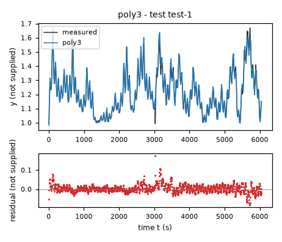
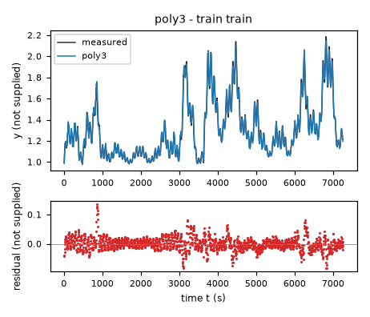
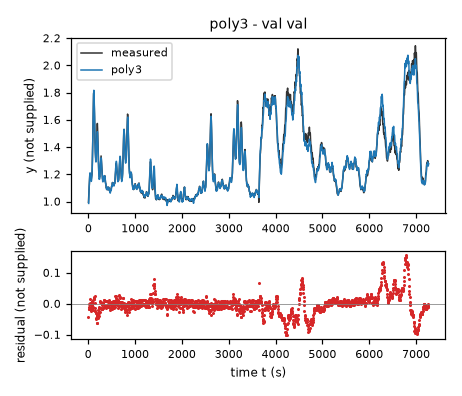
| Data | Trajectory | Scored samples | RMSE | NRMSE | R² | Failure |
|---|---|---|---|---|---|---|
| training data | train | 1451 of 1451 | 0.02332 | 0.08945 | 0.992 | none |
| validation data | val | 1453 of 1453 | 0.03338 | 0.1271 | 0.9838 | none |
| test data | test-1 | 1209 of 1209 | 0.02177 | 0.1562 | 0.9756 | none |
RMSE of y; NRMSE = RMSE / σ and R² = 1 − SSE / Σ(y[k] − μ)², with μ and σ the mean and the population standard deviation of the measured output on the scored samples.
y0 = 1 U_y (fixed), s0 = 1 U_y (fixed), u0 = 60 U_x1 (fixed), v0 = 20 U_x2 (fixed), c0 = -0.004711 U_y/s (fitted), c1 = -0.3339 U_y/s (fitted), c2 = -0.007757 U_y/s (fitted), c3 = 0.02576 U_y/s (fitted), c4 = -0.009939 U_y/s (fitted), c5 = 0.2081 U_y/s (fitted), c6 = 0.03079 U_y/s (fitted), c7 = 0.008389 U_y/s (fitted), c8 = -0.009258 U_y/s (fitted), c9 = 0.0038 U_y/s (fitted), k = 1.553 (fitted)y: 0.02547 · validation error: 0.03643 · test error: 0.02421Equations as written in the model file
dy = (c0*1 + c1*((y-y0)/s0) + c2*(x1/u0) + c3*(x2/v0) + c4*((y-y0)/s0)**2 + c5*((y-y0)/s0)*(x1/u0) + c6*((y-y0)/s0)*(x2/v0) + c7*(x1/u0)**2 + c8*(x1/u0)*(x2/v0) + c9*(x2/v0)**2)/(1+k*((y-y0)/s0)**2)
Equations with the values substituted
Every parameter is replaced by its value with 4 significant digits.
Parameters and estimation
| Name | Value | Unit | Type | Description |
|---|---|---|---|---|
y0 | 1 | U_y | fixed | State translation U_y, chosen before polynomial fitting as a convenient origin close to the observed lower state range; it is not a known physical zero. |
s0 | 1 | U_y | fixed | State scale U_y, chosen to make dimensionless without changing its numerical value. |
u0 | 60 | U_x1 | fixed | Input scale U_x1, chosen as a convenient near-central scale from inspection of training input magnitudes, not fitted. |
v0 | 20 | U_x2 | fixed | Input scale U_x2, chosen as a convenient near-central scale from inspection of training input magnitudes, not fitted. |
c0 | -0.0047115 | U_y/s | fitted | Coefficient multiplying 1, jointly estimated by final rollout least squares; initial value came from the training-only fits described in estimation. |
c1 | -0.333885 | U_y/s | fitted | Coefficient multiplying , jointly estimated by final rollout least squares; initial value came from the training-only fits described in estimation. |
c2 | -0.00775684 | U_y/s | fitted | Coefficient multiplying , jointly estimated by final rollout least squares; initial value came from the training-only fits described in estimation. |
c3 | 0.0257584 | U_y/s | fitted | Coefficient multiplying , jointly estimated by final rollout least squares; initial value came from the training-only fits described in estimation. |
c4 | -0.00993895 | U_y/s | fitted | Coefficient multiplying , jointly estimated by final rollout least squares; initial value came from the training-only fits described in estimation. |
c5 | 0.208071 | U_y/s | fitted | Coefficient multiplying , jointly estimated by final rollout least squares; initial value came from the training-only fits described in estimation. |
c6 | 0.0307862 | U_y/s | fitted | Coefficient multiplying , jointly estimated by final rollout least squares; initial value came from the training-only fits described in estimation. |
c7 | 0.00838947 | U_y/s | fitted | Coefficient multiplying , jointly estimated by final rollout least squares; initial value came from the training-only fits described in estimation. |
c8 | -0.00925839 | U_y/s | fitted | Coefficient multiplying , jointly estimated by final rollout least squares; initial value came from the training-only fits described in estimation. |
c9 | 0.00380032 | U_y/s | fitted | Coefficient multiplying , jointly estimated by final rollout least squares; initial value came from the training-only fits described in estimation. |
k | 1.55327 | - | fitted | Nonnegative state-normalization coefficient in , jointly estimated with numerator coefficients. |
- Criterion minimized
Sum of squared full-rollout state residuals over every row after the first in each file. Each rollout uses classical fourth-order Runge–Kutta, one step of
5s, withx1andx2held at the left sample. This matches the supplied evaluation objective rather than treating the sampled derivative as an instantaneous derivative.- Data
All rows of
data/train.csvanddata/val.csv, treated as two separately initialized uninterrupted trajectories, with sampling period5s from TASK.md. No measured-state resets inside either file and no rows removed. Validation was first used for structure comparison, then explicitly included in final calibration to use both available excitation patterns. Final validation errors are calibration diagnostics, not independent generalization estimates.- Method
Final parameters were estimated jointly with nonlinear least squares using
scipy.optimize.least_squares, trust-region reflective method,jacsupplied by forward sensitivity propagation through all four RK4 stages, andx_scale = "jac". This uses the exact chosen rollout and avoids finite-difference Jacobian cost; ordinary least squares cannot minimize its nonlinear trajectory objective. Parameter optimization coordinates are scaled by , a dimensionless numerical conditioning rule implemented inrefine.py. The stopping tolerances , , and are dimensionless solver settings; the maximum is120function evaluations. Final optimization is deterministic and uses no random seed. The bound is an assumed regularity constraint, not a measured property. The first10numerator coefficients were initialized by the degree-two training derivative ordinary least-squares solution, and was the initial rational denominator. Training-only rollout refinement supplied the numeric final-stage start listed below. Actual final-stage starts: U_y/s; U_y/s; U_y/s; U_y/s; U_y/s; U_y/s; U_y/s; U_y/s; U_y/s; U_y/s; . These starts were used because the training-only rollout fits had already produced finite plausible trajectories. No random numbers apply.- Script
reproduce_models.py
The agent's explanation
Rational nonlinear state-space vector field: quadratic polynomial numerator and positive quadratic state denominator. Rational model-family context: N. M. Mangan, S. L. Brunton, J. L. Proctor and J. N. Kutz, Inferring Biological Networks by Sparse Identification of Nonlinear Dynamics, IEEE Transactions on Molecular, Biological and Multi-Scale Communications 2, 52–63, 2016, DOI 10.1109/TMBMC.2016.2633265 (publisher bibliographic record checked). This fit is not sparse implicit SINDy.
The actual units are not supplied. U_y, U_x1, and U_x2 denote placeholders for the unknown units of y, x1, and x2; s denotes seconds. Normalized features and exponents are dimensionless. The numerator terms give constant drift, state feedback, input forcing and their quadratic interactions. Division by progressively attenuates the whole vector field away from the chosen state origin. makes the denominator at least 1, so there are no denominator poles. All terms have mathematical rather than established physical interpretations.
The quadratic derivative fit was substantially better than the affine baseline, but full-trajectory errors remained state dependent. A positive state-dependent denominator was therefore a guessed smooth rate attenuation, tested after polynomial and input-dependent damping models. The numerator keeps the full degree-two polynomial library; no term was selected by a physical assumption. The denominator was chosen instead of higher numerator degree as a compact alternative. The nonnegative denominator constraint was retained for domain safety.
No physical apparatus, units, measurement noise model or intended operating envelope is known. Inputs and the state are correlated along only two supplied files, so the fitted coefficients need not be separately causally identifiable. One anomalous middle transition occurs in each file; it was not used as a reset. Oscillatory serially correlated derivative residuals remain, consistent with omitted dynamics or timing effects but not proof of their cause; an autonomous scalar state with only the two current inputs cannot explicitly represent input history. Extrapolation beyond the supplied excitation is unvalidated. Although its denominator is globally positive, bounded-input global trajectory stability is not established.
Plots of simulated and measured y, and errors per trajectory
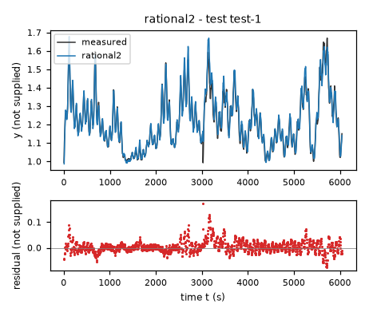
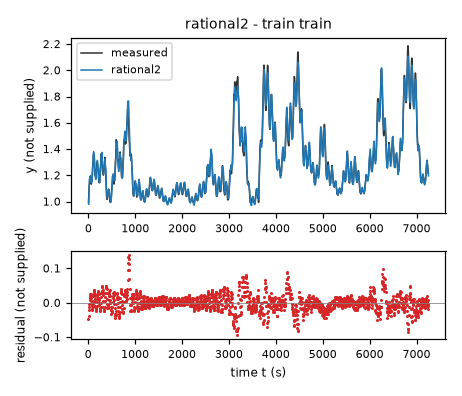
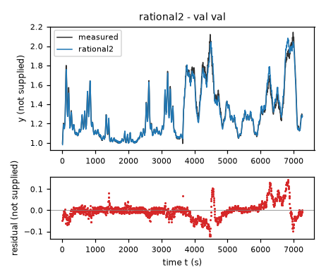
| Data | Trajectory | Scored samples | RMSE | NRMSE | R² | Failure |
|---|---|---|---|---|---|---|
| training data | train | 1451 of 1451 | 0.02547 | 0.09769 | 0.9905 | none |
| validation data | val | 1453 of 1453 | 0.03643 | 0.1388 | 0.9807 | none |
| test data | test-1 | 1209 of 1209 | 0.02421 | 0.1738 | 0.9698 | none |
RMSE of y; NRMSE = RMSE / σ and R² = 1 − SSE / Σ(y[k] − μ)², with μ and σ the mean and the population standard deviation of the measured output on the scored samples.
s0 = 1 U_y (fixed), v0 = 20 U_x2 (fixed), a0 = 180 U_x1 (fixed), eps = 0.05 (fixed), floor = 1e-12 (fixed), b0 = 0.002259 U_y/s (fitted), b1 = 0.02678 U_y/s (fitted), d0 = 0.01782 U_y/s (fitted), d1 = 0.08632 U_y/s (fitted), h = 0.9858 U_y (fitted), p = 0.4733 (fitted), q = 0.9176 (fitted), r = 0.8229 (fitted)y: 0.02404 · validation error: 0.03855 · test error: 0.02278Equations as written in the model file
dy = b0+b1*Max(x2/v0,floor)**q-(d0+d1*Max(cos(pi*x1/a0),floor)**r)*((y-h)/s0)*(((y-h)/s0)**2+eps**2)**((p-1)/2)
Equations with the values substituted
Every parameter is replaced by its value with 4 significant digits.
Parameters and estimation
| Name | Value | Unit | Type | Description |
|---|---|---|---|---|
s0 | 1 | U_y | fixed | State normalization U_y, chosen for dimensionless state power without changing its numerical magnitude. |
v0 | 20 | U_x2 | fixed | Input normalization U_x2, chosen during initial data inspection, not fitted. |
a0 | 180 | U_x1 | fixed | Trigonometric input scale U_x1. Chosen as a structural hypothesis so that the cosine crosses zero at U_x1, near the supplied upper excitation. This does not assert that the input is an angle or has degree units. |
eps | 0.05 | - | fixed | Dimensionless smoothing scale , chosen after diagnosing steep feedback in the preliminary model. Values 0.02 and 0.05 were compared on both supplied files; the latter reduced steepness without worsening rollout fit. It corresponds to U_y and avoids a singular fractional-power slope. |
floor | 1e-12 | - | fixed | Positive guard , chosen to define fractional input powers and parameter derivatives at zero. Not estimated from data. |
b0 | 0.0022593 | U_y/s | fitted | Constant drift coefficient; jointly estimated by final rollout least squares. |
b1 | 0.0267823 | U_y/s | fitted | Input forcing amplitude multiplying ; jointly estimated by final rollout least squares. |
d0 | 0.0178238 | U_y/s | fitted | Baseline restoring amplitude; jointly estimated by final rollout least squares. |
d1 | 0.086317 | U_y/s | fitted | Cosine-dependent restoring amplitude; jointly estimated by final rollout least squares. |
h | 0.985763 | U_y | fitted | State translation in the nonlinear response; jointly estimated by final rollout least squares. |
p | 0.473253 | - | fitted | Dimensionless state power; jointly estimated by final rollout least squares. |
q | 0.917568 | - | fitted | Dimensionless second-input power; jointly estimated by final rollout least squares. |
r | 0.822883 | - | fitted | Dimensionless cosine power; jointly estimated by final rollout least squares. |
- Criterion minimized
Sum of squared full-rollout state residuals over every row after the first in each file. Each rollout uses classical fourth-order Runge–Kutta, one step of
5s, withx1andx2held at the left sample. This matches the supplied evaluation objective rather than treating the sampled derivative as an instantaneous derivative.- Data
All rows of
data/train.csvanddata/val.csv, treated as two separately initialized uninterrupted trajectories, with sampling period5s from TASK.md. No measured-state resets inside either file and no rows removed. Validation was first used for structure comparison, then explicitly included in final calibration to use both available excitation patterns. Final validation errors are calibration diagnostics, not independent generalization estimates.- Method
Final parameters were estimated jointly with nonlinear least squares using
scipy.optimize.least_squares, trust-region reflective method,jacsupplied by forward sensitivity propagation through all four RK4 stages, andx_scale = "jac". This uses the exact chosen rollout and avoids finite-difference Jacobian cost; ordinary least squares cannot minimize its nonlinear trajectory objective. Parameter optimization coordinates are scaled by , a dimensionless numerical conditioning rule implemented inrefine.py. The stopping tolerances , , and are dimensionless solver settings; the maximum is120function evaluations. Final optimization is deterministic and uses no random seed. An initial trigonometric feature family was fitted against trainingdyby separable nonlinear least squares (variable projection):scipy.optimize.least_squaresfor the translation and powers, withnumpy.linalg.lstsqprofiling linear amplitudes at each iteration. Two starts were used for the original translation, U_y and U_y; powers started at , , and . The smaller derivative sum of squares selected that initialization. Preliminary smoothed derivative and training-rollout fits then provided the final-stage initialization. The final smoothing was chosen explicitly for lower feedback slope and near-identical rollout error, not claimed as a physical parameter. All eight final fitted parameters were then estimated together with held fixed. Bounds are assumed regularity/search constraints: , U_y/s, U_y/s, U_y, , , and .b0is unbounded. Actual final-stage starts: U_y/s; U_y/s; U_y/s; U_y/s; U_y; ; ; . No random seed applies.- Script
reproduce_models.py
The agent's explanation
Scalar nonlinear relaxation / generalized power-law drift with trigonometric gain scheduling. This is a phenomenological nonlinear state-space ODE, not a known physical apparatus model. General estimation reference: L. Ljung, System Identification: Theory for the User, second edition, Prentice Hall, 1999 (bibliographic details checked against the publisher).
The actual units are not supplied. U_y, U_x1, and U_x2 denote placeholders for the unknown units of y, x1, and x2; s denotes seconds. Normalized features and exponents are dimensionless. The forcing is . The normalized state response is ; it is smooth and odd around U_y, approximately a signed power far from that translation and approximately linear very near it. The positive factor supplies input-dependent restoring feedback: the feedback becomes weaker as the input increases over the supplied range. Cosine clipping is a mathematical gain saturation, not evidence for an angular actuator.
Polynomial coefficients suggested input-dependent feedback. Signed/shifted power regression brought the state exponent near a square root; the fitted feedback varied nonlinearly with the first input. Cosine, sine and algebraic input-gain families were therefore guessed and compared by derivative fit and validation rollouts. The cosine family gave a compact competitive alternative. A smooth signed power replaced a clipped fractional power so the state field stays real and differentiable below the fitted translation. Larger smoothing was subsequently tested to reduce fixed-step RK4 stiffness.
No physical apparatus, units, measurement noise model or intended operating envelope is known. Inputs and the state are correlated along only two supplied files, so the fitted coefficients need not be separately causally identifiable. One anomalous middle transition occurs in each file; it was not used as a reset. Oscillatory serially correlated derivative residuals remain, consistent with omitted dynamics or timing effects but not proof of their cause; an autonomous scalar state with only the two current inputs cannot explicitly represent input history. Extrapolation beyond the supplied excitation is unvalidated. The fixed trigonometric scale is not independently identified; nothing establishes periodic behavior beyond the supplied range. At the final parameters, the analytic upper bound on the feedback slope magnitude multiplied by the sampling period is about 2.523, computed from both-file fitted parameters. This is only a local scalar linear-stability diagnostic for RK4, not a proof of nonlinear integration accuracy. The positive baseline source is empirical and does not establish behavior with both inputs shut off.
Plots of simulated and measured y, and errors per trajectory
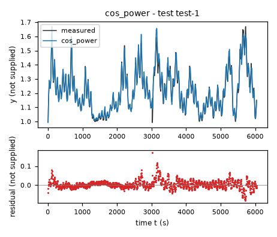
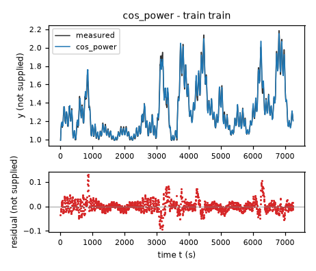
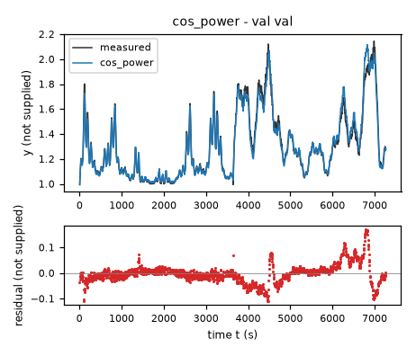
| Data | Trajectory | Scored samples | RMSE | NRMSE | R² | Failure |
|---|---|---|---|---|---|---|
| training data | train | 1451 of 1451 | 0.02404 | 0.09219 | 0.9915 | none |
| validation data | val | 1453 of 1453 | 0.03855 | 0.1468 | 0.9784 | none |
| test data | test-1 | 1209 of 1209 | 0.02278 | 0.1634 | 0.9733 | none |
RMSE of y; NRMSE = RMSE / σ and R² = 1 − SSE / Σ(y[k] − μ)², with μ and σ the mean and the population standard deviation of the measured output on the scored samples.
y0 = 1 U_y (fixed), s0 = 1 U_y (fixed), u0 = 60 U_x1 (fixed), v0 = 20 U_x2 (fixed), sy = 0.3 (fixed), three = 3 (fixed), ell = 2 (fitted), a0 = 0.04788 U_y/s (fitted), a1 = -0.1141 U_y/s (fitted), a2 = 0.0404 U_y/s (fitted), a3 = 0.006629 U_y/s (fitted), my0 = 0.2921 (fitted), mu0 = -1.478 (fitted), mv0 = -0.04082 (fitted), w0 = -0.4075 U_y/s (fitted), my1 = 1.023 (fitted), mu1 = 0.5996 (fitted), mv1 = 0.2936 (fitted), w1 = -0.3825 U_y/s (fitted), my2 = 0.3459 (fitted), mu2 = 0.5282 (fitted), mv2 = -1.523 (fitted), w2 = 0.2142 U_y/s (fitted), my3 = 2.317 (fitted), mu3 = 1.174 (fitted), mv3 = 0.8958 (fitted), w3 = 0.1678 U_y/s (fitted), my4 = 0.07628 (fitted), mu4 = -1.602 (fitted), mv4 = -1.446 (fitted), w4 = -0.145 U_y/s (fitted), my5 = 1.506 (fitted), mu5 = 1.002 (fitted), mv5 = -0.7373 (fitted), w5 = 0.0005834 U_y/s (fitted), my6 = 1.119 (fitted), mu6 = 0.3195 (fitted), mv6 = 0.9853 (fitted), w6 = -0.3027 U_y/s (fitted), my7 = 0.4351 (fitted), mu7 = -1.776 (fitted), mv7 = 0.8445 (fitted), w7 = -0.0184 U_y/s (fitted), my8 = 0.5281 (fitted), mu8 = 0.4392 (fitted), mv8 = -0.8312 (fitted), w8 = -0.2286 U_y/s (fitted), my9 = 2.656 (fitted), mu9 = 1.125 (fitted), mv9 = 0.01978 (fitted), w9 = -0.112 U_y/s (fitted), my10 = 0.6469 (fitted), mu10 = 0.1853 (fitted), mv10 = -0.1901 (fitted), w10 = -0.1365 U_y/s (fitted), my11 = 0.1473 (fitted), mu11 = 0.5648 (fitted), mv11 = -2.336 (fitted), w11 = -0.5124 U_y/s (fitted), my12 = 1.725 (fitted), mu12 = 0.5815 (fitted), mv12 = 0.8289 (fitted), w12 = 0.08504 U_y/s (fitted), my13 = 0.3027 (fitted), mu13 = -0.4345 (fitted), mv13 = -0.5146 (fitted), w13 = -0.05453 U_y/s (fitted), my14 = 1.59 (fitted), mu14 = 0.9936 (fitted), mv14 = 0.3142 (fitted), w14 = 0.02926 U_y/s (fitted), my15 = 0.7764 (fitted), mu15 = 1.022 (fitted), mv15 = -1.314 (fitted), w15 = 0.2032 U_y/s (fitted), my16 = 0.836 (fitted), mu16 = -0.1052 (fitted), mv16 = 0.4836 (fitted), w16 = 0.7498 U_y/s (fitted), my17 = 0.182 (fitted), mu17 = -1.829 (fitted), mv17 = -0.6658 (fitted), w17 = 0.3715 U_y/s (fitted), my18 = 0.7732 (fitted), mu18 = 0.9085 (fitted), mv18 = -0.4549 (fitted), w18 = 0.09384 U_y/s (fitted), my19 = 2.713 (fitted), mu19 = 0.5958 (fitted), mv19 = 1 (fitted), w19 = -0.1927 U_y/s (fitted), my20 = 3.318 (fitted), mu20 = 1.108 (fitted), mv20 = 0.7538 (fitted), w20 = 0.1489 U_y/s (fitted), my21 = 0.1793 (fitted), mu21 = -0.3359 (fitted), mv21 = -1.316 (fitted), w21 = 0.04769 U_y/s (fitted), my22 = -0.008607 (fitted), mu22 = -1.668 (fitted), mv22 = -2.498 (fitted), w22 = -0.1609 U_y/s (fitted), my23 = 0.01565 (fitted), mu23 = -0.3973 (fitted), mv23 = -2.388 (fitted), w23 = 0.3822 U_y/s (fitted)y: 0.02495 · validation error: 0.03356 · test error: 0.02253Equations as written in the model file
dy = a0*1 + a1*((y-y0)/s0) + a2*(x1/u0) + a3*(x2/v0) + w0*exp(-((((y-y0)/s0)/sy-my0)**2+((x1/u0-1)*three-mu0)**2+((x2/v0-1)*three-mv0)**2)/(2*ell**2)) + w1*exp(-((((y-y0)/s0)/sy-my1)**2+((x1/u0-1)*three-mu1)**2+((x2/v0-1)*three-mv1)**2)/(2*ell**2)) + w2*exp(-((((y-y0)/s0)/sy-my2)**2+((x1/u0-1)*three-mu2)**2+((x2/v0-1)*three-mv2)**2)/(2*ell**2)) + w3*exp(-((((y-y0)/s0)/sy-my3)**2+((x1/u0-1)*three-mu3)**2+((x2/v0-1)*three-mv3)**2)/(2*ell**2)) + w4*exp(-((((y-y0)/s0)/sy-my4)**2+((x1/u0-1)*three-mu4)**2+((x2/v0-1)*three-mv4)**2)/(2*ell**2)) + w5*exp(-((((y-y0)/s0)/sy-my5)**2+((x1/u0-1)*three-mu5)**2+((x2/v0-1)*three-mv5)**2)/(2*ell**2)) + w6*exp(-((((y-y0)/s0)/sy-my6)**2+((x1/u0-1)*three-mu6)**2+((x2/v0-1)*three-mv6)**2)/(2*ell**2)) + w7*exp(-((((y-y0)/s0)/sy-my7)**2+((x1/u0-1)*three-mu7)**2+((x2/v0-1)*three-mv7)**2)/(2*ell**2)) + w8*exp(-((((y-y0)/s0)/sy-my8)**2+((x1/u0-1)*three-mu8)**2+((x2/v0-1)*three-mv8)**2)/(2*ell**2)) + w9*exp(-((((y-y0)/s0)/sy-my9)**2+((x1/u0-1)*three-mu9)**2+((x2/v0-1)*three-mv9)**2)/(2*ell**2)) + w10*exp(-((((y-y0)/s0)/sy-my10)**2+((x1/u0-1)*three-mu10)**2+((x2/v0-1)*three-mv10)**2)/(2*ell**2)) + w11*exp(-((((y-y0)/s0)/sy-my11)**2+((x1/u0-1)*three-mu11)**2+((x2/v0-1)*three-mv11)**2)/(2*ell**2)) + w12*exp(-((((y-y0)/s0)/sy-my12)**2+((x1/u0-1)*three-mu12)**2+((x2/v0-1)*three-mv12)**2)/(2*ell**2)) + w13*exp(-((((y-y0)/s0)/sy-my13)**2+((x1/u0-1)*three-mu13)**2+((x2/v0-1)*three-mv13)**2)/(2*ell**2)) + w14*exp(-((((y-y0)/s0)/sy-my14)**2+((x1/u0-1)*three-mu14)**2+((x2/v0-1)*three-mv14)**2)/(2*ell**2)) + w15*exp(-((((y-y0)/s0)/sy-my15)**2+((x1/u0-1)*three-mu15)**2+((x2/v0-1)*three-mv15)**2)/(2*ell**2)) + w16*exp(-((((y-y0)/s0)/sy-my16)**2+((x1/u0-1)*three-mu16)**2+((x2/v0-1)*three-mv16)**2)/(2*ell**2)) + w17*exp(-((((y-y0)/s0)/sy-my17)**2+((x1/u0-1)*three-mu17)**2+((x2/v0-1)*three-mv17)**2)/(2*ell**2)) + w18*exp(-((((y-y0)/s0)/sy-my18)**2+((x1/u0-1)*three-mu18)**2+((x2/v0-1)*three-mv18)**2)/(2*ell**2)) + w19*exp(-((((y-y0)/s0)/sy-my19)**2+((x1/u0-1)*three-mu19)**2+((x2/v0-1)*three-mv19)**2)/(2*ell**2)) + w20*exp(-((((y-y0)/s0)/sy-my20)**2+((x1/u0-1)*three-mu20)**2+((x2/v0-1)*three-mv20)**2)/(2*ell**2)) + w21*exp(-((((y-y0)/s0)/sy-my21)**2+((x1/u0-1)*three-mu21)**2+((x2/v0-1)*three-mv21)**2)/(2*ell**2)) + w22*exp(-((((y-y0)/s0)/sy-my22)**2+((x1/u0-1)*three-mu22)**2+((x2/v0-1)*three-mv22)**2)/(2*ell**2)) + w23*exp(-((((y-y0)/s0)/sy-my23)**2+((x1/u0-1)*three-mu23)**2+((x2/v0-1)*three-mv23)**2)/(2*ell**2))
Equations with the values substituted
Every parameter is replaced by its value with 4 significant digits.
Parameters and estimation
| Name | Value | Unit | Type | Description |
|---|---|---|---|---|
y0 | 1 | U_y | fixed | State translation U_y, chosen before polynomial fitting as a convenient origin close to the observed lower state range; it is not a known physical zero. |
s0 | 1 | U_y | fixed | State scale U_y, chosen to make dimensionless without changing its numerical value. |
u0 | 60 | U_x1 | fixed | Input scale U_x1, chosen as a convenient near-central scale from inspection of training input magnitudes, not fitted. |
v0 | 20 | U_x2 | fixed | Input scale U_x2, chosen as a convenient near-central scale from inspection of training input magnitudes, not fitted. |
sy | 0.3 | - | fixed | Additional dimensionless state scaling , chosen from the approximate training state spread for roughly balanced K-means coordinates. |
three | 3 | - | fixed | Dimensionless input-coordinate scale , chosen so input deviations in and have order-one spreads. |
ell | 2 | - | fitted | Common dimensionless Gaussian width selected with cluster count and ridge penalty by a finite-grid validation-rollout comparison; subsequently carried unchanged into the final weight fit. |
a0 | 0.0478843 | U_y/s | fitted | Affine-tail coefficient of 1; jointly estimated with all bump weights. |
a1 | -0.114088 | U_y/s | fitted | Affine-tail coefficient of ; jointly estimated with all bump weights. |
a2 | 0.0403954 | U_y/s | fitted | Affine-tail coefficient of ; jointly estimated with all bump weights. |
a3 | 0.00662938 | U_y/s | fitted | Affine-tail coefficient of ; jointly estimated with all bump weights. |
my0 | 0.292069 | - | fitted | Center coordinate for of Gaussian bump w0, estimated by training-only K-means, then carried unchanged into the final weight fit. |
mu0 | -1.47817 | - | fitted | Center coordinate for of Gaussian bump w0, estimated by training-only K-means, then carried unchanged into the final weight fit. |
mv0 | -0.0408154 | - | fitted | Center coordinate for of Gaussian bump w0, estimated by training-only K-means, then carried unchanged into the final weight fit. |
w0 | -0.407536 | U_y/s | fitted | Amplitude of local Gaussian bump ; jointly estimated with all affine-tail coefficients in final regularized rollout fit. |
my1 | 1.02268 | - | fitted | Center coordinate for of Gaussian bump w1, estimated by training-only K-means, then carried unchanged into the final weight fit. |
mu1 | 0.599566 | - | fitted | Center coordinate for of Gaussian bump w1, estimated by training-only K-means, then carried unchanged into the final weight fit. |
mv1 | 0.293565 | - | fitted | Center coordinate for of Gaussian bump w1, estimated by training-only K-means, then carried unchanged into the final weight fit. |
w1 | -0.38254 | U_y/s | fitted | Amplitude of local Gaussian bump ; jointly estimated with all affine-tail coefficients in final regularized rollout fit. |
my2 | 0.345936 | - | fitted | Center coordinate for of Gaussian bump w2, estimated by training-only K-means, then carried unchanged into the final weight fit. |
mu2 | 0.528195 | - | fitted | Center coordinate for of Gaussian bump w2, estimated by training-only K-means, then carried unchanged into the final weight fit. |
mv2 | -1.52312 | - | fitted | Center coordinate for of Gaussian bump w2, estimated by training-only K-means, then carried unchanged into the final weight fit. |
w2 | 0.214238 | U_y/s | fitted | Amplitude of local Gaussian bump ; jointly estimated with all affine-tail coefficients in final regularized rollout fit. |
my3 | 2.3174 | - | fitted | Center coordinate for of Gaussian bump w3, estimated by training-only K-means, then carried unchanged into the final weight fit. |
mu3 | 1.17356 | - | fitted | Center coordinate for of Gaussian bump w3, estimated by training-only K-means, then carried unchanged into the final weight fit. |
mv3 | 0.895808 | - | fitted | Center coordinate for of Gaussian bump w3, estimated by training-only K-means, then carried unchanged into the final weight fit. |
w3 | 0.167792 | U_y/s | fitted | Amplitude of local Gaussian bump ; jointly estimated with all affine-tail coefficients in final regularized rollout fit. |
my4 | 0.0762783 | - | fitted | Center coordinate for of Gaussian bump w4, estimated by training-only K-means, then carried unchanged into the final weight fit. |
mu4 | -1.602 | - | fitted | Center coordinate for of Gaussian bump w4, estimated by training-only K-means, then carried unchanged into the final weight fit. |
mv4 | -1.44624 | - | fitted | Center coordinate for of Gaussian bump w4, estimated by training-only K-means, then carried unchanged into the final weight fit. |
w4 | -0.145004 | U_y/s | fitted | Amplitude of local Gaussian bump ; jointly estimated with all affine-tail coefficients in final regularized rollout fit. |
my5 | 1.50591 | - | fitted | Center coordinate for of Gaussian bump w5, estimated by training-only K-means, then carried unchanged into the final weight fit. |
mu5 | 1.0017 | - | fitted | Center coordinate for of Gaussian bump w5, estimated by training-only K-means, then carried unchanged into the final weight fit. |
mv5 | -0.737275 | - | fitted | Center coordinate for of Gaussian bump w5, estimated by training-only K-means, then carried unchanged into the final weight fit. |
w5 | 0.00058344 | U_y/s | fitted | Amplitude of local Gaussian bump ; jointly estimated with all affine-tail coefficients in final regularized rollout fit. |
my6 | 1.11887 | - | fitted | Center coordinate for of Gaussian bump w6, estimated by training-only K-means, then carried unchanged into the final weight fit. |
mu6 | 0.319503 | - | fitted | Center coordinate for of Gaussian bump w6, estimated by training-only K-means, then carried unchanged into the final weight fit. |
mv6 | 0.985347 | - | fitted | Center coordinate for of Gaussian bump w6, estimated by training-only K-means, then carried unchanged into the final weight fit. |
w6 | -0.302695 | U_y/s | fitted | Amplitude of local Gaussian bump ; jointly estimated with all affine-tail coefficients in final regularized rollout fit. |
my7 | 0.435136 | - | fitted | Center coordinate for of Gaussian bump w7, estimated by training-only K-means, then carried unchanged into the final weight fit. |
mu7 | -1.77599 | - | fitted | Center coordinate for of Gaussian bump w7, estimated by training-only K-means, then carried unchanged into the final weight fit. |
mv7 | 0.844483 | - | fitted | Center coordinate for of Gaussian bump w7, estimated by training-only K-means, then carried unchanged into the final weight fit. |
w7 | -0.0184016 | U_y/s | fitted | Amplitude of local Gaussian bump ; jointly estimated with all affine-tail coefficients in final regularized rollout fit. |
my8 | 0.528112 | - | fitted | Center coordinate for of Gaussian bump w8, estimated by training-only K-means, then carried unchanged into the final weight fit. |
mu8 | 0.439158 | - | fitted | Center coordinate for of Gaussian bump w8, estimated by training-only K-means, then carried unchanged into the final weight fit. |
mv8 | -0.831193 | - | fitted | Center coordinate for of Gaussian bump w8, estimated by training-only K-means, then carried unchanged into the final weight fit. |
w8 | -0.228563 | U_y/s | fitted | Amplitude of local Gaussian bump ; jointly estimated with all affine-tail coefficients in final regularized rollout fit. |
my9 | 2.65647 | - | fitted | Center coordinate for of Gaussian bump w9, estimated by training-only K-means, then carried unchanged into the final weight fit. |
mu9 | 1.12485 | - | fitted | Center coordinate for of Gaussian bump w9, estimated by training-only K-means, then carried unchanged into the final weight fit. |
mv9 | 0.0197843 | - | fitted | Center coordinate for of Gaussian bump w9, estimated by training-only K-means, then carried unchanged into the final weight fit. |
w9 | -0.111962 | U_y/s | fitted | Amplitude of local Gaussian bump ; jointly estimated with all affine-tail coefficients in final regularized rollout fit. |
my10 | 0.646943 | - | fitted | Center coordinate for of Gaussian bump w10, estimated by training-only K-means, then carried unchanged into the final weight fit. |
mu10 | 0.185274 | - | fitted | Center coordinate for of Gaussian bump w10, estimated by training-only K-means, then carried unchanged into the final weight fit. |
mv10 | -0.190137 | - | fitted | Center coordinate for of Gaussian bump w10, estimated by training-only K-means, then carried unchanged into the final weight fit. |
w10 | -0.136452 | U_y/s | fitted | Amplitude of local Gaussian bump ; jointly estimated with all affine-tail coefficients in final regularized rollout fit. |
my11 | 0.147327 | - | fitted | Center coordinate for of Gaussian bump w11, estimated by training-only K-means, then carried unchanged into the final weight fit. |
mu11 | 0.56479 | - | fitted | Center coordinate for of Gaussian bump w11, estimated by training-only K-means, then carried unchanged into the final weight fit. |
mv11 | -2.33558 | - | fitted | Center coordinate for of Gaussian bump w11, estimated by training-only K-means, then carried unchanged into the final weight fit. |
w11 | -0.51242 | U_y/s | fitted | Amplitude of local Gaussian bump ; jointly estimated with all affine-tail coefficients in final regularized rollout fit. |
my12 | 1.72549 | - | fitted | Center coordinate for of Gaussian bump w12, estimated by training-only K-means, then carried unchanged into the final weight fit. |
mu12 | 0.581514 | - | fitted | Center coordinate for of Gaussian bump w12, estimated by training-only K-means, then carried unchanged into the final weight fit. |
mv12 | 0.828945 | - | fitted | Center coordinate for of Gaussian bump w12, estimated by training-only K-means, then carried unchanged into the final weight fit. |
w12 | 0.0850364 | U_y/s | fitted | Amplitude of local Gaussian bump ; jointly estimated with all affine-tail coefficients in final regularized rollout fit. |
my13 | 0.302662 | - | fitted | Center coordinate for of Gaussian bump w13, estimated by training-only K-means, then carried unchanged into the final weight fit. |
mu13 | -0.434473 | - | fitted | Center coordinate for of Gaussian bump w13, estimated by training-only K-means, then carried unchanged into the final weight fit. |
mv13 | -0.514561 | - | fitted | Center coordinate for of Gaussian bump w13, estimated by training-only K-means, then carried unchanged into the final weight fit. |
w13 | -0.0545318 | U_y/s | fitted | Amplitude of local Gaussian bump ; jointly estimated with all affine-tail coefficients in final regularized rollout fit. |
my14 | 1.58954 | - | fitted | Center coordinate for of Gaussian bump w14, estimated by training-only K-means, then carried unchanged into the final weight fit. |
mu14 | 0.993635 | - | fitted | Center coordinate for of Gaussian bump w14, estimated by training-only K-means, then carried unchanged into the final weight fit. |
mv14 | 0.314172 | - | fitted | Center coordinate for of Gaussian bump w14, estimated by training-only K-means, then carried unchanged into the final weight fit. |
w14 | 0.0292617 | U_y/s | fitted | Amplitude of local Gaussian bump ; jointly estimated with all affine-tail coefficients in final regularized rollout fit. |
my15 | 0.77641 | - | fitted | Center coordinate for of Gaussian bump w15, estimated by training-only K-means, then carried unchanged into the final weight fit. |
mu15 | 1.02224 | - | fitted | Center coordinate for of Gaussian bump w15, estimated by training-only K-means, then carried unchanged into the final weight fit. |
mv15 | -1.31358 | - | fitted | Center coordinate for of Gaussian bump w15, estimated by training-only K-means, then carried unchanged into the final weight fit. |
w15 | 0.203187 | U_y/s | fitted | Amplitude of local Gaussian bump ; jointly estimated with all affine-tail coefficients in final regularized rollout fit. |
my16 | 0.835961 | - | fitted | Center coordinate for of Gaussian bump w16, estimated by training-only K-means, then carried unchanged into the final weight fit. |
mu16 | -0.105167 | - | fitted | Center coordinate for of Gaussian bump w16, estimated by training-only K-means, then carried unchanged into the final weight fit. |
mv16 | 0.48361 | - | fitted | Center coordinate for of Gaussian bump w16, estimated by training-only K-means, then carried unchanged into the final weight fit. |
w16 | 0.749756 | U_y/s | fitted | Amplitude of local Gaussian bump ; jointly estimated with all affine-tail coefficients in final regularized rollout fit. |
my17 | 0.181993 | - | fitted | Center coordinate for of Gaussian bump w17, estimated by training-only K-means, then carried unchanged into the final weight fit. |
mu17 | -1.82919 | - | fitted | Center coordinate for of Gaussian bump w17, estimated by training-only K-means, then carried unchanged into the final weight fit. |
mv17 | -0.66578 | - | fitted | Center coordinate for of Gaussian bump w17, estimated by training-only K-means, then carried unchanged into the final weight fit. |
w17 | 0.371495 | U_y/s | fitted | Amplitude of local Gaussian bump ; jointly estimated with all affine-tail coefficients in final regularized rollout fit. |
my18 | 0.773159 | - | fitted | Center coordinate for of Gaussian bump w18, estimated by training-only K-means, then carried unchanged into the final weight fit. |
mu18 | 0.908454 | - | fitted | Center coordinate for of Gaussian bump w18, estimated by training-only K-means, then carried unchanged into the final weight fit. |
mv18 | -0.45492 | - | fitted | Center coordinate for of Gaussian bump w18, estimated by training-only K-means, then carried unchanged into the final weight fit. |
w18 | 0.0938389 | U_y/s | fitted | Amplitude of local Gaussian bump ; jointly estimated with all affine-tail coefficients in final regularized rollout fit. |
my19 | 2.71333 | - | fitted | Center coordinate for of Gaussian bump w19, estimated by training-only K-means, then carried unchanged into the final weight fit. |
mu19 | 0.595765 | - | fitted | Center coordinate for of Gaussian bump w19, estimated by training-only K-means, then carried unchanged into the final weight fit. |
mv19 | 1.00005 | - | fitted | Center coordinate for of Gaussian bump w19, estimated by training-only K-means, then carried unchanged into the final weight fit. |
w19 | -0.192746 | U_y/s | fitted | Amplitude of local Gaussian bump ; jointly estimated with all affine-tail coefficients in final regularized rollout fit. |
my20 | 3.31818 | - | fitted | Center coordinate for of Gaussian bump w20, estimated by training-only K-means, then carried unchanged into the final weight fit. |
mu20 | 1.10828 | - | fitted | Center coordinate for of Gaussian bump w20, estimated by training-only K-means, then carried unchanged into the final weight fit. |
mv20 | 0.753811 | - | fitted | Center coordinate for of Gaussian bump w20, estimated by training-only K-means, then carried unchanged into the final weight fit. |
w20 | 0.148942 | U_y/s | fitted | Amplitude of local Gaussian bump ; jointly estimated with all affine-tail coefficients in final regularized rollout fit. |
my21 | 0.179282 | - | fitted | Center coordinate for of Gaussian bump w21, estimated by training-only K-means, then carried unchanged into the final weight fit. |
mu21 | -0.335937 | - | fitted | Center coordinate for of Gaussian bump w21, estimated by training-only K-means, then carried unchanged into the final weight fit. |
mv21 | -1.31636 | - | fitted | Center coordinate for of Gaussian bump w21, estimated by training-only K-means, then carried unchanged into the final weight fit. |
w21 | 0.0476928 | U_y/s | fitted | Amplitude of local Gaussian bump ; jointly estimated with all affine-tail coefficients in final regularized rollout fit. |
my22 | -0.0086071 | - | fitted | Center coordinate for of Gaussian bump w22, estimated by training-only K-means, then carried unchanged into the final weight fit. |
mu22 | -1.66832 | - | fitted | Center coordinate for of Gaussian bump w22, estimated by training-only K-means, then carried unchanged into the final weight fit. |
mv22 | -2.49771 | - | fitted | Center coordinate for of Gaussian bump w22, estimated by training-only K-means, then carried unchanged into the final weight fit. |
w22 | -0.16091 | U_y/s | fitted | Amplitude of local Gaussian bump ; jointly estimated with all affine-tail coefficients in final regularized rollout fit. |
my23 | 0.015654 | - | fitted | Center coordinate for of Gaussian bump w23, estimated by training-only K-means, then carried unchanged into the final weight fit. |
mu23 | -0.397325 | - | fitted | Center coordinate for of Gaussian bump w23, estimated by training-only K-means, then carried unchanged into the final weight fit. |
mv23 | -2.38843 | - | fitted | Center coordinate for of Gaussian bump w23, estimated by training-only K-means, then carried unchanged into the final weight fit. |
w23 | 0.382192 | U_y/s | fitted | Amplitude of local Gaussian bump ; jointly estimated with all affine-tail coefficients in final regularized rollout fit. |
- Criterion minimized
Sum of squared full-rollout state residuals over every row after the first in each file. Each rollout uses classical fourth-order Runge–Kutta, one step of
5s, withx1andx2held at the left sample. This matches the supplied evaluation objective rather than treating the sampled derivative as an instantaneous derivative. Added a dimensionless shrinkage penalty where in the optimizer's numerical coefficient coordinates. The anchor is the previous training-rollout coefficient vector. The weak penalty limits large compensating local weights where excitation is sparse; it is not a measured noise variance.- Data
All rows of
data/train.csvanddata/val.csv, treated as two separately initialized uninterrupted trajectories, with sampling period5s from TASK.md. No measured-state resets inside either file and no rows removed. Validation was first used for structure comparison, then explicitly included in final calibration to use both available excitation patterns. Final validation errors are calibration diagnostics, not independent generalization estimates. All centers were estimated on training states and inputs only; validation affects width/count selection and final amplitudes but not center positions.- Method
The normalized training coordinates are , , and . K-means with
sklearn.cluster.KMeans, K-means++ initialization, , and estimated center coordinates by minimizing within-cluster squared distances; data-dependent K-means++ provides starting centers, so no manually specified numerical centers apply. Gaussian widths0.7,1.2, and2, cluster counts8,16,24, and40, and initial ridge penalties0.0001,0.01, and1were screened. For each, initial affine/bump amplitudes minimized training derivative squared error plus ridge penalty withnumpy.linalg.lstsqon augmented design rows, requiring no starting values. Width , count24, and ridge penalty0.0001were selected by lowest validation-rollout RMSE among candidates with negative affine state coefficient. Center coordinates and width were then held unchanged. Final parameters were estimated jointly with nonlinear least squares usingscipy.optimize.least_squares, trust-region reflective method,jacsupplied by forward sensitivity propagation through all four RK4 stages, andx_scale = "jac". This uses the exact chosen rollout and avoids finite-difference Jacobian cost; ordinary least squares cannot minimize its nonlinear trajectory objective. Parameter optimization coordinates are scaled by , a dimensionless numerical conditioning rule implemented inrefine.py. The stopping tolerances , , and are dimensionless solver settings; the maximum is120function evaluations. Final optimization is deterministic and uses no random seed. A first regularized training-rollout coefficient refinement provided the following final-stage start/penalty anchor: U_y/s; U_y/s; U_y/s; U_y/s; U_y/s; U_y/s; U_y/s; U_y/s; U_y/s; U_y/s; U_y/s; U_y/s; U_y/s; U_y/s; U_y/s; U_y/s; U_y/s; U_y/s; U_y/s; U_y/s; U_y/s; U_y/s; U_y/s; U_y/s; U_y/s; U_y/s; U_y/s; U_y/s. All affine coefficients and Gaussian amplitudes were finally estimated together. The constraint U_y/s prevents an unstable affine state tail outside the Gaussian support. The shrinkage weight is0.01, a dimensionless solver setting. K-means is reproducible with the stated seed; weight optimization uses no random numbers.- Script
reproduce_models.py
The agent's explanation
Gaussian radial-basis-function regression with an affine tail, represented as an explicit scalar continuous-time vector field. Reference: J. Moody and C. J. Darken, Fast Learning in Networks of Locally-Tuned Processing Units, Neural Computation 1, 281–294, 1989, DOI 10.1162/neco.1989.1.2.281 (publisher bibliographic record checked).
The actual units are not supplied. U_y, U_x1, and U_x2 denote placeholders for the unknown units of y, x1, and x2; s denotes seconds. Normalized features and exponents are dimensionless. The affine tail supplies baseline forcing and negative far-field state feedback. Each wi is a signed local change in derivative around the normalized training-input/state center whose coordinates are myi, mui, and mvi; the actual numbered symbols and full bump expressions are specified in the parameter descriptions. ell is their common dimensionless width. Positive amplitudes increase the local derivative; negative amplitudes decrease it. No local bump is assigned a physical mechanism.
Polynomial/rational residuals still varied across state-input regions, so localized smooth corrections were tried as a structurally different interpolation family. Training K-means selected centers without fitting derivative labels. Validation rollouts selected width/count/ridge setting. Derivative fits with larger or narrower networks were not consistently better, so the lowest-screening-error configuration was retained rather than maximizing network size. A negative affine tail and mild amplitude shrinkage were imposed to limit unsupported far-field and cancellation behavior.
No physical apparatus, units, measurement noise model or intended operating envelope is known. Inputs and the state are correlated along only two supplied files, so the fitted coefficients need not be separately causally identifiable. One anomalous middle transition occurs in each file; it was not used as a reset. Oscillatory serially correlated derivative residuals remain, consistent with omitted dynamics or timing effects but not proof of their cause; an autonomous scalar state with only the two current inputs cannot explicitly represent input history. Extrapolation beyond the supplied excitation is unvalidated. This model is less parsimonious and less mechanistically interpretable than the recommended polynomial. The center locations are empirical summaries, not physical thresholds; many amplitudes compensate one another. K-means centers may be poorly supported in directions normal to the two trajectories. Far from all centers the field becomes affine, an imposed extrapolation rule rather than a verified law. Its final derivative/trajectory calibration scores do not establish test performance.
Plots of simulated and measured y, and errors per trajectory
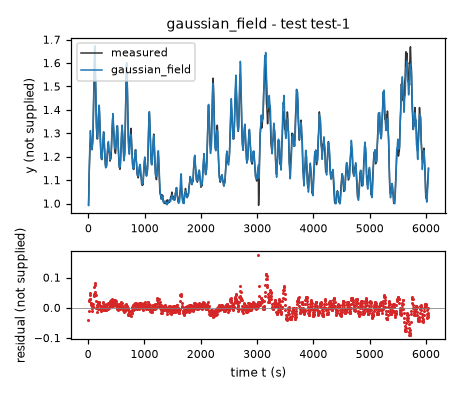
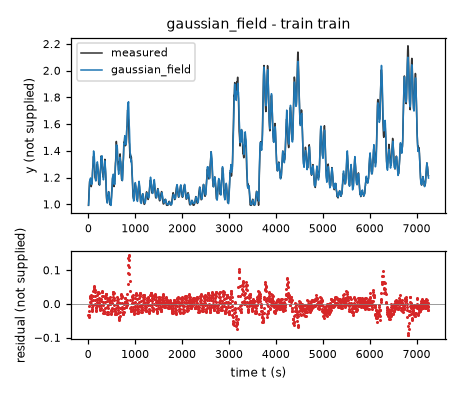
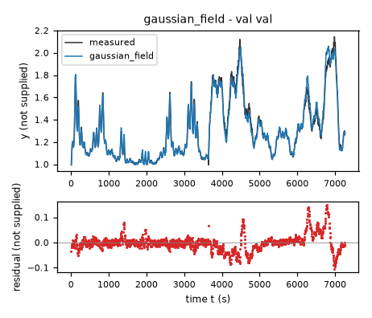
| Data | Trajectory | Scored samples | RMSE | NRMSE | R² | Failure |
|---|---|---|---|---|---|---|
| training data | train | 1451 of 1451 | 0.02495 | 0.09567 | 0.9908 | none |
| validation data | val | 1453 of 1453 | 0.03356 | 0.1278 | 0.9837 | none |
| test data | test-1 | 1209 of 1209 | 0.02253 | 0.1617 | 0.9739 | none |
RMSE of y; NRMSE = RMSE / σ and R² = 1 − SSE / Σ(y[k] − μ)², with μ and σ the mean and the population standard deviation of the measured output on the scored samples.
2 Course of the run
The system prompt, TASK.md and FORMAT.md that the agent received are shown on the page of the experiment.
0:00Harness: opening message to the agent
10:07Read TASK.md0.01
5,474 input and 19 output tokens; 0.011 USD for this turn.
TASK.md
output as sent to the agent (3,449 characters, 38 lines)
[TASK.md: 3422 characters] # Task: Identification task qtqm ## 1 System and intended use The task gives no description of the system. The task states no intended use of the model. ## 2 Data `data/train.csv` holds 1452 samples of training data: one trajectory of consecutive samples. `data/val.csv` holds 1454 samples of validation data: one trajectory of consecutive samples. Whether and how you use the validation data is your decision. Row k+1 of a trajectory is the sample that follows row k; different trajectories are separate experiments. The sampling period is T_s = 5 s. | Column | Role | Unit | Training range | Description | |---|---|---|---|---| | `y` | state, scored output | not supplied | not declared | not supplied | | `x1` | input | not supplied | not declared | not supplied | | `x2` | input | not supplied | not declared | not supplied | | `dy` | sampled time derivative of `y` | not supplied | not declared | not supplied | The task does not state the units. The task does not describe the columns. ## 3 What you deliver A candidate is a continuous-time model of one closed-form expression, `dy`: the time derivative of the state `y` as a function of `y`, `x1` and `x2`. The column `dy` is a possible fitting target for the derivative of `y`; it is not an argument of the expressions. `FORMAT.md` states how an expression is written and what it may contain. Write one file per candidate, `models/<label>.json`; `FORMAT.md` describes the file and gives an example. Write also `models/pool.json`, which lists the labels of your candidates in the order in which they are to be evaluated. You can recommend one candidate that you consider the best-performing. `models/pool.json` then names that candidate and gives your reason. Run `python check_submission.py` to check your files: it prints every error with its location, so that you can correct it. At most 10 candidates are evaluated, in the order of `models/pool.json`. Consider various identification approaches, for example physically motivated structures, symbolic-regression search or sparse regression; before fitting, list the approaches and the model families you will try. Build the pool from structurally different model families, not from variations of one form. Examine the residuals of your best candidates and try structures that can represent what they show. Include only candidates you would defend as a model of the system. ## 4 Evaluation The harness, the software that runs this task, evaluates every candidate on test data that you cannot access. For each test trajectory it starts from the first logged state and integrates the expressions with the classical fourth-order Runge–Kutta method, one step per sampling period, with the logged inputs held constant between samples; a simulated state is never replaced by a later measurement. The score is the root mean squared error (RMSE) between simulated and logged `y` over all test samples after the first of each trajectory. An evaluation fails when a value is not finite, when `y` leaves [-100, 100], or when it takes longer than 60 s. ## 5 Limits and completion One round: 60 turns, 3600 s of execution time, 10 USD; a turn is one response of yours. When the files pass the check, send the exact message DONE. If the harness's check of the files then fails, you receive its report and may correct the files once. If a limit ends the round earlier, the complete candidate files are evaluated.
20:10Read FORMAT.md; listed the files0.02
6,270 input and 47 output tokens; 0.013 USD for this turn.
FORMAT.md
output as sent to the agent (8,159 characters, 128 lines)
[FORMAT.md: 8130 characters]
# Model file format
This file is the same for every task. `TASK.md` names the expression keys, the variables and the permitted functions of your task.
## Candidate file `models/<label>.json`
Write one JSON file per candidate. The label is the file name: a letter, then up to 31 letters, digits, `_` or `-`. The file has these fields and no others:
- `expressions`: one expression text per expression key named in `TASK.md`.
- `parameters`: one row per parameter. A parameter is a constant of the expressions that you name yourself, for example `a1`. Its row has
- `name`: the name used in the expressions: a letter, then letters, digits or `_`; it differs from every column, expression key, constant and function name;
- `value`: the numerical value;
- `unit`: the unit; `-` for a dimensionless quantity;
- `type`: `fitted` (estimated from data), `fixed` (chosen or known, not estimated) or `tied` (computed from other parameters by `equation`);
- `description`: what the parameter represents; for a fixed value, where the value comes from and why it was chosen; for a value taken over from another candidate or an earlier fit, from which one;
- `equation`: for a tied parameter only: its defining equation over other parameters, given constants and numbers.
- `estimation`: how the values of the fitted parameters of this candidate were obtained and why in this way; for every fitted parameter it must be clear how its value was found. Write the record for this candidate model, not for the run as a whole: its own criterion, data, method and starting values, with the reasons that apply to this candidate. The record has
- `criterion`: what was minimized, on which variable, and why this criterion;
- `data`: the files, trajectories or rows used, and the reason when some were left out;
- `method`: how the values were estimated: the estimation method by its established name and the software function, and why this method and not another; the starting values as numbers, or the statement that the method needs none, and why these starting values; whether all fitted parameters were estimated together in one step and, if not, which parameters were estimated in which step, with which criterion, and why; the seeds where they apply;
- `script`: the file in the working directory that reproduces the values.
- `discussion`: four texts, in this order:
- `family`: the model family by its established name, with a reference where you know one;
- `interpretation`: what each term represents in the system; describe a term without a known physical meaning by its mathematical effect;
- `origin`: how you arrived at the structure of this expression, as distinct from its parameter values, which `estimation` covers: say which of its terms, variables and operators came from physical reasoning, which from a search and which from a guess, what you tried before, and what made you change it;
- `limitations`: what the data do not determine and where the model is not expected to hold.
- `answers`: only when `TASK.md` asks questions about the candidates: one text per question identifier.
- `predecessor`: only in a later round of an interactive session, and optional: the label of the candidate of the previous pool that this candidate revises.
## Expressions
An expression is a text in Python syntax. It may contain:
- the variables that `TASK.md` names as the arguments of the expression;
- your parameters, each with a row in `parameters`;
- the constants `pi` and `E`, the given constants that `TASK.md` lists, and numbers;
- these operators and functions, unless `TASK.md` states another list: `+` `-` `*` `/` `**` `sin` `cos` `tan` `asin` `acos` `atan` `atan2` `sinh` `cosh` `tanh` `exp` `log` `sqrt` `Abs` `sign` `Min` `Max` `Piecewise`.
`**` is the power (not `^`), and `log` is the natural logarithm. `Piecewise` takes pairs `(value, condition)` and ends with a pair `(value, True)`, for example `Piecewise((a1*q, (q > 0) & (q < 1)), (0, True))`. A condition is a comparison `<`, `<=`, `>`, `>=`, `Eq(a, b)` or `Ne(a, b)`, each in parentheses, combined with `&`, `|` and `~`.
A number that fixes the form of the expression, such as 2 in `q**2`, may be written directly. A value obtained by estimation is a parameter with a row in `parameters`, never a number written into the expression. Every parameter row must be used in an expression or in a tie equation.
## Pool file `models/pool.json`
- `order`: the candidate labels in your order;
- `recommended`: the label of the candidate you recommend, or `null` when you recommend none;
- `reason`: why you recommend this candidate, or why you recommend none.
Every file `models/<label>.json` must be listed in `order`.
## Example
An invented task with one input `q` and one output `z`, whose expression key is `z`. The example shows the format only: its model is not a proposal, and its discussion texts say what your texts must contain.
`models/M01.json`:
```json
{
"expressions": {
"z": "a1*q + b1*q**2/n0"
},
"parameters": [
{
"name": "a1",
"value": 0.5,
"unit": "-",
"type": "fitted",
"description": "coefficient of `q`"
},
{
"name": "n0",
"value": 2.0,
"unit": "-",
"type": "fixed",
"description": "normalisation of the quadratic term; chosen as the largest value of `q` in the training data, so that `b1` has the scale of `a1`"
},
{
"name": "b1",
"value": 1.0,
"unit": "-",
"type": "tied",
"equation": "2*a1",
"description": "coefficient of `q**2/n0`, tied to `a1` by the assumption stated in the discussion"
}
],
"estimation": {
"criterion": "sum of squared differences between the expression `z` and the column `z`, because the expression gives `z` directly and no row is known to be more accurate than another",
"data": "data/train.csv, all rows",
"method": "The value of `a1` was estimated by ordinary least squares with numpy.linalg.lstsq. With `b1 = 2*a1` the expression is linear in the one fitted parameter `a1`, so the least-squares solution is obtained directly and an iterative method is not needed; for the same reason the method needs no starting values. `a1` is the only fitted parameter and was estimated in one step. The method uses no random numbers, so that no seed applies.",
"script": "fit_M01.py"
},
"discussion": {
"family": "State the model family by its established name.",
"interpretation": "State what each term represents.",
"origin": "State how you arrived at this expression.",
"limitations": "State what the data do not determine and where the model is not expected to hold."
}
}
```
`models/pool.json`:
```json
{
"order": [
"M01"
],
"recommended": "M01",
"reason": "State why you recommend this candidate, or why you recommend none."
}
```
## Checking
`python check_submission.py` checks every file against these rules and evaluates each expression on the training data. It names each error with its rule. Correct the errors and run it again.
## Writing
- Define every symbol at first use.
- Give every number with its unit and the data it was computed on.
- Name methods by their established names.
- Cite a reference for a model family or a method where one applies. Cite only references you are certain exist, and say when you cite from memory without having checked the source.
- Say what is estimated, what is assumed and what is unknown.
- Give a brief reason for every choice you made: a structure, a criterion, a method, a starting value, a fixed value, a term you removed.
- Write every expression inside a text between backticks, in the syntax of the expressions, for example `a1*q**2`; write it out, do not describe it in words. This holds also for a single parameter, column or expression name, such as `a1`, for a value given to one, such as `a1 = 0.5`, and for a range, such as `0 <= a1 <= 2`. A unit follows outside the backticks; a dimensionless value has no unit and no hyphen after it.
- Describe a term without a known physical meaning by its mathematical effect; do not invent a meaning.
{}output as sent to the agent (189 characters, 9 lines)
[.: 8 entries] data/ models/ FORMAT.md 8130 bytes TASK.md 3424 bytes check_config.json 965 bytes check_submission.py 102476 bytes data/train.csv 105525 bytes data/val.csv 105660 bytes
30:20Wrote plan.md0.04
8,420 input and 354 output tokens (of which 48 reasoning); 0.020 USD for this turn.
reasoning summary (written by the model provider's summarizer; the model's own reasoning is not available)
Planning approach for modeling
I need to work with around 27,000 tokens and aim for a budget of 28. My goal is to keep it efficient with a maximum of 60 turns. I should create a list of approaches before outlining a clear writing plan. I'll inspect the data and then fit it through some exploratory analysis. I think the system might be simple, possibly with a nonlinear temperature flow model. Let's get started!
I will compare affine state-space, sparse polynomial, and nonlinear relaxation models. I’ll fit against the supplied derivative, then assess full-trajectory RK4 rollouts at the stated sampling period. Residual analysis will guide any additional structures. I’ll use validation data for comparison and document any later use in fitting.
plan.md
file content written (1,139 characters)
Identification plan (before fitting) 1. Inspect ranges, input excitation, time evolution and consistency of `dy` with differences of `y`. Units are unknown throughout. 2. Fit an affine continuous-time state-space baseline by ordinary least squares. 3. Fit sparse low-degree polynomial vector fields, including state-input interactions, by scaled least squares and sparse term selection. 4. Try nonlinear relaxation structures: input-dependent equilibrium and damping, with polynomial, rational or saturating input effects. Consider power-law state dependence if data support it; no physical interpretation is assumed. 5. Use derivative residual correlations and full-trajectory classical RK4 rollouts (5 s, inputs held at the left endpoint) to discriminate structures and guide revisions. Consider trajectory-error parameter refinement where derivative fitting and rollout disagree. 6. Use data/train.csv for initial fitting and data/val.csv for comparisons. Any final combined-data fit will be explicitly reported. Deliver only defensible structurally distinct candidates, not a sweep of coefficient settings. No test data are accessed.
output as sent to the agent (33 characters, 1 lines)
Wrote 1139 characters to plan.md.
40:23Ran python -c "import pandas as pd,numpy as np; a=pd.read_csv('data/train.csv');b=pd.read_csv… (refused)0.06
8,795 input and 134 output tokens; 0.019 USD for this turn.
$ python -c "import pandas as pd,numpy as np; a=pd.read_csv('data/train.csv');b=pd.read_csv('data/val.csv');print(a.describe().to_string());print('VAL',b.describe().to_string());print(a.head(20).to_string(index=False)); print('CORRELATIONS',a.corr().to_string()); print('diff comparison',np.corrcoef(np.diff(a.y)/5,a.dy[:-1])[0,1],np.sqrt(np.mean((np.diff(a.y)/5-a.dy[:-1])**2)))"output as sent to the agent (121 characters, 1 lines)
Command refused by the sealing filter: the command names the absolute path '/5-a.dy[' with a pattern in its first folder.
50:28Wrote inspect_data.py0.08
8,968 input and 201 output tokens; 0.020 USD for this turn.
inspect_data.py
file content written (488 characters)
import pandas as pd,numpy as np
for f in ['train','val']:
a=pd.read_csv('data/'+f+'.csv')
print(f,a.describe().to_string());print(a.head(20).to_string(index=False))
print('CORRELATIONS',a.corr().to_string())
d=np.diff(a.y)/5
print('diff comparison',np.corrcoef(d,a.dy[:-1])[0,1],np.sqrt(np.mean((d-a.dy[:-1])**2)))
print('input unique',a.x1.nunique(),a.x2.nunique())
print('input step summaries',np.quantile(np.diff(a.x1),[0,.1,.5,.9,1]),np.quantile(np.diff(a.x2),[0,.1,.5,.9,1]))
output as sent to the agent (40 characters, 1 lines)
Wrote 488 characters to inspect_data.py.
60:30Ran python inspect_data.py0.10
9,190 input and 21 output tokens; 0.019 USD for this turn.
$ python inspect_data.py
output as sent to the agent (3,774 characters, 81 lines)
[exit status 0]
train y x1 x2 dy
count 1452.000000 1452.000000 1452.000000 1452.000000
mean 1.298163 64.577523 17.903418 0.000036
std 0.260879 18.177046 6.833631 0.006076
min 0.992309 10.307583 0.097345 -0.020900
25% 1.093695 57.980696 12.932027 -0.003375
50% 1.229201 69.451447 18.331697 -0.000049
75% 1.427059 76.736809 23.742245 0.003296
max 2.186718 92.411713 30.796778 0.023952
y x1 x2 dy
0.992431 56.277222 0.103498 0.007056
1.027712 52.160172 18.899395 0.010865
1.082036 48.689106 21.223804 0.005884
1.111457 54.997639 23.015125 0.005713
1.140023 60.950226 24.108770 0.006128
1.170665 57.034481 24.341257 0.001563
1.178478 53.030518 23.665775 -0.001660
1.170176 58.783981 22.377659 -0.000195
1.169200 64.851952 20.676872 0.000781
1.173106 61.040573 18.942465 -0.003369
1.156260 56.419758 17.527559 -0.003906
1.136727 61.498772 16.658049 -0.000855
1.132454 67.576591 16.641787 0.002686
1.145883 63.830742 17.456802 0.001709
1.154428 58.575748 19.051676 0.001245
1.160654 62.931747 21.233034 0.005249
1.186901 68.984085 23.702692 0.009693
1.235366 65.336609 26.196960 0.006543
1.268083 59.506027 28.294159 0.002539
1.280779 63.166351 29.714338 0.005445
CORRELATIONS y x1 x2 dy
y 1.000000 0.576059 0.642001 -0.063003
x1 0.576059 1.000000 0.216787 0.207214
x2 0.642001 0.216787 1.000000 0.092273
dy -0.063003 0.207214 0.092273 1.000000
diff comparison 0.9993385928634431 0.0002211321408499036
input unique 1452 1444
input step summaries [-8.20691681e+00 -5.56809998e+00 1.67846680e-03 5.60019684e+00
2.58337288e+01] [-9.50023801e+00 -2.52283478e+00 -2.19745636e-02 2.49624634e+00
2.21133123e+01]
val y x1 x2 dy
count 1454.000000 1454.000000 1454.000000 1454.000000
mean 1.306319 63.036614 18.115842 0.000049
std 0.262661 20.452928 5.683909 0.005129
min 0.994018 1.628053 0.083062 -0.019630
25% 1.099005 50.743231 14.566727 -0.002539
50% 1.241104 69.200447 19.234609 0.000000
75% 1.441433 78.820923 22.523403 0.002393
max 2.144479 94.448708 29.071159 0.023708
y x1 x2 dy
0.994140 58.444061 0.204358 0.007276
1.030519 65.435143 18.151621 0.009888
1.079961 70.790749 15.957956 0.005493
1.107428 74.028763 14.378026 0.006861
1.141732 74.976189 16.945688 0.008863
1.186046 73.793022 19.338436 0.003662
1.204358 70.946602 17.657644 -0.001563
1.196545 67.140427 15.926753 -0.000610
1.193493 63.207790 18.366966 0.001172
1.199353 59.986385 20.784765 -0.002759
1.185558 58.192310 19.118258 -0.003955
1.165782 58.312363 17.175755 -0.000757
1.161997 60.530666 19.287018 0.002588
1.174937 64.700485 21.743490 0.002295
1.186413 70.365509 20.102472 0.002051
1.196667 76.827400 17.877605 0.008497
1.239150 83.249542 19.671562 0.015260
1.315449 88.781555 22.156601 0.017823
1.404566 92.686043 20.565683 0.017970
1.494415 94.448708 18.076469 0.020826
CORRELATIONS y x1 x2 dy
y 1.000000 0.638022 0.502442 -0.055603
x1 0.638022 1.000000 0.160550 0.202043
x2 0.502442 0.160550 1.000000 0.084172
dy -0.055603 0.202043 0.084172 1.000000
diff comparison 0.9978657014788552 0.0003356334527234
input unique 1454 1446
input step summaries [-7.72136688e+00 -5.35637436e+00 2.05612183e-02 5.33487549e+00
2.68631134e+01] [-1.26282363e+01 -2.35038300e+00 -2.85720825e-03 2.37420235e+00
2.11759009e+01]
70:37Started a helper agent (Independently investigate potential nonlinear derivative structures u…)0.13
11,038 input and 187 output tokens (of which 78 reasoning); 0.024 USD for this turn.
{
"task": "Independently investigate potential nonlinear derivative structures using data/train.csv and data/val.csv only. Read TASK/FORMAT. Do not create final models. Try interpretable nonlinear feature regression (trigonometric inputs, power/rational state and input, thresholds etc.) and report derivative fits and insight. Main agent handles polynomial/rollout. Create your scripts/results with helper_ prefix. Units/system unknown. 8 turns maximum.",
"max_turns": 8
}output as sent to the agent (4,071 characters, 59 lines)
Helper helper-1 finished (7 turns, 0.2243 USD). Its final reply: Completed nonlinear derivative screening using only `data/train.csv` and `data/val.csv`. **No candidate model files or rollout fits were created.** ### Files written - `helper_nonlinear.py` - `helper_nonlinear_results.json` - `helper_nonlinear_log.txt` - `helper_followup.py` - `helper_followup_results.json` - `helper_followup_log.txt` ### Methods and data All coefficients were fitted against `dy` on all training rows. Validation rows were used only for comparison, not parameter estimation. I tried: - Ordinary least squares on power, reciprocal, logarithmic, trigonometric, shifted-square-root, hinge, and interaction features. - Greedy forward feature selection with normalized feature columns. - Separable nonlinear least squares: `scipy.optimize.least_squares` estimated exponents and thresholds, while `numpy.linalg.lstsq` profiled the linear coefficients at each iteration. - Multiple deterministic initializations; no random seed was needed. Initial values, bounds, and tolerances are recorded in the scripts. Variable projection is an established separable least-squares method; Golub and Pereyra’s work is a reference recalled from memory, not checked externally. ### Derivative results Let `U_y` denote the unspecified unit of `y`. Every error below is `sqrt(mean((predicted_dy-dy)**2))`, measured in `U_y/s`. | Structure | Training error | Validation error | |---|---:|---:| | Shifted signed-state power with common state multiplier | 0.002522 `U_y/s` | **0.002412 `U_y/s`** | | Shifted-input hinge power plus shifted-state power | 0.002514 `U_y/s` | 0.002539 `U_y/s` | | Additive input powers plus shifted-state power | 0.002534 `U_y/s` | 0.002547 `U_y/s` | | Best greedy sparse feature regression | 0.003425 `U_y/s` | 0.003745 `U_y/s` | | Best fixed-power compact regression | 0.004589 `U_y/s` | 0.003893 `U_y/s` | ### Main structural insight The strongest compact family was: `a + b*(x1/u0)**p/y**r + c*(x2/v0)**q/y**r + d*sign(y-h)*Abs(y-h)**s/y**r` Here `a`, `b`, `c`, and `d` are fitted coefficients; `u0` and `v0` are input normalization scales; `p`, `q`, `r`, and `s` are fitted dimensionless exponents; and `h` is a fitted state threshold. Exact coefficient values and settings are in the results JSON. Its best validation fit had: - `s = 0.214643`, dimensionless. - `p = 3`, dimensionless, **at its upper search bound**. - `q = 0.166837`, dimensionless. - `r = -1.491456`, dimensionless. - `h = 0.992426` `U_y`, fitted on training data. Removing the common state multiplier gave a reproducible additive structure: `a + b*(x1/u0)**p + c*(x2/v0)**q + d*Max(y-h,eps)**s` Here `eps` is a fixed positive numerical guard. Training-fitted values included `p = 4.79977`, `q = 0.571049`, and `s = 0.158951`, all dimensionless, and `h = 0.991039` `U_y`. This supports **strongly convex dependence on `x1`, concave dependence on `x2`, and sharply varying state feedback near the lower observed state range**. These are mathematical effects, not identified physical mechanisms. ### Caveats useful to the main agent - Thresholds and exponents remain empirical and potentially poorly identified. Small fractional state powers create steep gradients near the threshold; rollout stability is untested. - Trigonometric features improved some additive fits, but did not establish a periodic mechanism. - Reciprocal-input terms generalized badly: validation `x1` reached `1.628053` input units, below the training minimum of `10.307583` input units. Avoid unguarded reciprocal `x1` structures. - For the additive shifted-power fit, validation residual correlations were approximately `0.153` with `y`, `0.0163` with `x1`, and `0.0947` with `x2`, all dimensionless. State-dependent residual structure remains. - `dy` is not exactly the forward difference `(y_next-y)/5`. Their discrepancy RMSE was `0.000221132` `U_y/s` on training adjacent-row pairs and `0.000335633` `U_y/s` on validation adjacent-row pairs. Direct derivative fitting therefore need not optimize the rollout objective.
0:37Harness: helper agent helper-1 started
task-qtqm
0:40Helper agent helper-1: read TASK.md, FORMAT.md; ran python -c "import pandas as pd; a=pd.read_csv('data/train.csv'); b=pd.read_csv('data/val.…0.14
5,014 input and 112 output tokens; 0.011 USD for this turn.
TASK.md
output as sent to the agent (3,449 characters, 38 lines)
[TASK.md: 3422 characters] # Task: Identification task qtqm ## 1 System and intended use The task gives no description of the system. The task states no intended use of the model. ## 2 Data `data/train.csv` holds 1452 samples of training data: one trajectory of consecutive samples. `data/val.csv` holds 1454 samples of validation data: one trajectory of consecutive samples. Whether and how you use the validation data is your decision. Row k+1 of a trajectory is the sample that follows row k; different trajectories are separate experiments. The sampling period is T_s = 5 s. | Column | Role | Unit | Training range | Description | |---|---|---|---|---| | `y` | state, scored output | not supplied | not declared | not supplied | | `x1` | input | not supplied | not declared | not supplied | | `x2` | input | not supplied | not declared | not supplied | | `dy` | sampled time derivative of `y` | not supplied | not declared | not supplied | The task does not state the units. The task does not describe the columns. ## 3 What you deliver A candidate is a continuous-time model of one closed-form expression, `dy`: the time derivative of the state `y` as a function of `y`, `x1` and `x2`. The column `dy` is a possible fitting target for the derivative of `y`; it is not an argument of the expressions. `FORMAT.md` states how an expression is written and what it may contain. Write one file per candidate, `models/<label>.json`; `FORMAT.md` describes the file and gives an example. Write also `models/pool.json`, which lists the labels of your candidates in the order in which they are to be evaluated. You can recommend one candidate that you consider the best-performing. `models/pool.json` then names that candidate and gives your reason. Run `python check_submission.py` to check your files: it prints every error with its location, so that you can correct it. At most 10 candidates are evaluated, in the order of `models/pool.json`. Consider various identification approaches, for example physically motivated structures, symbolic-regression search or sparse regression; before fitting, list the approaches and the model families you will try. Build the pool from structurally different model families, not from variations of one form. Examine the residuals of your best candidates and try structures that can represent what they show. Include only candidates you would defend as a model of the system. ## 4 Evaluation The harness, the software that runs this task, evaluates every candidate on test data that you cannot access. For each test trajectory it starts from the first logged state and integrates the expressions with the classical fourth-order Runge–Kutta method, one step per sampling period, with the logged inputs held constant between samples; a simulated state is never replaced by a later measurement. The score is the root mean squared error (RMSE) between simulated and logged `y` over all test samples after the first of each trajectory. An evaluation fails when a value is not finite, when `y` leaves [-100, 100], or when it takes longer than 60 s. ## 5 Limits and completion One round: 60 turns, 3600 s of execution time, 10 USD; a turn is one response of yours. When the files pass the check, send the exact message DONE. If the harness's check of the files then fails, you receive its report and may correct the files once. If a limit ends the round earlier, the complete candidate files are evaluated.
FORMAT.md
output as sent to the agent (8,159 characters, 128 lines)
[FORMAT.md: 8130 characters]
# Model file format
This file is the same for every task. `TASK.md` names the expression keys, the variables and the permitted functions of your task.
## Candidate file `models/<label>.json`
Write one JSON file per candidate. The label is the file name: a letter, then up to 31 letters, digits, `_` or `-`. The file has these fields and no others:
- `expressions`: one expression text per expression key named in `TASK.md`.
- `parameters`: one row per parameter. A parameter is a constant of the expressions that you name yourself, for example `a1`. Its row has
- `name`: the name used in the expressions: a letter, then letters, digits or `_`; it differs from every column, expression key, constant and function name;
- `value`: the numerical value;
- `unit`: the unit; `-` for a dimensionless quantity;
- `type`: `fitted` (estimated from data), `fixed` (chosen or known, not estimated) or `tied` (computed from other parameters by `equation`);
- `description`: what the parameter represents; for a fixed value, where the value comes from and why it was chosen; for a value taken over from another candidate or an earlier fit, from which one;
- `equation`: for a tied parameter only: its defining equation over other parameters, given constants and numbers.
- `estimation`: how the values of the fitted parameters of this candidate were obtained and why in this way; for every fitted parameter it must be clear how its value was found. Write the record for this candidate model, not for the run as a whole: its own criterion, data, method and starting values, with the reasons that apply to this candidate. The record has
- `criterion`: what was minimized, on which variable, and why this criterion;
- `data`: the files, trajectories or rows used, and the reason when some were left out;
- `method`: how the values were estimated: the estimation method by its established name and the software function, and why this method and not another; the starting values as numbers, or the statement that the method needs none, and why these starting values; whether all fitted parameters were estimated together in one step and, if not, which parameters were estimated in which step, with which criterion, and why; the seeds where they apply;
- `script`: the file in the working directory that reproduces the values.
- `discussion`: four texts, in this order:
- `family`: the model family by its established name, with a reference where you know one;
- `interpretation`: what each term represents in the system; describe a term without a known physical meaning by its mathematical effect;
- `origin`: how you arrived at the structure of this expression, as distinct from its parameter values, which `estimation` covers: say which of its terms, variables and operators came from physical reasoning, which from a search and which from a guess, what you tried before, and what made you change it;
- `limitations`: what the data do not determine and where the model is not expected to hold.
- `answers`: only when `TASK.md` asks questions about the candidates: one text per question identifier.
- `predecessor`: only in a later round of an interactive session, and optional: the label of the candidate of the previous pool that this candidate revises.
## Expressions
An expression is a text in Python syntax. It may contain:
- the variables that `TASK.md` names as the arguments of the expression;
- your parameters, each with a row in `parameters`;
- the constants `pi` and `E`, the given constants that `TASK.md` lists, and numbers;
- these operators and functions, unless `TASK.md` states another list: `+` `-` `*` `/` `**` `sin` `cos` `tan` `asin` `acos` `atan` `atan2` `sinh` `cosh` `tanh` `exp` `log` `sqrt` `Abs` `sign` `Min` `Max` `Piecewise`.
`**` is the power (not `^`), and `log` is the natural logarithm. `Piecewise` takes pairs `(value, condition)` and ends with a pair `(value, True)`, for example `Piecewise((a1*q, (q > 0) & (q < 1)), (0, True))`. A condition is a comparison `<`, `<=`, `>`, `>=`, `Eq(a, b)` or `Ne(a, b)`, each in parentheses, combined with `&`, `|` and `~`.
A number that fixes the form of the expression, such as 2 in `q**2`, may be written directly. A value obtained by estimation is a parameter with a row in `parameters`, never a number written into the expression. Every parameter row must be used in an expression or in a tie equation.
## Pool file `models/pool.json`
- `order`: the candidate labels in your order;
- `recommended`: the label of the candidate you recommend, or `null` when you recommend none;
- `reason`: why you recommend this candidate, or why you recommend none.
Every file `models/<label>.json` must be listed in `order`.
## Example
An invented task with one input `q` and one output `z`, whose expression key is `z`. The example shows the format only: its model is not a proposal, and its discussion texts say what your texts must contain.
`models/M01.json`:
```json
{
"expressions": {
"z": "a1*q + b1*q**2/n0"
},
"parameters": [
{
"name": "a1",
"value": 0.5,
"unit": "-",
"type": "fitted",
"description": "coefficient of `q`"
},
{
"name": "n0",
"value": 2.0,
"unit": "-",
"type": "fixed",
"description": "normalisation of the quadratic term; chosen as the largest value of `q` in the training data, so that `b1` has the scale of `a1`"
},
{
"name": "b1",
"value": 1.0,
"unit": "-",
"type": "tied",
"equation": "2*a1",
"description": "coefficient of `q**2/n0`, tied to `a1` by the assumption stated in the discussion"
}
],
"estimation": {
"criterion": "sum of squared differences between the expression `z` and the column `z`, because the expression gives `z` directly and no row is known to be more accurate than another",
"data": "data/train.csv, all rows",
"method": "The value of `a1` was estimated by ordinary least squares with numpy.linalg.lstsq. With `b1 = 2*a1` the expression is linear in the one fitted parameter `a1`, so the least-squares solution is obtained directly and an iterative method is not needed; for the same reason the method needs no starting values. `a1` is the only fitted parameter and was estimated in one step. The method uses no random numbers, so that no seed applies.",
"script": "fit_M01.py"
},
"discussion": {
"family": "State the model family by its established name.",
"interpretation": "State what each term represents.",
"origin": "State how you arrived at this expression.",
"limitations": "State what the data do not determine and where the model is not expected to hold."
}
}
```
`models/pool.json`:
```json
{
"order": [
"M01"
],
"recommended": "M01",
"reason": "State why you recommend this candidate, or why you recommend none."
}
```
## Checking
`python check_submission.py` checks every file against these rules and evaluates each expression on the training data. It names each error with its rule. Correct the errors and run it again.
## Writing
- Define every symbol at first use.
- Give every number with its unit and the data it was computed on.
- Name methods by their established names.
- Cite a reference for a model family or a method where one applies. Cite only references you are certain exist, and say when you cite from memory without having checked the source.
- Say what is estimated, what is assumed and what is unknown.
- Give a brief reason for every choice you made: a structure, a criterion, a method, a starting value, a fixed value, a term you removed.
- Write every expression inside a text between backticks, in the syntax of the expressions, for example `a1*q**2`; write it out, do not describe it in words. This holds also for a single parameter, column or expression name, such as `a1`, for a value given to one, such as `a1 = 0.5`, and for a range, such as `0 <= a1 <= 2`. A unit follows outside the backticks; a dimensionless value has no unit and no hyphen after it.
- Describe a term without a known physical meaning by its mathematical effect; do not invent a meaning.
$ python -c "import pandas as pd; a=pd.read_csv('data/train.csv'); b=pd.read_csv('data/val.csv'); print(a.shape,b.shape); print(a.head().to_string()); print(a.describe().to_string())"output as sent to the agent (837 characters, 17 lines)
[exit status 0]
(1452, 4) (1454, 4)
y x1 x2 dy
0 0.992431 56.277222 0.103498 0.007056
1 1.027712 52.160172 18.899395 0.010865
2 1.082036 48.689106 21.223804 0.005884
3 1.111457 54.997639 23.015125 0.005713
4 1.140023 60.950226 24.108770 0.006128
y x1 x2 dy
count 1452.000000 1452.000000 1452.000000 1452.000000
mean 1.298163 64.577523 17.903418 0.000036
std 0.260879 18.177046 6.833631 0.006076
min 0.992309 10.307583 0.097345 -0.020900
25% 1.093695 57.980696 12.932027 -0.003375
50% 1.229201 69.451447 18.331697 -0.000049
75% 1.427059 76.736809 23.742245 0.003296
max 2.186718 92.411713 30.796778 0.023952
1:09Helper agent helper-1: wrote helper_nonlinear.py0.17
8,330 input and 1,767 output tokens (of which 236 reasoning); 0.034 USD for this turn.
I will compare additive nonlinear feature regressions, sparse interaction regressions, and compact nonlinear state/input-power models. I will fit only the training derivative targets and use validation derivative errors to compare structures; I will not write candidate model files or perform rollout fitting.
helper_nonlinear.py
file content written (3,573 characters)
import numpy as np,pandas as pd,json
from scipy.optimize import least_squares
tr=pd.read_csv('data/train.csv'); va=pd.read_csv('data/val.csv')
Y=tr.dy.to_numpy(); V=va.dy.to_numpy(); out=[]
def features(d):
y,u,v=[d[c].to_numpy() for c in ['y','x1','x2']]; f={'1':np.ones(len(y)),'y':y,'x1':u,'x2':v}
for z,n in [(y,'y'),(u,'x1'),(v,'x2')]:
for p in [-2,-1,-.5,.5,1.5,2,3]:f[f'{n}**{p}']=z**p
f[f'log({n})']=np.log(z)
for h in [.9,.95,.98,1,1.05,1.1,1.2,1.4]:
f[f'sqrt(Abs(y-{h}))']=np.sqrt(np.abs(y-h));f[f'sign(y-{h})*sqrt(Abs(y-{h}))']=np.sign(y-h)*np.sqrt(np.abs(y-h));f[f'Max(y-{h},0)']=np.maximum(y-h,0)
for n,z in [('x1',u),('x2',v)]:
for w in [.01,.025,.05,.1,np.pi/180,2*np.pi/100]:
f[f'sin({w}*{n})']=np.sin(w*z);f[f'cos({w}*{n})']=np.cos(w*z)
for p in [-2,-1,-.5,.5,1,2]:
for n,z in [('x1',u),('x2',v),('sqrt(x1)',np.sqrt(u)),('sqrt(x2)',np.sqrt(v)),('x1**2',u*u),('x2**2',v*v)]:f[f'{n}*y**{p}']=z*y**p
f['x1*x2']=u*v;f['x1/x2']=u/v;f['x2/x1']=v/u
return f
ft,fv=features(tr),features(va); names=list(ft); A=np.array([ft[n] for n in names]).T; B=np.array([fv[n] for n in names]).T
scale=np.linalg.norm(A,axis=0); An=A/scale; Bn=B/scale
selected=[0]; residual=Y.copy()
for k in range(1,21):
if k>1:
cor=np.abs(An.T@residual);cor[selected]=-1;selected.append(int(np.argmax(cor)))
c=np.linalg.lstsq(An[:,selected],Y,rcond=None)[0]; residual=Y-An[:,selected]@c
out.append({'family':'greedy_sparse','terms':[names[i] for i in selected],'coefficients':(c/scale[selected]).tolist(),'train_rmse':float(np.sqrt(np.mean(residual**2))),'val_rmse':float(np.sqrt(np.mean((V-Bn[:,selected]@c)**2)))})
# All compact fixed basis variants, no validation fitting.
for sp in [-3,-2,-1,-.5,.5,1,1.5,2,3]:
for up in [.5,1,1.5,2]:
for vp in [.5,1,1.5,2]:
for divide in [0,1]:
def mat(d):
y,u,v=[d[c].to_numpy() for c in ['y','x1','x2']];return np.array([np.ones(len(y)),u**up/y**divide,v**vp/y**divide,y**sp]).T
a,b=mat(tr),mat(va); c=np.linalg.lstsq(a,Y,rcond=None)[0]
out.append({'family':'fixed_power','powers':[sp,up,vp,divide],'coefficients':c.tolist(),'train_rmse':float(np.sqrt(np.mean((Y-a@c)**2))),'val_rmse':float(np.sqrt(np.mean((V-b@c)**2)))})
# Profile linear coefficients while estimating exponents and threshold.
def profile(p,d):
sp,up,vp,div,h=p;y,u,v=[d[c].to_numpy() for c in ['y','x1','x2']]
return np.array([np.ones(len(y)),(u/60)**up/y**div,(v/20)**vp/y**div,np.sign(y-h)*np.abs(y-h)**sp/y**div]).T
for start in [[.5,1,1,0,0],[1,1,1,0,0],[.5,1,1,0,1],[1,1,1,1,0],[2,1,1,0,1],[.5,.5,.5,0,0]]:
def fun(p):
a=profile(p,tr);c=np.linalg.lstsq(a,Y,rcond=None)[0];return a@c-Y
r=least_squares(fun,start,bounds=([.1,.1,.1,-3,-1],[4,3,3,3,1.5]),max_nfev=1500,ftol=1e-12,xtol=1e-12,gtol=1e-12)
a,b=profile(r.x,tr),profile(r.x,va);c=np.linalg.lstsq(a,Y,rcond=None)[0]
out.append({'family':'profile_power_threshold','start':start,'nonlinear_parameters':r.x.tolist(),'coefficients':c.tolist(),'train_rmse':float(np.sqrt(np.mean((Y-a@c)**2))),'val_rmse':float(np.sqrt(np.mean((V-b@c)**2)))})
out.sort(key=lambda r:r['val_rmse']);json.dump(out,open('helper_nonlinear_results.json','w'),indent=2)
print('TOP RESULTS');print(json.dumps(out[:12],indent=2));print('SPARSE PATH');print(json.dumps([r for r in out if r['family']=='greedy_sparse'],indent=2));print('PROFILE');print(json.dumps([r for r in out if r['family']=='profile_power_threshold'],indent=2))
print('forward difference errors',[(n,np.sqrt(np.mean(((d.y.to_numpy()[1:]-d.y.to_numpy()[:-1])/5-d.dy.to_numpy()[:-1])**2))) for n,d in [('train',tr),('val',va)]])
output as sent to the agent (45 characters, 1 lines)
Wrote 3573 characters to helper_nonlinear.py.
1:11Helper agent helper-1: ran python helper_nonlinear.py > helper_nonlinear_log.txt0.19
10,121 input and 30 output tokens; 0.021 USD for this turn.
$ python helper_nonlinear.py > helper_nonlinear_log.txt
output as sent to the agent (15 characters, 1 lines)
[exit status 0]
2:00Helper agent helper-1: read helper_nonlinear_log.txt0.21
10,168 input and 23 output tokens; 0.021 USD for this turn.
helper_nonlinear_log.txt
output as sent to the agent (20,035 characters, 880 lines; shortened for the agent, the record holds 23,658 characters)
[helper_nonlinear_log.txt: 23613 characters]
TOP RESULTS
[
{
"family": "profile_power_threshold",
"start": [
0.5,
1,
1,
0,
0
],
"nonlinear_parameters": [
0.21464280781904638,
2.9999999999999996,
0.1668370763418519,
-1.4914562914913534,
0.9924262650936235
],
"coefficients": [
-0.0273678448248584,
0.00651443957838556,
0.06986050274180602,
-0.08010439011041669
],
"train_rmse": 0.0025219867602107307,
"val_rmse": 0.0024124221927076988
},
{
"family": "profile_power_threshold",
"start": [
0.5,
1,
1,
0,
1
],
"nonlinear_parameters": [
0.3122186597944729,
2.9999999999999996,
0.14858831468858916,
-1.1388924571360104,
0.9934621791778625
],
"coefficients": [
-0.05550921175224279,
0.007339663266051906,
0.08886130729126315,
-0.08649697125493237
],
"train_rmse": 0.002636818911858482,
"val_rmse": 0.0025741708412061527
},
{
"family": "profile_power_threshold",
"start": [
0.5,
0.5,
0.5,
0,
0
],
"nonlinear_parameters": [
0.158948911817623,
2.8710688033539067,
0.6180027329623088,
-2.0318902162615333,
0.9922855765703584
],
"coefficients": [
0.005482782066285822,
0.005471075182177664,
0.015973279544286824,
-0.0336504446449725
],
"train_rmse": 0.0026477306220833324,
"val_rmse": 0.0026194995744034818
},
{
"family": "profile_power_threshold",
"start": [
2,
1,
1,
0,
1
],
"nonlinear_parameters": [
0.10000000000000002,
2.9999999999999996,
1.0027352323806014,
-2.7418095014902204,
-0.9999999999999999
],
"coefficients": [
0.013382229849077946,
0.003566042883594302,
0.0066019534281997186,
-0.017506799428955395
],
"train_rmse": 0.002914980771788381,
"val_rmse": 0.002655095361458896
},
{
"family": "profile_power_threshold",
"start": [
1,
1,
1,
1,
0
],
"nonlinear_parameters": [
0.10000000000000002,
2.9999999999999996,
0.4478946325853855,
-0.052692981068940166,
0.991585994454407
],
"coefficients": [
0.057360836185749726,
0.010374584547192232,
0.04758137019021004,
-0.1366368223891877
],
"train_rmse": 0.00295435240005314,
"val_rmse": 0.0029315861425345258
},
{
"family": "profile_power_threshold",
"start": [
1,
1,
1,
0,
0
],
"nonlinear_parameters": [
0.48842356205448983,
2.9999999999999996,
0.8904900849217298,
-1.6508544989209377,
1.0609110747278168
],
"coefficients": [
-0.013504803294701672,
0.005742957047313791,
0.01256723547071429,
-0.02741076902892719
],
"train_rmse": 0.0028683607666389116,
"val_rmse": 0.0029447517528146455
},
{
"family": "greedy_sparse",
"terms": [
"1",
"cos(0.1*x1)",
"cos(0.025*x1)",
"sign(y-1.4)*sqrt(Abs(y-1.4))",
"cos(0.1*x2)",
"x2**-1",
"sign(y-1.1)*sqrt(Abs(y-1.1))"
],
"coefficients": [
0.004259139318050525,
-0.005791840346308994,
-0.016940709589080092,
-0.002653558433723128,
-0.010586190678301726,
0.0012543181358538064,
-0.02198409320656386
],
"train_rmse": 0.003424986236222765,
"val_rmse": 0.003744514118797554
},
{
"family": "fixed_power",
"powers": [
-3,
2,
0.5,
0
],
"coefficients": [
-0.05426767397456901,
3.122390240730494e-06,
0.0053433252161813865,
0.033014228360538925
],
"train_rmse": 0.004588840180553091,
"val_rmse": 0.003892817902479609
},
{
"family": "fixed_power",
"powers": [
-3,
2,
1,
0
],
"coefficients": [
-0.05303018258431147,
3.5086721110441212e-06,
0.0008924523295731608,
0.03862739191898364
],
"train_rmse": 0.004280574219256976,
"val_rmse": 0.003930382132691887
},
{
"family": "fixed_power",
"powers": [
-3,
2,
1.5,
0
],
"coefficients": [
-0.04925800844834449,
3.5462899892137956e-06,
0.0001492221569380701,
0.038766276450320984
],
"train_rmse": 0.004244913448092566,
"val_rmse": 0.0040289865146169845
},
{
"family": "fixed_power",
"powers": [
-2,
2,
0.5,
0
],
"coefficients": [
-0.05173676060852229,
2.7315056904128296e-06,
0.004356167583907211,
0.032832802753430625
],
"train_rmse": 0.00481570209150875,
"val_rmse": 0.004066160602557054
},
{
"family": "fixed_power",
"powers": [
-2,
2,
1,
0
],
"coefficients": [
-0.05273618453034149,
3.075696342770914e-06,
0.0007485912426991244,
0.03897572017666403
],
"train_rmse": 0.004551382022734217,
"val_rmse": 0.0040851526214101775
}
]
SPARSE PATH
[
{
"family": "greedy_sparse",
"terms": [
"1",
"cos(0.1*x1)",
"cos(0.025*x1)",
"sign(y-1.4)*sqrt(Abs(y-1.4))",
"cos(0.1*x2)",
"x2**-1",
"sign(y-1.1)*sqrt(Abs(y-1.1))"
],
"coefficients": [
0.004259139318050525,
-0.005791840346308994,
-0.016940709589080092,
-0.002653558433723128,
-0.010586190678301726,
0.0012543181358538064,
-0.02198409320656386
],
"train_rmse": 0.003424986236222765,
"val_rmse": 0.003744514118797554
},
{
"family": "greedy_sparse",
"terms": [
"1",
"cos(0.1*x1)",
"cos(0.025*x1)",
"sign(y-1.4)*sqrt(Abs(y-1.4))",
"cos(0.1*x2)"
],
"coefficients": [
-0.002461749677971752,
-0.0060829553133936514,
-0.00973662195630772,
-0.01084854432969651,
-0.005123307906346867
],
"train_rmse": 0.004293554738023764,
"val_rmse": 0.004317076788913681
},
{
"family": "greedy_sparse",
"terms": [
"1",
"cos(0.1*x1)",
"cos(0.025*x1)",
"sign(y-1.4)*sqrt(Abs(y-1.4))",
"cos(0.1*x2)",
"x2**-1"
],
"coefficients": [
-0.0027933043638830465,
-0.0061229294220845835,
-0.009948087106246615,
-0.011096517909208969,
-0.0055820897113449015,
0.0016779534107694625
],
"train_rmse": 0.0042290990414509035,
"val_rmse": 0.004333068062679309
},
{
"family": "greedy_sparse",
"terms": [
"1",
"cos(0.1*x1)",
"cos(0.025*x1)",
"sign(y-1.4)*sqrt(Abs(y-1.4))"
],
"coefficients": [
-0.0004850147199811419,
-0.005195159208406054,
-0.00796810345039965,
-0.005723699029943003
],
"train_rmse": 0.004824381326224061,
"val_rmse": 0.004452811591909092
},
{
"family": "greedy_sparse",
"terms": [
"1",
"cos(0.1*x1)",
"cos(0.025*x1)"
],
"coefficients": [
0.0007659027484721968,
-0.004367506882201229,
-0.004305373128205465
],
"train_rmse": 0.00523655594181204,
"val_rmse": 0.00494357046408018
},
{
"family": "greedy_sparse",
"terms": [
"1",
"cos(0.1*x1)"
],
"coefficients": [
0.0009097976270782555,
-0.003934219564179708
],
"train_rmse": 0.0055154111058462515,
"val_rmse": 0.0050535966316756714
},
{
"family": "greedy_sparse",
"terms": [
"1"
],
"coefficients": [
3.59675362090343e-05
],
"train_rmse": 0.006073645886461755,
"val_rmse": 0.005126773424073167
},
{
"family": "greedy_sparse",
"terms": [
"1",
"cos(0.1*x1)",
"cos(0.025*x1)",
"sign(y-1.4)*sqrt(Abs(y-1.4))",
"cos(0.1*x2)",
"x2**-1",
"sign(y-1.1)*sqrt(Abs(y-1.1))",
"x1**-2",
"sin(0.1*x1)",
"x2/x1",
"cos(0.06283185307179587*x1)",
"x2**3",
"sign(y-1.2)*sqrt(Abs(y-1.2))",
"sign(y-1.05)*sqrt(Abs(y-1.05))"
],
"coefficients": [
0.014871784571987892,
0.0002694250442340646,
-0.009666213135589637,
-0.0011616053895205777,
-0.013610065251485207,
0.0002098513463273707,
-0.00553634086222584,
0.822977487031615,
-0.007118398805872215,
-0.013252377127886572,
0.0156948678072761,
1.0079246723599409e-07,
-0.006141087437314255,
-0.017484093334938538
],
"train_rmse": 0.0025783487437432318,
"val_rmse": 0.008717512860452635
},
{
"family": "greedy_sparse",
"terms": [
"1",
"cos(0.1*x1)",
"cos(0.025*x1)",
"sign(y-1.4)*sqrt(Abs(y-1.4))",
"cos(0.1*x2)",
"x2**-1",
"sign(y-1.1)*sqrt(Abs(y-1.1))",
"x1**-2",
"sin(0.1*x1)",
"x2/x1",
"cos(0.06283185307179587*x1)",
"x2**3",
"sign(y-1.2)*sqrt(Abs(y-1.2))",
"sign(y-1.05)*sqrt(Abs(y-1.05))",
"x2**-2",
"x1**2*y**2"
],
"coefficients": [
0.010798465893823536,
0.00021890178226376665,
-0.00807050929378116,
-0.004509796633783425,
-0.013639158768664988,
-0.000954009378811522,
-0.005014677993812514,
0.9352500801187515,
-0.006150055856195844,
-0.012638463142865057,
0.013836624732121966,
1.0194029590609442e-07,
-0.005458373226530336,
[... 3658 characters omitted ...]
"family": "greedy_sparse",
"terms": [
"1",
"cos(0.1*x1)",
"cos(0.025*x1)",
"sign(y-1.4)*sqrt(Abs(y-1.4))",
"cos(0.1*x2)",
"x2**-1",
"sign(y-1.1)*sqrt(Abs(y-1.1))",
"x1**-2",
"sin(0.1*x1)",
"x2/x1",
"cos(0.06283185307179587*x1)"
],
"coefficients": [
0.012488751586024152,
0.00015382765038518062,
-0.008550380404715606,
-0.004261320640801672,
-0.014138256362630651,
0.0006324888650301913,
-0.02175389241089234,
1.1470969533990356,
-0.007002579831284232,
-0.015019272665149314,
0.015422827866304068
],
"train_rmse": 0.0027946837093938536,
"val_rmse": 0.011976117930781172
},
{
"family": "greedy_sparse",
"terms": [
"1",
"cos(0.1*x1)",
"cos(0.025*x1)",
"sign(y-1.4)*sqrt(Abs(y-1.4))",
"cos(0.1*x2)",
"x2**-1",
"sign(y-1.1)*sqrt(Abs(y-1.1))",
"x1**-2",
"sin(0.1*x1)",
"x2/x1",
"cos(0.06283185307179587*x1)",
"x2**3",
"sign(y-1.2)*sqrt(Abs(y-1.2))",
"sign(y-1.05)*sqrt(Abs(y-1.05))",
"x2**-2",
"x1**2*y**2",
"Max(y-1.4,0)"
],
"coefficients": [
-0.002062948109074679,
-1.125485358823963e-05,
7.908804167682657e-05,
-0.003017553328382599,
-0.011538895038687776,
-0.0008540612652916154,
-0.005723883453280036,
1.1529422506517513,
-0.0035335110329938716,
-0.010548957232544221,
0.00799677369769864,
1.9308532901867987e-07,
-0.0110627679654042,
-0.01720659641017651,
0.00014329880372419542,
1.7991196072948623e-06,
-0.034185596132093085
],
"train_rmse": 0.0022959382480846075,
"val_rmse": 0.012168638887393888
},
{
"family": "greedy_sparse",
"terms": [
"1",
"cos(0.1*x1)",
"cos(0.025*x1)",
"sign(y-1.4)*sqrt(Abs(y-1.4))",
"cos(0.1*x2)",
"x2**-1",
"sign(y-1.1)*sqrt(Abs(y-1.1))",
"x1**-2",
"sin(0.1*x1)",
"x2/x1",
"cos(0.06283185307179587*x1)",
"x2**3"
],
"coefficients": [
0.010891331747097987,
7.811883675267766e-05,
-0.008573160641908146,
-0.005181747308618709,
-0.01189461905246369,
0.00041437411646641097,
-0.0208389645305936,
1.2026641385509318,
-0.007078636543908252,
-0.015280830388138657,
0.015460580835682402,
2.0815358066681913e-07
],
"train_rmse": 0.002751987086989672,
"val_rmse": 0.012574690624153194
},
{
"family": "greedy_sparse",
"terms": [
"1",
"cos(0.1*x1)",
"cos(0.025*x1)",
"sign(y-1.4)*sqrt(Abs(y-1.4))",
"cos(0.1*x2)",
"x2**-1",
"sign(y-1.1)*sqrt(Abs(y-1.1))",
"x1**-2",
"sin(0.1*x1)",
"x2/x1",
"cos(0.06283185307179587*x1)",
"x2**3",
"sign(y-1.2)*sqrt(Abs(y-1.2))",
"sign(y-1.05)*sqrt(Abs(y-1.05))",
"x2**-2",
"x1**2*y**2",
"Max(y-1.4,0)",
"sqrt(Abs(y-1.4))"
],
"coefficients": [
-0.014816598112357823,
-0.00015832892114287086,
0.0029656014845336346,
-0.0013803226928053385,
-0.011045687450329557,
-0.0007915552294059601,
-0.005793183576559728,
1.2593138533664263,
-0.0023765117872053777,
-0.009624633738817053,
0.0054799394379033825,
2.1281705307412811e-07,
-0.006589804332173502,
-0.015607856530343115,
0.0001411010550131522,
2.3317568278964684e-06,
-0.07160387002529725,
0.018813116901599168
],
"train_rmse": 0.0022007588589664324,
"val_rmse": 0.013293708429087076
},
{
"family": "greedy_sparse",
"terms": [
"1",
"cos(0.1*x1)",
"cos(0.025*x1)",
"sign(y-1.4)*sqrt(Abs(y-1.4))",
"cos(0.1*x2)",
"x2**-1",
"sign(y-1.1)*sqrt(Abs(y-1.1))",
"x1**-2",
"sin(0.1*x1)",
"x2/x1",
"cos(0.06283185307179587*x1)",
"x2**3",
"sign(y-1.2)*sqrt(Abs(y-1.2))"
],
"coefficients": [
0.010728291625572418,
-3.997017471033756e-05,
-0.008490578908217193,
-0.0035361032014553945,
-0.012201428767002387,
0.00040235945584082036,
-0.01596572679466116,
1.6389495122548559,
-0.007001517306916142,
-0.01764800737319672,
0.015342610884840341,
2.3247414617092277e-07,
-0.006078865214052711
],
"train_rmse": 0.0026976537061353468,
"val_rmse": 0.01707788956663644
},
{
"family": "greedy_sparse",
"terms": [
"1",
"cos(0.1*x1)",
"cos(0.025*x1)",
"sign(y-1.4)*sqrt(Abs(y-1.4))",
"cos(0.1*x2)",
"x2**-1",
"sign(y-1.1)*sqrt(Abs(y-1.1))",
"x1**-2"
],
"coefficients": [
0.0036538834912240763,
-0.005516805981978444,
-0.01935738262479518,
-0.002513310760901507,
-0.01067554394979412,
0.0012119206522338115,
-0.022867840394557068,
1.5832603318122882
],
"train_rmse": 0.0033192912948601353,
"val_rmse": 0.017338382683438867
},
{
"family": "greedy_sparse",
"terms": [
"1",
"cos(0.1*x1)",
"cos(0.025*x1)",
"sign(y-1.4)*sqrt(Abs(y-1.4))",
"cos(0.1*x2)",
"x2**-1",
"sign(y-1.1)*sqrt(Abs(y-1.1))",
"x1**-2",
"sin(0.1*x1)"
],
"coefficients": [
0.003664064363570272,
-0.005809473753404861,
-0.02136986508184771,
-0.0027996090540590864,
-0.010397033381365297,
0.0012162561276735382,
-0.021769084163985597,
2.4326747000541853,
-0.001800142374852544
],
"train_rmse": 0.0032368701462413213,
"val_rmse": 0.026806258003142704
},
{
"family": "greedy_sparse",
"terms": [
"1",
"cos(0.1*x1)",
"cos(0.025*x1)",
"sign(y-1.4)*sqrt(Abs(y-1.4))",
"cos(0.1*x2)",
"x2**-1",
"sign(y-1.1)*sqrt(Abs(y-1.1))",
"x1**-2",
"sin(0.1*x1)",
"x2/x1"
],
"coefficients": [
0.006225058128958256,
-0.006017128304162718,
-0.020148704369358523,
-0.004316310275908065,
-0.01420365202802594,
0.000689098409982748,
-0.02115354682121075,
5.682730722015645,
-0.0018755099337028364,
-0.015958671453054456
],
"train_rmse": 0.0030474733759024036,
"val_rmse": 0.061373990157474925
}
]
PROFILE
[
{
"family": "profile_power_threshold",
"start": [
0.5,
1,
1,
0,
0
],
"nonlinear_parameters": [
0.21464280781904638,
2.9999999999999996,
0.1668370763418519,
-1.4914562914913534,
0.9924262650936235
],
"coefficients": [
-0.0273678448248584,
0.00651443957838556,
0.06986050274180602,
-0.08010439011041669
],
"train_rmse": 0.0025219867602107307,
"val_rmse": 0.0024124221927076988
},
{
"family": "profile_power_threshold",
"start": [
0.5,
1,
1,
0,
1
],
"nonlinear_parameters": [
0.3122186597944729,
2.9999999999999996,
0.14858831468858916,
-1.1388924571360104,
0.9934621791778625
],
"coefficients": [
-0.05550921175224279,
0.007339663266051906,
0.08886130729126315,
-0.08649697125493237
],
"train_rmse": 0.002636818911858482,
"val_rmse": 0.0025741708412061527
},
{
"family": "profile_power_threshold",
"start": [
0.5,
0.5,
0.5,
0,
0
],
"nonlinear_parameters": [
0.158948911817623,
2.8710688033539067,
0.6180027329623088,
-2.0318902162615333,
0.9922855765703584
],
"coefficients": [
0.005482782066285822,
0.005471075182177664,
0.015973279544286824,
-0.0336504446449725
],
"train_rmse": 0.0026477306220833324,
"val_rmse": 0.0026194995744034818
},
{
"family": "profile_power_threshold",
"start": [
2,
1,
1,
0,
1
],
"nonlinear_parameters": [
0.10000000000000002,
2.9999999999999996,
1.0027352323806014,
-2.7418095014902204,
-0.9999999999999999
],
"coefficients": [
0.013382229849077946,
0.003566042883594302,
0.0066019534281997186,
-0.017506799428955395
],
"train_rmse": 0.002914980771788381,
"val_rmse": 0.002655095361458896
},
{
"family": "profile_power_threshold",
"start": [
1,
1,
1,
1,
0
],
"nonlinear_parameters": [
0.10000000000000002,
2.9999999999999996,
0.4478946325853855,
-0.052692981068940166,
0.991585994454407
],
"coefficients": [
0.057360836185749726,
0.010374584547192232,
0.04758137019021004,
-0.1366368223891877
],
"train_rmse": 0.00295435240005314,
"val_rmse": 0.0029315861425345258
},
{
"family": "profile_power_threshold",
"start": [
1,
1,
1,
0,
0
],
"nonlinear_parameters": [
0.48842356205448983,
2.9999999999999996,
0.8904900849217298,
-1.6508544989209377,
1.0609110747278168
],
"coefficients": [
-0.013504803294701672,
0.005742957047313791,
0.01256723547071429,
-0.02741076902892719
],
"train_rmse": 0.0028683607666389116,
"val_rmse": 0.0029447517528146455
}
]
forward difference errors [('train', np.float64(0.0002211321408499036)), ('val', np.float64(0.0003356334527234))]
2:17Helper agent helper-1: wrote helper_followup.py0.26
17,926 input and 952 output tokens (of which 208 reasoning); 0.045 USD for this turn.
helper_followup.py
file content written (1,878 characters)
import numpy as np,pandas as pd,json
from scipy.optimize import least_squares
tr=pd.read_csv('data/train.csv');va=pd.read_csv('data/val.csv');Y=tr.dy.values;V=va.dy.values
out=[]
# Variable projection: additive shifted-state power, nonlinear input power; smooth shifted-state reciprocal; saturating input.
for family in ['shift_power','rational_state','input_hinge']:
def mat(p,d):
y,u,v=[d[k].values for k in ['y','x1','x2']]
if family=='shift_power':
sp,up,vp,h=p;z=np.maximum(y-h,1e-10);return np.array([np.ones(len(y)),(u/60)**up,(v/20)**vp,z**sp]).T
if family=='rational_state':
sp,up,vp,h=p;return np.array([np.ones(len(y)),(u/60)**up,(v/20)**vp,1/(np.maximum(y-h,1e-10)**sp)]).T
sp,up,vp,h,hu=p;return np.array([np.ones(len(y)),np.maximum((u-hu)/60,0)**up,(v/20)**vp,np.maximum(y-h,1e-10)**sp]).T
if family=='input_hinge': starts=[[.5,2,1,.99,20],[.3,3,1,.99,0],[.5,1,1,.98,40]];lo=[.05,.1,.1,-2,-100];hi=[4,8,4,.992308,85]
else:starts=[[s,up,1,h] for s in [.2,.5,1] for up in [2,4] for h in [0,.99]];lo=[.05,.1,.1,-2];hi=[4,10,4,.992308]
for start in starts:
def fun(p):
a=mat(p,tr);c=np.linalg.lstsq(a,Y,rcond=None)[0];return a@c-Y
r=least_squares(fun,start,bounds=(lo,hi),max_nfev=800,ftol=1e-11,xtol=1e-11,gtol=1e-11);a,b=mat(r.x,tr),mat(r.x,va);c=np.linalg.lstsq(a,Y,rcond=None)[0]
res=Y-a@c;rv=V-b@c
out.append(dict(family=family,start=start,parameters=r.x.tolist(),coefficients=c.tolist(),train_rmse=float(np.sqrt(np.mean(res**2))),val_rmse=float(np.sqrt(np.mean(rv**2))),train_correlations={k:float(np.corrcoef(res,tr[k])[0,1]) for k in ['y','x1','x2']},val_correlations={k:float(np.corrcoef(rv,va[k])[0,1]) for k in ['y','x1','x2']}))
out.sort(key=lambda r:r['val_rmse']);json.dump(out,open('helper_followup_results.json','w'),indent=2);print(json.dumps(out[:6],indent=2));print('VALIDATION RANGES');print(va.describe().to_string())
output as sent to the agent (44 characters, 1 lines)
Wrote 1878 characters to helper_followup.py.
2:20Helper agent helper-1: ran python helper_followup.py > helper_followup_log.txt & type helper_followup_log.txt0.30
18,901 input and 35 output tokens; 0.038 USD for this turn.
$ python helper_followup.py > helper_followup_log.txt & type helper_followup_log.txt
output as sent to the agent (5,160 characters, 217 lines)
[exit status 0]
[
{
"family": "input_hinge",
"start": [
0.5,
2,
1,
0.99,
20
],
"parameters": [
0.15412673953181966,
7.999999999999999,
0.5641471705599038,
0.9910136549187787,
-56.65126360322437
],
"coefficients": [
0.02933808991886445,
2.7607772986787394e-05,
0.0362933251208659,
-0.094379291231531
],
"train_rmse": 0.0025140586155320077,
"val_rmse": 0.00253892250733968,
"train_correlations": {
"y": 0.006718528068187931,
"x1": 0.02114536300857743,
"x2": -0.0015742865017140408
},
"val_correlations": {
"y": 0.1576788246247133,
"x1": -0.0027669418135795438,
"x2": 0.09334252179963737
}
},
{
"family": "input_hinge",
"start": [
0.3,
3,
1,
0.99,
0
],
"parameters": [
0.15412669339212814,
7.999999999999999,
0.5641472169061851,
0.9910136523890505,
-56.651268165814784
],
"coefficients": [
0.029338116157368605,
2.7607766353729386e-05,
0.03629332302153088,
-0.09437931569506892
],
"train_rmse": 0.0025140586155318278,
"val_rmse": 0.0025389225144501247,
"train_correlations": {
"y": 0.006718516164920599,
"x1": 0.02114535238679002,
"x2": -0.001574284889720141
},
"val_correlations": {
"y": 0.1576788314429147,
"x1": -0.0027669424818636645,
"x2": 0.09334256781826396
}
},
{
"family": "input_hinge",
"start": [
0.5,
1,
1,
0.98,
40
],
"parameters": [
0.15412635854851628,
7.999999999999999,
0.5641479066243315,
0.9910136284376867,
-56.65127796170745
],
"coefficients": [
0.02933832901010634,
2.7607752339219252e-05,
0.036293286152906286,
-0.09437949165418044
],
"train_rmse": 0.002514058615531794,
"val_rmse": 0.0025389226662520157,
"train_correlations": {
"y": 0.00671841668268,
"x1": 0.021145345314807627,
"x2": -0.0015742804804063397
},
"val_correlations": {
"y": 0.15767894131787888,
"x1": -0.002766802669139875,
"x2": 0.09334295655321355
}
},
{
"family": "shift_power",
"start": [
0.2,
2,
1,
0
],
"parameters": [
0.1589509915917226,
4.799770912809365,
0.5710492690012087,
0.9910385896739005
],
"coefficients": [
0.027836338015650577,
0.004890801349503845,
0.03566887217036167,
-0.09160925875820909
],
"train_rmse": 0.0025343862549538103,
"val_rmse": 0.0025466051320020325,
"train_correlations": {
"y": 0.006509173071519378,
"x1": 0.037346622634128204,
"x2": -0.0014868269732755852
},
"val_correlations": {
"y": 0.15314503074049474,
"x1": 0.016277088939127594,
"x2": 0.09472858215221514
}
},
{
"family": "shift_power",
"start": [
0.5,
2,
1,
0.99
],
"parameters": [
0.1589508743276502,
4.799770661953746,
0.5710494708509201,
0.9910385819202421
],
"coefficients": [
0.027836405919333295,
0.004890801907987877,
0.035668862161530854,
-0.09160931700617929
],
"train_rmse": 0.0025343862549532044,
"val_rmse": 0.002546605173393142,
"train_correlations": {
"y": 0.006509141779602104,
"x1": 0.037346607655084046,
"x2": -0.0014868251680017256
},
"val_correlations": {
"y": 0.1531450632113081,
"x1": 0.01627711517859315,
"x2": 0.09472871084865468
}
},
{
"family": "shift_power",
"start": [
0.5,
4,
1,
0.99
],
"parameters": [
0.1589508079595731,
4.799770501002365,
0.5710495560873209,
0.9910385779445182
],
"coefficients": [
0.02783644259659006,
0.004890802265043256,
0.03566885809023151,
-0.09160934982708663
],
"train_rmse": 0.002534386254953011,
"val_rmse": 0.0025466051885423063,
"train_correlations": {
"y": 0.006509124348458982,
"x1": 0.037346598868276,
"x2": -0.0014868229168833488
},
"val_correlations": {
"y": 0.15314507663961102,
"x1": 0.016277125662230708,
"x2": 0.09472878088990724
}
}
]
VALIDATION RANGES
y x1 x2 dy
count 1454.000000 1454.000000 1454.000000 1454.000000
mean 1.306319 63.036614 18.115842 0.000049
std 0.262661 20.452928 5.683909 0.005129
min 0.994018 1.628053 0.083062 -0.019630
25% 1.099005 50.743231 14.566727 -0.002539
50% 1.241104 69.200447 19.234609 0.000000
75% 1.441433 78.820923 22.523403 0.002393
max 2.144479 94.448708 29.071159 0.023708
2:51Helper agent helper-1: wrote a message without a tool call: “Completed nonlinear derivative screening using only `data/train.csv` …”0.35
20,925 input and 1,234 output tokens (of which 176 reasoning); 0.054 USD for this turn.
Completed nonlinear derivative screening using only data/train.csv and data/val.csv. No candidate model files or rollout fits were created.
Files written
helper_nonlinear.pyhelper_nonlinear_results.jsonhelper_nonlinear_log.txthelper_followup.pyhelper_followup_results.jsonhelper_followup_log.txt
Methods and data
All coefficients were fitted against dy on all training rows. Validation rows were used only for comparison, not parameter estimation.
I tried:
- Ordinary least squares on power, reciprocal, logarithmic, trigonometric, shifted-square-root, hinge, and interaction features.
- Greedy forward feature selection with normalized feature columns.
- Separable nonlinear least squares:
scipy.optimize.least_squaresestimated exponents and thresholds, whilenumpy.linalg.lstsqprofiled the linear coefficients at each iteration. - Multiple deterministic initializations; no random seed was needed. Initial values, bounds, and tolerances are recorded in the scripts.
Variable projection is an established separable least-squares method; Golub and Pereyra’s work is a reference recalled from memory, not checked externally.
Derivative results
Let U_y denote the unspecified unit of y. Every error below is , measured in .
| Structure | Training error | Validation error |
|---|---|---|
| Shifted signed-state power with common state multiplier | 0.002522 | 0.002412 |
| Shifted-input hinge power plus shifted-state power | 0.002514 | 0.002539 |
| Additive input powers plus shifted-state power | 0.002534 | 0.002547 |
| Best greedy sparse feature regression | 0.003425 | 0.003745 |
| Best fixed-power compact regression | 0.004589 | 0.003893 |
Main structural insight
The strongest compact family was:
Here a, b, c, and d are fitted coefficients; u0 and v0 are input normalization scales; p, q, r, and s are fitted dimensionless exponents; and h is a fitted state threshold. Exact coefficient values and settings are in the results JSON.
Its best validation fit had:
- , dimensionless.
- , dimensionless, at its upper search bound.
- , dimensionless.
- , dimensionless.
-
U_y, fitted on training data.
Removing the common state multiplier gave a reproducible additive structure:
Here eps is a fixed positive numerical guard. Training-fitted values included , , and , all dimensionless, and U_y. This supports strongly convex dependence on x1, concave dependence on x2, and sharply varying state feedback near the lower observed state range. These are mathematical effects, not identified physical mechanisms.
Caveats useful to the main agent
- Thresholds and exponents remain empirical and potentially poorly identified. Small fractional state powers create steep gradients near the threshold; rollout stability is untested.
- Trigonometric features improved some additive fits, but did not establish a periodic mechanism.
- Reciprocal-input terms generalized badly: validation
x1reached1.628053input units, below the training minimum of10.307583input units. Avoid unguarded reciprocalx1structures. - For the additive shifted-power fit, validation residual correlations were approximately
0.153withy,0.0163withx1, and0.0947withx2, all dimensionless. State-dependent residual structure remains. dyis not exactly the forward difference . Their discrepancy RMSE was0.000221132on training adjacent-row pairs and0.000335633on validation adjacent-row pairs. Direct derivative fitting therefore need not optimize the rollout objective.
2:51Harness: helper agent helper-1 ended
task-qtqm
83:03Wrote explore.py0.38
12,308 input and 731 output tokens (of which 52 reasoning); 0.032 USD for this turn.
reasoning summary (written by the model provider's summarizer; the model's own reasoning is not available)
Analyzing signal feedback
I'm considering whether there's some blocking in my helper that's consuming a little time. I need to make sure it fits the main purpose. I'm thinking that the signal, likely a logarithmic transformation from the sensor, results in z output, especially near y1. I wonder if there's a true signal in y encoded by an oscillator. I think I should analyze the scatter, look into polynomial residuals, and inspect potential noise in the timing as well.
explore.py
file content written (1,794 characters)
import numpy as np,pandas as pd,json
from sklearn.preprocessing import PolynomialFeatures
from scipy.stats import pearsonr
tr=pd.read_csv('data/train.csv'); va=pd.read_csv('data/val.csv')
# fit normalized polynomial up to degree 6, ridge stabilizes for high degree
S=np.array([1,60,20]); C=np.array([1,0,0])
A=(tr[['y','x1','x2']].values-C)/S; B=(va[['y','x1','x2']].values-C)/S
out=[]
for deg in range(1,7):
p=PolynomialFeatures(deg);X=p.fit_transform(A);V=p.transform(B)
for reg in [0,1e-6,1e-3,.1,10]:
sd=np.sqrt(np.mean(X**2,axis=0));Z=X/sd
c=np.linalg.lstsq(np.vstack([Z,np.sqrt(reg)*np.eye(Z.shape[1])]),np.r_[tr.dy,np.zeros(Z.shape[1])],rcond=None)[0]/sd
train=np.sqrt(np.mean((X@c-tr.dy)**2));val=np.sqrt(np.mean((V@c-va.dy)**2))
print('poly',deg,reg,train,val)
out.append(dict(deg=deg,reg=reg,train=train,val=val,powers=p.powers_.tolist(),coef=c.tolist()))
# transformed feedback guesses
for state in [lambda y:y,lambda y:y**2,lambda y:np.sqrt(np.maximum(y-0.99,1e-6)),lambda y:np.log(np.maximum(y-0.99,1e-6)),lambda y:np.log(np.maximum(y-1,1e-6)),lambda y:(np.maximum(y-.99,1e-6))**.2]:
for deg in [1,2,3,4,5]:
p=PolynomialFeatures(deg);U=p.fit_transform(tr[['x1','x2']].values/[60,20]);W=p.transform(va[['x1','x2']].values/[60,20])
X=np.c_[U,state(tr.y.values)];V=np.c_[W,state(va.y.values)]
c=np.linalg.lstsq(X,tr.dy,rcond=None)[0]
print('state transformed',state(np.array([1.1,1.5])),deg,np.sqrt(np.mean((X@c-tr.dy)**2)),np.sqrt(np.mean((V@c-va.dy)**2)))
json.dump(out,open('poly_results.json','w'))
# temporal discrepancy samples
for d in [tr,va]:
delta=np.diff(d.y)/5-d.dy.values[:-1];idx=np.argsort(abs(delta))[-15:]
print('delta outliers',list(zip(idx.tolist(),delta[idx].tolist())))
print('unique near min', d.nsmallest(20,'y').to_string(index=False))
output as sent to the agent (36 characters, 1 lines)
Wrote 1794 characters to explore.py.
93:06Ran python explore.py0.41
13,060 input and 20 output tokens; 0.026 USD for this turn.
$ python explore.py
output as sent to the agent (6,800 characters, 105 lines)
[exit status 0] poly 1 0 0.00557654746349 0.0047905687171947335 poly 1 1e-06 0.00557654746349 0.004790568706780542 poly 1 0.001 0.005576547464108683 0.0047905583041388845 poly 1 0.1 0.005576553606939908 0.004789538599417423 poly 1 10 0.005610101559330636 0.004755916513827662 poly 2 0 0.0022917046744012227 0.002058092176873942 poly 2 1e-06 0.0022917046744016407 0.0020580922029019813 poly 2 0.001 0.002291705091225491 0.0020581181780933862 poly 2 0.1 0.0022952190878548196 0.0020606206035568993 poly 2 10 0.0039735698024191595 0.0033539869671320678 poly 3 0 0.0021016641156374216 0.0018812875969536622 poly 3 1e-06 0.0021016641158352655 0.0018812796433178014 poly 3 0.001 0.0021018021605061603 0.0018748485213714219 poly 3 0.1 0.002130415312427536 0.0018481952997728714 poly 3 10 0.002709436819114809 0.002288825050293421 poly 4 0 0.002031781209589107 0.001993245199956327 poly 4 1e-06 0.002031783403174043 0.001993014513837579 poly 4 0.001 0.0020418388232421704 0.0019339444571884572 poly 4 0.1 0.002110025801721613 0.001842557124885719 poly 4 10 0.002454946720837855 0.002054782746518636 poly 5 0 0.001995272756647844 0.0021074619017357426 poly 5 1e-06 0.0019966004254922754 0.0020473072482968405 poly 5 0.001 0.0020316491573527523 0.0019609088581638307 poly 5 0.1 0.00209361001322383 0.0018624404390939757 poly 5 10 0.0024099058225040787 0.0020312542098232522 poly 6 0 0.0019549759086454634 0.002212963365954407 poly 6 1e-06 0.0019613436805656042 0.0019856975662766105 poly 6 0.001 0.0020219008181021135 0.0019531432928269537 poly 6 0.1 0.002086081646903391 0.0018747938539130237 poly 6 10 0.0023985720582304837 0.0020498618733714113 state transformed [1.1 1.5] 1 0.005576547463489999 0.004790568717194734 state transformed [1.1 1.5] 2 0.0036769455118544434 0.0038020973524953003 state transformed [1.1 1.5] 3 0.00272139177578927 0.0029073833596051243 state transformed [1.1 1.5] 4 0.002651857850396192 0.002479232119652329 state transformed [1.1 1.5] 5 0.002642314444824971 0.0026097843755221468 state transformed [1.21 2.25] 1 0.005653876501113492 0.004834606948732154 state transformed [1.21 2.25] 2 0.003969327508824127 0.0039983919173887435 state transformed [1.21 2.25] 3 0.002981714993415859 0.0031654088135347484 state transformed [1.21 2.25] 4 0.00289851407846597 0.0026860836522136894 state transformed [1.21 2.25] 5 0.0028871322270989444 0.002847716604428844 state transformed [0.33166248 0.71414284] 1 0.00521784558801097 0.004668843505134926 state transformed [0.33166248 0.71414284] 2 0.0030215610711645056 0.003322657476046116 state transformed [0.33166248 0.71414284] 3 0.0023162237653969204 0.002462368666621644 state transformed [0.33166248 0.71414284] 4 0.0022572209781165265 0.002198311078438717 state transformed [0.33166248 0.71414284] 5 0.0022554811571919714 0.0022443993294794743 state transformed [-2.20727491 -0.67334455] 1 0.004936247416146353 0.004323876296422033 state transformed [-2.20727491 -0.67334455] 2 0.0030721254198567247 0.0028922048968941802 state transformed [-2.20727491 -0.67334455] 3 0.002592754146707026 0.002493407119142975 state transformed [-2.20727491 -0.67334455] 4 0.0024613452863869187 0.0024430385636238466 state transformed [-2.20727491 -0.67334455] 5 0.0024385967300387676 0.0023996696500761237 state transformed [-2.30258509 -0.69314718] 1 0.005718505860525529 0.004825206447761979 state transformed [-2.30258509 -0.69314718] 2 0.00499502413266323 0.00457878067237587 state transformed [-2.30258509 -0.69314718] 3 0.004380959307774193 0.004323376003416937 state transformed [-2.30258509 -0.69314718] 4 0.004257409808945135 0.0037875967720823796 state transformed [-2.30258509 -0.69314718] 5 0.004223118340840374 0.0038868225118232494 state transformed [0.64310004 0.87400524] 1 0.004863098638624508 0.0045297253443732964 state transformed [0.64310004 0.87400524] 2 0.0027905710807870094 0.0029583522574131685 state transformed [0.64310004 0.87400524] 3 0.0023120331753876074 0.002352329386272969 state transformed [0.64310004 0.87400524] 4 0.002230848981518199 0.00222714797581345 state transformed [0.64310004 0.87400524] 5 0.002226098439317674 0.002218983778331119 delta outliers [(17, -6.158268339717665e-16), (635, 6.175615574477433e-16), (731, 6.175615574477433e-16), (576, -6.175615574477433e-16), (329, 6.266688556966216e-16), (277, -6.266688556966216e-16), (1057, 6.266688556966216e-16), (808, -6.266688556966216e-16), (818, 6.268856961311187e-16), (587, -6.268856961311187e-16), (720, 6.268856961311187e-16), (909, 6.271025365656158e-16), (1342, 6.29704621779581e-16), (378, -6.388119200284592e-16), (725, -0.008423364162445204)] unique near min y x1 x2 dy 0.992309 50.262840 0.270280 0.000171 0.992431 56.277222 0.103498 0.007056 0.992431 20.272398 0.259513 0.000098 0.992431 31.481869 0.475078 0.000195 0.992553 18.816959 0.472441 0.000000 0.992553 24.835829 0.421242 0.000049 0.992553 58.580013 1.057608 0.000903 0.992797 27.077471 0.332027 -0.000073 0.992920 17.044193 0.251822 0.000122 0.992920 58.758053 0.438821 0.000684 0.992920 53.725994 0.912360 -0.000073 0.993164 55.875797 0.704267 0.001636 0.993164 77.029610 0.097345 0.011915 0.993408 37.704193 0.394214 0.000098 0.993530 23.120516 1.891741 0.001196 0.993652 25.721109 1.541476 -0.000244 0.993652 54.143894 0.301044 -0.000269 0.993896 34.171352 0.316865 0.000220 0.994751 24.262806 2.762131 0.000171 0.994873 21.821798 2.288152 -0.000464 delta outliers [(20, -6.106226635438361e-16), (1197, -6.149594722337781e-16), (885, -6.149594722337781e-16), (40, -6.175615574477433e-16), (155, -6.175615574477433e-16), (736, 6.175615574477433e-16), (731, 6.175615574477433e-16), (26, 6.245004513516506e-16), (848, 6.266688556966216e-16), (22, -6.268856961311187e-16), (1433, 6.268856961311187e-16), (21, 6.279698983036042e-16), (498, 6.388119200284592e-16), (1165, 6.388119200284592e-16), (727, -0.012793755531311192)] unique near min y x1 x2 dy 0.994018 78.462135 0.083062 0.011500 0.994140 58.444061 0.204358 0.007276 0.999390 17.631166 4.692327 0.001245 1.000000 59.539700 3.106904 0.001904 1.000244 1.628053 5.345834 0.001611 1.000854 22.980764 4.737154 0.001294 1.001099 15.493161 5.305841 0.001709 1.001465 27.196829 4.884380 0.001123 1.001587 17.748405 5.179491 0.001148 1.001709 33.790527 4.476762 0.001221 1.002075 72.226112 2.375389 0.001025 1.003296 59.621521 2.679729 -0.000659 1.003662 37.308735 4.986779 0.001001 1.003906 59.334278 3.989160 0.001831 1.004151 11.679443 6.002857 -0.000952 1.004517 17.313046 6.324996 0.001172 1.004517 20.263626 5.593481 0.000879 1.004639 32.196419 5.866618 -0.000586 1.004761 70.516670 3.678447 0.000781 1.005616 23.562250 7.286798 0.001245
103:26Wrote rollout.py0.45
16,275 input and 500 output tokens (of which 103 reasoning); 0.038 USD for this turn.
reasoning summary (written by the model provider's summarizer; the model's own reasoning is not available)
Evaluating trajectories and resets
I'm noticing an issue with the trajectories I'm working on. The task suggests there's one trajectory, but I'm seeing two sections where it resets halfway. This makes me question whether the task instructions are right. I should evaluate it as one requirement since resets cannot happen in between. I need to validate the jumps, especially around the point of 728, and maybe consider calculating \( y \) before the reset.
rollout.py
file content written (844 characters)
import numpy as np,pandas as pd,json
tr=pd.read_csv('data/train.csv');va=pd.read_csv('data/val.csv')
for a,j in [(tr,725),(va,727)]:print(a.iloc[j-3:j+5].to_string())
def rk4(f,d):
y=np.empty(len(d));y[0]=d.y.iloc[0];u=d[['x1','x2']].values
for i in range(len(y)-1):
a,b=u[i]; z=y[i];k1=f(z,a,b);k2=f(z+2.5*k1,a,b);k3=f(z+2.5*k2,a,b);k4=f(z+5*k3,a,b)
y[i+1]=z+5*(k1+2*k2+2*k3+k4)/6
if not np.isfinite(y[i+1]) or abs(y[i+1])>100:return np.full(len(y),1000.)
return y
if __name__=='__main__':
R=json.load(open('poly_results.json'))
for r in R:
if r['deg']>4:continue
p=np.array(r['powers']);c=np.array(r['coef'])
def f(y,u,v):return np.prod(np.array([y-1,u/60,v/20])**p,axis=1)@c
scores=[]
for d in [tr,va]:
yp=rk4(f,d); scores.append(np.sqrt(np.mean((yp[1:]-d.y.values[1:])**2)))
print(r['deg'],r['reg'],'roll',scores)
output as sent to the agent (35 characters, 1 lines)
Wrote 844 characters to rollout.py.
113:29Ran python rollout.py0.48
16,795 input and 20 output tokens; 0.034 USD for this turn.
$ python rollout.py
output as sent to the agent (2,453 characters, 39 lines)
[exit status 0]
y x1 x2 dy
722 1.047244 46.929333 9.914008 -0.003272
723 1.030886 50.109501 8.986706 -0.000879
724 1.026491 55.445129 8.828273 0.000781
725 1.030397 51.195881 9.597583 0.000977
726 0.993164 77.029610 0.097345 0.011915
727 1.052738 80.724304 22.210657 0.018483
728 1.145150 83.444016 20.009521 0.012794
729 1.209119 84.902443 18.312031 0.013990
y x1 x2 dy
724 1.053470 34.883484 15.021205 0.001978
725 1.063358 39.052216 17.246511 -0.000098
726 1.062870 44.850971 15.499140 -0.001782
727 1.053958 51.599022 12.711298 0.000806
728 0.994018 78.462135 0.083062 0.011500
729 1.051517 74.648140 21.258963 0.016554
730 1.134286 71.359123 22.097931 0.010987
731 1.189221 75.905777 22.930525 0.010987
1 0 roll [np.float64(0.18526086185066393), np.float64(0.17064735448466778)]
1 1e-06 roll [np.float64(0.18526086223603988), np.float64(0.1706473545101737)]
1 0.001 roll [np.float64(0.18526124722601378), np.float64(0.17064738000785945)]
1 0.1 roll [np.float64(0.18529939333009374), np.float64(0.17065007887494324)]
1 10 roll [np.float64(0.18892258145573676), np.float64(0.17217833776755825)]
2 0 roll [np.float64(0.030901964553276005), np.float64(0.042258961225315014)]
2 1e-06 roll [np.float64(0.03090197355029017), np.float64(0.04225896344599326)]
2 0.001 roll [np.float64(0.03091096892486511), np.float64(0.042261185668560686)]
2 0.1 roll [np.float64(0.031861156600864596), np.float64(0.042515353139562895)]
2 10 roll [np.float64(0.08909200103696878), np.float64(0.08558670102863179)]
3 0 roll [np.float64(0.026836313386757477), np.float64(0.036525300432870514)]
3 1e-06 roll [np.float64(0.026836337520070648), np.float64(0.0365253079202042)]
3 0.001 roll [np.float64(0.02685852283013108), np.float64(0.03653142519492448)]
3 0.1 roll [np.float64(0.027639725656896784), np.float64(0.03655871966003977)]
3 10 roll [np.float64(0.04957927319433767), np.float64(0.051136856385364235)]
4 0 roll [np.float64(0.026370111274935704), np.float64(0.0404115036676962)]
4 1e-06 roll [np.float64(0.026373167824396065), np.float64(0.04042225310205364)]
4 0.001 roll [np.float64(0.02664045030830118), np.float64(0.039946869870235)]
4 0.1 roll [np.float64(0.027256360640088583), np.float64(0.03734175170594946)]
4 10 roll [np.float64(0.03884935226707668), np.float64(0.04559427204829033)]
123:43Ran python -c "import json,numpy as np; R=json.load(open('poly_results.json'));[(print('\n',r…0.52
17,914 input and 120 output tokens (of which 30 reasoning); 0.037 USD for this turn.
$ python -c "import json,numpy as np; R=json.load(open('poly_results.json'));[(print('\n',r['deg']),[print(p,round(c,7)) for p,c in zip(r['powers'],r['coef'])]) for r in R if r['reg']==0 and r['deg']<=3]"output as sent to the agent (761 characters, 41 lines)
[exit status 0] 1 [0, 0, 0] -0.0112166 [1, 0, 0] -0.0125032 [0, 1, 0] 0.0088755 [0, 0, 1] 0.0060636 2 [0, 0, 0] 0.0045327 [1, 0, 0] -0.1675402 [0, 1, 0] -0.0212334 [0, 0, 1] 0.006772 [2, 0, 0] 0.0077059 [1, 1, 0] 0.0932147 [1, 0, 1] 0.0101123 [0, 2, 0] 0.0141385 [0, 1, 1] 0.0024588 [0, 0, 2] 0.0038224 3 [0, 0, 0] -0.0048822 [1, 0, 0] -0.2060754 [0, 1, 0] 0.0199257 [0, 0, 1] -0.000216 [2, 0, 0] 0.0826797 [1, 1, 0] 0.0869835 [1, 0, 1] 0.0469023 [0, 2, 0] -0.0305329 [0, 1, 1] -0.0047653 [0, 0, 2] 0.0209471 [3, 0, 0] -0.0237966 [2, 1, 0] -0.0199577 [2, 0, 1] -0.0046375 [1, 2, 0] 0.0136471 [1, 1, 1] -0.0280645 [1, 0, 2] -0.0003229 [0, 3, 0] 0.0146963 [0, 2, 1] 0.0076709 [0, 1, 2] -0.0024079 [0, 0, 3] -0.0074076
134:18Wrote structured.py0.58
18,603 input and 2,115 output tokens (of which 362 reasoning); 0.058 USD for this turn.
reasoning summary (written by the model provider's summarizer; the model's own reasoning is not available)
Evaluating regression structure
I'm looking at how varying x1 impacts y, noticing it primarily causes initial anomalies. I need to apply a regression structure with multiplicative damping functions to enhance the model. For example, I might use y = 1 + constant*(x2/(100-x1))^2 to represent a ventilation fan thermal model. It’s interesting that even at low x1, y approaches 1 despite high x2, suggesting x1 is a source rather than just a dampening factor. I'll also check for equilibrium fitting and residual correlation over time.
The quadratic model improved substantially over the affine baseline, and its coefficients show strong state–input interactions. Higher polynomial degrees reduced derivative error but did not consistently improve validation rollouts. I also found one discontinuity near the middle of each file; everywhere else, dy matches the forward state difference to numerical precision. I’ll retain the required uninterrupted rollouts and investigate input-dependent feedback and nonlinear forcing.
structured.py
file content written (3,896 characters)
import numpy as np,pandas as pd,json
from scipy.optimize import least_squares
from rollout import rk4
tr=pd.read_csv('data/train.csv');va=pd.read_csv('data/val.csv')
R=json.load(open('poly_results.json')); r=next(z for z in R if z['deg']==3 and z['reg']==0);p=np.array(r['powers']);c=np.array(r['coef'])
for d in [tr,va]:
pred=np.prod(np.array([(d.y-1).values,d.x1.values/60,d.x2.values/20]).T[:,None,:]**p,axis=2)@c;e=d.dy.values-pred
print('residual correlations',np.corrcoef(np.c_[e,d[['y','x1','x2']]].T)[0]);print('autocorr',[np.corrcoef(e[:-i],e[i:])[0,1] for i in [1,2,3,5,10]])
print('input delta residual',[np.corrcoef(e[1:],np.diff(d[k]))[0,1] for k in ['x1','x2']])
print('time blocks',[round(np.sqrt(np.mean(e[i:i+100]**2)),6) for i in range(0,len(e),100)])
print('large residuals',d.iloc[np.argsort(abs(e))[-12:]].assign(res=e[np.argsort(abs(e))[-12:]]).to_string())
# separable damping structures: source x1 polynomial and x2 polynomial; state coefficient x1 dependent
families={
'bilinear':[(0,0,0),(1,0,0),(0,1,0),(0,0,1),(1,1,0),(0,2,0),(0,0,2)],
'damping2':[(0,0,0),(1,0,0),(0,1,0),(0,0,1),(1,1,0),(1,2,0),(0,2,0),(0,3,0),(0,0,2)],
'damping3':[(0,0,0),(1,0,0),(0,1,0),(0,0,1),(1,1,0),(1,2,0),(1,3,0),(0,2,0),(0,3,0),(0,0,2),(0,0,3)],
'mixedforcing':[(0,0,0),(1,0,0),(0,1,0),(0,0,1),(1,1,0),(0,2,0),(0,0,2),(0,1,1)],
'quarticforce':[(0,0,0),(1,0,0),(0,1,0),(0,0,1),(1,1,0),(1,2,0),(0,2,0),(0,3,0),(0,4,0),(0,0,2),(0,0,3)],
}
res=[]
for label,powers in families.items():
p=np.array(powers);Xs=[]
for d in [tr,va]:Xs.append(np.prod(np.array([d.y.values-1,d.x1.values/60,d.x2.values/20]).T[:,None,:]**p,axis=2))
c=np.linalg.lstsq(Xs[0],tr.dy,rcond=None)[0]
def f(y,u,v):return np.prod(np.array([y-1,u/60,v/20])**p,axis=1)@c
print(label,'der',[np.sqrt(np.mean((X@c-d.dy)**2)) for X,d in zip(Xs,[tr,va])],'roll',[np.sqrt(np.mean((rk4(f,d)[1:]-d.y.values[1:])**2)) for d in [tr,va]])
res.append(dict(label=label,powers=p.tolist(),coef=c.tolist()))
# variable-projection nonlinear source+damping fits
families2=['expdamp','powerdamp','rationaldamp','sigmoidforcing','logisticdamp','expboth']
def features(theta,d,label):
y,u,v=d.y.values,d.x1.values/60,d.x2.values/20
if label=='expdamp': k,q=theta; return np.c_[np.ones(len(y)),u,u*u,v**q,-(y-1)*np.exp(-k*u)]
if label=='powerdamp': k,q,h=theta; return np.c_[np.ones(len(y)),u,u*u,v**q,-(y-h)*np.maximum(1.7-u,.01)**k]
if label=='rationaldamp': k,q=theta; return np.c_[np.ones(len(y)),u,u*u,v**q,-(y-1)/(1+k*u)**2]
if label=='sigmoidforcing': k,h,q=theta; return np.c_[np.ones(len(y)),y-1,(y-1)*u,1/(1+np.exp(-k*(u-h))),v**q]
if label=='logisticdamp': k,h,q=theta; return np.c_[np.ones(len(y)),u,u*u,v**q,-(y-1)/(1+np.exp(k*(u-h)))]
if label=='expboth': k,q,h=theta;return np.c_[np.ones(len(y)),np.exp(k*u),v**q,-(y-1)*np.exp(h*u)]
config={'expdamp':([1,2],[-8,.2],[8,5]),'powerdamp':([2,2,1],[-5,.2,.9],[8,5,1.1]),'rationaldamp':([1,2],[0,.2],[20,5]),'sigmoidforcing':([5,1,2],[.1,0,.2],[30,2,5]),'logisticdamp':([5,1,2],[.1,0,.2],[30,2,5]),'expboth':([1,2,-1],[-5,.2,-5],[5,5,5])}
for label in families2:
start,lo,hi=config[label]
def residual(theta):
X=features(theta,tr,label);c=np.linalg.lstsq(X,tr.dy,rcond=None)[0];return X@c-tr.dy.values
opt=least_squares(residual,start,bounds=(lo,hi),max_nfev=1500,ftol=1e-10,xtol=1e-10,gtol=1e-10)
theta=opt.x;X=features(theta,tr,label);c=np.linalg.lstsq(X,tr.dy,rcond=None)[0]
def f(y,u,v):
d=pd.DataFrame({'y':[y],'x1':[u],'x2':[v]});return (features(theta,d,label)@c)[0]
scores=[np.sqrt(np.mean((features(theta,d,label)@c-d.dy)**2)) for d in [tr,va]]
# expensive dataframe function only do val
roll=[np.sqrt(np.mean((rk4(f,d)[1:]-d.y.values[1:])**2)) for d in [va]]
print(label,theta,c,'der',scores,'roll',roll)
res.append(dict(label=label,theta=theta.tolist(),coef=c.tolist(),der=scores,roll=roll))
json.dump(res,open('structured_results.json','w'))
output as sent to the agent (39 characters, 1 lines)
Wrote 3896 characters to structured.py.
144:20Ran python structured.py0.62
20,739 input and 20 output tokens; 0.042 USD for this turn.
$ python structured.py
output as sent to the agent (5,883 characters, 64 lines)
[exit status 0]
y x1 x2 dy
722 1.047244 46.929333 9.914008 -0.003272
723 1.030886 50.109501 8.986706 -0.000879
724 1.026491 55.445129 8.828273 0.000781
725 1.030397 51.195881 9.597583 0.000977
726 0.993164 77.029610 0.097345 0.011915
727 1.052738 80.724304 22.210657 0.018483
728 1.145150 83.444016 20.009521 0.012794
729 1.209119 84.902443 18.312031 0.013990
y x1 x2 dy
724 1.053470 34.883484 15.021205 0.001978
725 1.063358 39.052216 17.246511 -0.000098
726 1.062870 44.850971 15.499140 -0.001782
727 1.053958 51.599022 12.711298 0.000806
728 0.994018 78.462135 0.083062 0.011500
729 1.051517 74.648140 21.258963 0.016554
730 1.134286 71.359123 22.097931 0.010987
731 1.189221 75.905777 22.930525 0.010987
residual correlations [1.00000000e+00 6.32132872e-15 3.92830861e-15 7.63442002e-15]
autocorr [np.float64(0.44088682072760554), np.float64(-0.12616942023511332), np.float64(0.19529575764135532), np.float64(-0.011280904981288344), np.float64(-0.6171516950577602)]
input delta residual [np.float64(0.08153587508332338), np.float64(0.34681404123556697)]
time blocks [np.float64(0.002034), np.float64(0.002339), np.float64(0.001507), np.float64(0.001166), np.float64(0.001306), np.float64(0.00189), np.float64(0.00244), np.float64(0.002546), np.float64(0.002181), np.float64(0.002239), np.float64(0.002205), np.float64(0.002178), np.float64(0.002634), np.float64(0.002106), np.float64(0.002162)]
large residuals y x1 x2 dy res
1262 1.535433 82.334915 22.102545 0.000317 -0.005485
638 1.876396 77.112717 23.413954 -0.012598 -0.005551
749 2.039004 84.051064 21.403112 -0.007032 -0.005721
654 1.534945 74.751770 23.574364 -0.007496 -0.005740
167 1.703900 81.052124 25.473356 -0.001416 -0.005972
170 1.636147 85.864487 18.728878 -0.000708 -0.005994
169 1.649698 82.554016 21.422670 -0.002710 -0.006018
845 1.636391 79.509857 27.108002 -0.000830 -0.006072
1250 2.007020 82.931740 24.188316 -0.005689 -0.006077
168 1.696820 77.063545 23.804651 -0.009424 -0.006820
0 0.992431 56.277222 0.103498 0.007056 0.007118
726 0.993164 77.029610 0.097345 0.011915 0.009918
residual correlations [ 1. 0.00748462 -0.11443177 -0.01212244]
autocorr [np.float64(0.4067640619839208), np.float64(-0.16901492735974266), np.float64(0.28564416990057945), np.float64(0.2578621052188004), np.float64(-0.3663149313662152)]
input delta residual [np.float64(0.06364535477960435), np.float64(0.08749678079536717)]
time blocks [np.float64(0.00242), np.float64(0.002112), np.float64(0.002156), np.float64(0.002093), np.float64(0.001872), np.float64(0.002106), np.float64(0.002224), np.float64(0.001713), np.float64(0.00177), np.float64(0.001573), np.float64(0.000778), np.float64(0.000841), np.float64(0.001787), np.float64(0.002347), np.float64(0.001115)]
large residuals y x1 x2 dy res
406 1.053104 84.580559 7.543234 0.001270 -0.004963
1350 1.780809 85.858116 23.557663 0.003858 -0.004996
280 1.200818 84.844582 10.882842 -0.001172 -0.004999
637 1.740890 78.571930 24.657682 -0.005664 -0.005125
28 1.439358 62.840012 18.678997 -0.010084 0.005312
378 1.111457 78.875298 7.339535 -0.005420 -0.005326
394 1.068730 82.490402 4.968980 -0.003443 -0.005547
281 1.194958 79.370995 8.886065 -0.008399 -0.006021
277 1.145517 89.567787 9.954001 0.002197 -0.006440
390 1.037600 87.321159 4.958872 -0.000513 -0.006702
0 0.994140 58.444061 0.204358 0.007276 0.007474
728 0.994018 78.462135 0.083062 0.011500 0.009231
bilinear der [np.float64(0.002403626823207358), np.float64(0.0019898198481530373)] roll [np.float64(0.03593109686230397), np.float64(0.042765698638411266)]
damping2 der [np.float64(0.0023737828310647713), np.float64(0.001977053205078567)] roll [np.float64(0.03573915849025438), np.float64(0.04251031690844232)]
damping3 der [np.float64(0.0023572757301686645), np.float64(0.001968191480693488)] roll [np.float64(0.03601484303874848), np.float64(0.04251024879438435)]
mixedforcing der [np.float64(0.002395650928364866), np.float64(0.002003977960961982)] roll [np.float64(0.035525997904022916), np.float64(0.042006955329885146)]
quarticforce der [np.float64(0.002337360535883548), np.float64(0.002025065673720044)] roll [np.float64(0.035583924634156106), np.float64(0.04209932353996115)]
expdamp [2.01439734 1.68134544] [ 0.01931215 -0.05622577 0.03287766 0.01211217 0.38622393] der [np.float64(0.0028973595314759934), np.float64(0.002987419297024595)] roll [np.float64(0.0560954370916564)]
powerdamp [1.45424375 1.68869684 1.1 ] [-0.01456531 -0.00491937 0.01127883 0.01214051 0.10078434] der [np.float64(0.0024587293097265905), np.float64(0.0022163183451033935)] roll [np.float64(0.043492830356534035)]
rationaldamp [2.99238108 1.80159609] [ 0.02209617 -0.06661646 0.04017608 0.01049213 0.676894 ] der [np.float64(0.003219246575826758), np.float64(0.003242223045917438)] roll [np.float64(0.06543587911901183)]
sigmoidforcing [10.0068093 1.4161205 1.7675315] [-0.00138096 -0.15644534 0.10075416 0.00936608 0.01083349] der [np.float64(0.002374172887600961), np.float64(0.001956170170266085)] roll [np.float64(0.04339583334516999)]
logisticdamp [4.79303165 1.03905135 1.7675658 ] [ 0.00227007 -0.01378716 0.0101822 0.01131619 0.11499682] der [np.float64(0.0026530895570689257), np.float64(0.0023320555614078984)] roll [np.float64(0.04669848658945566)]
expboth [ 5. 1.96530398 -1.48939329] [-3.20093960e-03 1.04228743e-05 9.62164634e-03 2.00298131e-01] der [np.float64(0.003003173521063232), np.float64(0.0029275508342479404)] roll [np.float64(0.06538939519364417)]
156:27Wrote refine.py0.69
23,414 input and 2,385 output tokens (of which 516 reasoning); 0.071 USD for this turn.
reasoning summary (written by the model provider's summarizer; the model's own reasoning is not available)
Exploring physical stability
I’m considering physical stable equilibrium with the formula involving the rate and source function, focusing on damping and its extrapolation. I think the interaction between the variables in this formula could be more clarified. It's interesting to think about how positive damping can guarantee stability when considering ratios or polynomial relationships. I want to ensure I'm grasping this concept accurately, especially how it applies in physical contexts.
refine.py
file content written (4,740 characters)
import numpy as np,pandas as pd,json,time
from scipy.optimize import least_squares
tr=pd.read_csv('data/train.csv');va=pd.read_csv('data/val.csv')
# Internal numerical variables z=y-1,u=x1/60,v=x2/20.
class PolyModel:
def __init__(self,p):self.p=np.array(p);self.m=len(p);self.kind='poly'
def fg(self,z,u,v,c):
X=np.prod(np.array([z,u,v])**self.p,axis=1);F=X@c
p=self.p[:,0];active=p>0
Y=np.prod(np.array([z,u,v])**(self.p[active]-[1,0,0]),axis=1)
return F,np.dot(c[active]*p[active],Y),X
class StableModel:
def __init__(self):self.m=9;self.kind='stable'
def fg(self,z,u,v,c):
# c0+c1*u+c2*u^2+c3*u^3+c4*v+c5*v^2 - (c6+c7*u)^2*z-c8*z^2
q=c[6]+c[7]*u
X=np.array([1,u,u*u,u**3,v,v*v,-2*q*z,-2*q*u*z,-z*z]);
return np.dot(c[:6],X[:6])-q*q*z-c[8]*z*z,-q*q-2*c[8]*z,X
class RationalModel:
def __init__(self,p):self.p=np.array(p);self.num=PolyModel(p);self.m=len(p)+1;self.kind='rational'
def fg(self,z,u,v,c):
F,Fz,G=self.num.fg(z,u,v,c[:-1]);den=1+c[-1]*z*z
return F/den,Fz/den-F*2*c[-1]*z/(den*den),np.r_[G/den,-F*z*z/(den*den)]
def rollout(model,c,d,sens=False):
n=len(d);ys=np.empty(n);ys[0]=d.y.iloc[0]-1
if sens:js=np.zeros((n,model.m))
u=d.x1.values/60;v=d.x2.values/20
for i in range(n-1):
z=ys[i]
if sens:
J=js[i]
a,az,ap=model.fg(z,u[i],v[i],c);ja=az*J+ap
b,bz,bp=model.fg(z+2.5*a,u[i],v[i],c);jb=bz*(J+2.5*ja)+bp
cc,cz,cp=model.fg(z+2.5*b,u[i],v[i],c);jc=cz*(J+2.5*jb)+cp
e,ez,ep=model.fg(z+5*cc,u[i],v[i],c);je=ez*(J+5*jc)+ep
js[i+1]=J+5*(ja+2*jb+2*jc+je)/6
else:
a=model.fg(z,u[i],v[i],c)[0];b=model.fg(z+2.5*a,u[i],v[i],c)[0];cc=model.fg(z+2.5*b,u[i],v[i],c)[0];e=model.fg(z+5*cc,u[i],v[i],c)[0]
ys[i+1]=z+5*(a+2*b+2*cc+e)/6
if not np.isfinite(ys[i+1]) or abs(ys[i+1])>100:
return (np.full(n,1000),np.zeros((n,model.m))) if sens else np.full(n,1000)
return (ys+1,js) if sens else ys+1
class Objective:
def __init__(self,model,ds,scale,anchor=None,reg=0):self.model=model;self.ds=ds;self.scale=scale;self.anchor=anchor;self.reg=reg;self.last=None
def compute(self,t):
if self.last is None or not np.array_equal(self.last,t):
pairs=[rollout(self.model,t*self.scale,d,True) for d in self.ds]
self.err=np.concatenate([y[1:]-d.y.values[1:] for (y,j),d in zip(pairs,self.ds)])
self.jacobian=np.vstack([j[1:]*self.scale for y,j in pairs])
if self.reg>0:
self.err=np.r_[self.err,np.sqrt(self.reg)*(t-self.anchor/self.scale)];self.jacobian=np.vstack([self.jacobian,np.sqrt(self.reg)*np.eye(len(t))])
self.last=t.copy()
return self.err,self.jacobian
def fun(self,t):return self.compute(t)[0]
def jac(self,t):return self.compute(t)[1]
def refine(model,c,ds,maxn=80,reg=0,bounds=None):
scale=np.maximum(abs(c),.01);obj=Objective(model,ds,scale,c,reg)
bounds=(-np.inf,np.inf) if bounds is None else (np.array(bounds[0])/scale,np.array(bounds[1])/scale)
opt=least_squares(obj.fun,c/scale,jac=obj.jac,bounds=bounds,x_scale='jac',max_nfev=maxn,ftol=1e-8,xtol=1e-8,gtol=1e-8)
return opt.x*scale,opt
if __name__=='__main__':
res=[];polys=json.load(open('poly_results.json')); structs=json.load(open('structured_results.json'))
specs=[]
for deg in [2,3]:
r=next(r for r in polys if r['deg']==deg and r['reg']==0)
specs.append(('poly'+str(deg),PolyModel(r['powers']),np.array(r['coef']),None))
for label in ['bilinear','damping2','damping3','mixedforcing']:
r=next(r for r in structs if r['label']==label);specs.append((label,PolyModel(r['powers']),np.array(r['coef']),None))
stable=StableModel();start=np.array([.004,-.02,.01,.001,.005,.005,.40,-.15,.00]);
# derivative nonlinear LS supplies starting values for stable family
opt=least_squares(lambda c:np.array([stable.fg(y-1,u/60,v/20,c)[0] for y,u,v in tr[['y','x1','x2']].values])-tr.dy.values,start,max_nfev=1000)
specs.append(('stable',stable,opt.x,(np.r_[np.full(8,-np.inf),0],np.full(9,np.inf))))
r=next(r for r in polys if r['deg']==2 and r['reg']==0)
specs.append(('rational2',RationalModel(r['powers']),np.r_[r['coef'],0],(np.r_[np.full(len(r['coef']),-np.inf),0],np.full(len(r['coef'])+1,np.inf))))
for label,model,start,bounds in specs:
begin=time.time();c,opt=refine(model,start,[tr],maxn=100,bounds=bounds)
score=[np.sqrt(np.mean((rollout(model,c,d)[1:]-d.y.values[1:])**2)) for d in [tr,va]]
der=[np.sqrt(np.mean((np.array([model.fg(y-1,u/60,v/20,c)[0] for y,u,v in d[['y','x1','x2']].values])-d.dy.values)**2)) for d in [tr,va]]
print(label,'elapsed',time.time()-begin,'eval',opt.nfev,'roll',score,'der',der, 'coef',c,flush=True)
res.append(dict(label=label,kind=model.kind,powers=model.p.tolist() if hasattr(model,'p') else None,start=start.tolist(),coef=c.tolist(),roll=score,der=der,nfev=opt.nfev))
json.dump(res,open('refine_results.json','w'),indent=2)
output as sent to the agent (35 characters, 1 lines)
Wrote 4740 characters to refine.py.
166:29Ran python refine.py (exit status 1)0.74
25,820 input and 20 output tokens; 0.052 USD for this turn.
$ python refine.py
output as sent to the agent (3,177 characters, 30 lines)
[exit status 1]
poly2 elapsed 15.4097740650177 eval 7 roll [np.float64(0.027215206124408177), np.float64(0.04238108772473874)] der [np.float64(0.0024451650694398276), np.float64(0.0022919586134999463)] coef [ 0.00760087 -0.18098147 -0.03153921 0.00811819 0.01045255 0.10026501
0.00837608 0.01934122 0.00441795 0.00369045]
poly3 elapsed 20.68646502494812 eval 8 roll [np.float64(0.021417110472337807), np.float64(0.03934888560442356)] der [np.float64(0.002399857108597951), np.float64(0.002434354512259828)] coef [-0.0158527 -0.40805658 0.06107043 0.01024353 0.01751075 0.35097252
0.1264991 -0.07625034 -0.03426129 0.02931266 -0.0416052 0.04662561
0.01213764 -0.06536551 -0.13615246 0.02248187 0.02885721 0.02855185
-0.00229278 -0.01282808]
bilinear elapsed 16.683788061141968 eval 7 roll [np.float64(0.030982829011146597), np.float64(0.04081904866081706)] der [np.float64(0.002628106259557522), np.float64(0.0021718384435225413)] coef [ 0.00407862 -0.19854824 -0.01572604 0.00208498 0.12970717 0.00996259
0.01104806]
damping2 elapsed 16.653789520263672 eval 7 roll [np.float64(0.030415488096515716), np.float64(0.0403738810103971)] der [np.float64(0.002633642847913911), np.float64(0.0023086734267876658)] coef [-0.00592648 -0.25501371 0.03180409 0.00223516 0.22557898 -0.04010801
-0.04955631 0.02202968 0.01110527]
damping3 elapsed 16.619105100631714 eval 7 roll [np.float64(0.030412493351980364), np.float64(0.040425847454223084)] der [np.float64(0.0026414549526156935), np.float64(0.0023142529944559552)] coef [-4.70876413e-03 -2.72287278e-01 2.82428974e-02 2.30394105e-03
2.71806279e-01 -8.02394650e-02 1.13651526e-02 -4.62674627e-02
2.10475465e-02 1.10170934e-02 2.84336306e-05]
mixedforcing elapsed 17.199991941452026 eval 6 roll [np.float64(0.030867233767982588), np.float64(0.040566348951806726)] der [np.float64(0.0026133094640667267), np.float64(0.0021978250285628804)] coef [ 0.00740176 -0.19271608 -0.02018179 -0.0013651 0.1250702 0.01116759
0.01064046 0.00343813]
[stderr]
Traceback (most recent call last):
File "C:\Users\user1\AppData\Local\Temp\aspire-runs-blind\ee6d00b5c697f527\workspace\refine.py", line 76, in <module>
begin=time.time();c,opt=refine(model,start,[tr],maxn=100,bounds=bounds)
^^^^^^^^^^^^^^^^^^^^^^^^^^^^^^^^^^^^^^^^^^^^^^^
File "C:\Users\user1\AppData\Local\Temp\aspire-runs-blind\ee6d00b5c697f527\workspace\refine.py", line 59, in refine
opt=least_squares(obj.fun,c/scale,jac=obj.jac,bounds=bounds,x_scale='jac',max_nfev=maxn,ftol=1e-8,xtol=1e-8,gtol=1e-8)
^^^^^^^^^^^^^^^^^^^^^^^^^^^^^^^^^^^^^^^^^^^^^^^^^^^^^^^^^^^^^^^^^^^^^^^^^^^^^^^^^^^^^^^^^^^^^^^^^^^^^^^^^^^^^^^^^^
File "C:\Users\user1\AppData\Local\aspire\agent-env\Lib\site-packages\scipy\_lib\_util.py", line 662, in inner
return func(*args, **kwargs)
^^^^^^^^^^^^^^^^^^^^^
File "C:\Users\user1\AppData\Local\aspire\agent-env\Lib\site-packages\scipy\optimize\_lsq\least_squares.py", line 901, in least_squares
raise ValueError("Initial guess is outside of provided bounds")
ValueError: Initial guess is outside of provided bounds
178:39Wrote nonlinear_more.py0.80
27,126 input and 1,120 output tokens (of which 516 reasoning); 0.065 USD for this turn.
reasoning summary (written by the model provider's summarizer; the model's own reasoning is not available)
Evaluating model performance
I’m analyzing the remaining model's residual frequency and thinking about how to refine the training due to varying trajectories and covariates. The final value seems around 0.03, but I can improve it by fixing a discrete issue with Euler versus RK4 models. I want to ensure the mapping is robust while avoiding long-term overfitting. Considering a single-step RK4 might yield better results by enhancing continuous model corrections. That should help align the output with the target evaluation.
Improving polynomial mapping
I’m working on enhancing a polynomial exact discrete map, aiming for better accuracy around 0.02. It seems the derivative RMSE of 1e-3 is currently the best, but there's still noise to manage, especially with a target step of 0.01. I'm noticing that free runs exceed 0.03 due to hidden lags. Also, the cubic state model adapts somewhat nonlinearly, which means I need to inspect how the transformed equation simplifies the polynomial state without needing square roots. By incorporating rational mapping, I can consider feedback through the denominator for a more stable system.
Analyzing polynomial dynamics
I’m noticing that the feedback at y2 is less negative compared to y1, indicating a positive coefficient for y², which is around 0.0077. When I look at log(y), it shows a positive y², but log(y-?) seems to be nonlinear. The state dynamic z, defined as y-1, is nonnegative. I think there’s a possible equation with dy = -(100-x1)*sqrt(z) + x2², but it's not quite right because it doesn't account for any interactions. I need to refine this further.
nonlinear_more.py
file content written (1,620 characters)
import numpy as np,pandas as pd,json
from scipy.optimize import least_squares
from refine import rollout,refine,PolyModel,RationalModel,StableModel
tr=pd.read_csv('data/train.csv');va=pd.read_csv('data/val.csv')
# Variable projection fits with input-dependent feedback, nonlinear state
results=[]
def features(t,d,label):
z=d.y.values-t[0];u=d.x1.values/60;v=d.x2.values/20
h,p,q=t[:3];g=np.sign(z)*np.abs(z)**p
if label=='power_feedback':return np.c_[np.ones(len(d)),u,u*u,v**q,g,u*g]
if label=='power_feedback2':return np.c_[np.ones(len(d)),u,u*u,v**q,g,u*g,u*u*g]
if label=='power_feedback_mix':return np.c_[np.ones(len(d)),u,u*u,v**q,g,u*g,v*g,u*v]
for label in ['power_feedback','power_feedback2','power_feedback_mix']:
best=None
for p0 in [.5,1,1.5]:
def err(t):
X=features(t,tr,label);c=np.linalg.lstsq(X,tr.dy,rcond=None)[0];return X@c-tr.dy.values
opt=least_squares(err,[.98,p0,2],bounds=([.7,.1,.1],[.9922,3,5]),max_nfev=700,ftol=1e-10,xtol=1e-10,gtol=1e-10)
if best is None or np.sum(opt.fun**2)<np.sum(best.fun**2):best=opt
t=best.x;c=np.linalg.lstsq(features(t,tr,label),tr.dy,rcond=None)[0]
print(label,t,c,'der',[np.sqrt(np.mean((features(t,d,label)@c-d.dy)**2)) for d in [tr,va]],flush=True)
results.append(dict(label=label,theta=t.tolist(),coef=c.tolist()))
# finish stable/rational rollout fitting
s=StableModel();start=np.array([.004,-.02,.01,.001,.005,.005,.40,-.15,0]);lo=np.r_[np.full(8,-np.inf),0];hi=np.full(9,np.inf)
opt=least_squares(lambda c:np.array([s.fg(y-1,u/60,v/20,c)[0] for y,u,v in tr[['y','x1','x2']].values])-tr.dy.values,start,bounds=(lo,hi),max_nfev=1000)
c0=0
output as sent to the agent (43 characters, 1 lines)
Wrote 1620 characters to nonlinear_more.py.
188:46Ran python -c "p='nonlinear_more.py';s=open(p).read().replace(' c0=0','c0=opt.x\nc,opt=refine…0.87
28,268 input and 386 output tokens (of which 15 reasoning); 0.060 USD for this turn.
$ python -c "p='nonlinear_more.py';s=open(p).read().replace(' c0=0','c0=opt.x\nc,opt=refine(s,c0,[tr],bounds=(lo,hi))\nprint(\'stable\',c,\'roll\',[np.sqrt(np.mean((rollout(s,c,d)[1:]-d.y.values[1:])**2)) for d in [tr,va]],flush=True)\nresults.append(dict(label=\'stable\',start=c0.tolist(),coef=c.tolist()))\nfor deg in [2,3]:\n r=next(r for r in json.load(open(\'poly_results.json\')) if r[\'deg\']==deg and r[\'reg\']==0)\n m=RationalModel(r[\'powers\']);start=np.r_[r[\'coef\'],0]\n c,opt=refine(m,start,[tr],bounds=(np.r_[np.full(m.m-1,-np.inf),0],np.full(m.m,np.inf)))\n print(\'rational\',deg,c,\'roll\',[np.sqrt(np.mean((rollout(m,c,d)[1:]-d.y.values[1:])**2)) for d in [tr,va]],flush=True)\n results.append(dict(label=\'rational\'+str(deg),powers=r[\'powers\'],start=start.tolist(),coef=c.tolist()))\njson.dump(results,open(\'nonlinear_more_results.json\',\'w\'),indent=2)');open(p,'w').write(s)"output as sent to the agent (15 characters, 1 lines)
[exit status 0]
198:50Ran python nonlinear_more.py0.92
28,671 input and 21 output tokens; 0.058 USD for this turn.
$ python nonlinear_more.py
output as sent to the agent (1,539 characters, 17 lines)
[exit status 0] power_feedback [0.86274565 0.43149141 1.29868986] [ 0.09721474 -0.07478581 0.0127373 0.01738356 -0.21984659 0.13171931] der [np.float64(0.002189856631091883), np.float64(0.0021060555967031282)] power_feedback2 [0.9922 0.50544013 0.9556884 ] [-0.00083605 0.00566375 -0.00215741 0.02270114 -0.07174382 -0.04400853 0.05403518] der [np.float64(0.0020697394914156084), np.float64(0.0018897514334383647)] power_feedback_mix [0.9922 0.61878928 0.98107295] [ 0.0035994 -0.0124028 0.009292 0.03287301 -0.17453724 0.1026898 0.00802038 -0.01184749] der [np.float64(0.0021202934598860777), np.float64(0.0020761134274659985)] stable [-1.01723337e-02 6.34249795e-02 -9.47473619e-02 3.98165709e-02 2.68182389e-03 1.12076061e-02 6.02607685e-01 -3.31867576e-01 4.28499378e-23] roll [np.float64(0.03101254892406885), np.float64(0.04038733023607645)] rational 2 [-0.00348638 -0.31213916 -0.01259125 0.02522934 -0.00263748 0.18831458 0.02850891 0.01191444 -0.00857169 0.00343593 1.05114721] roll [np.float64(0.0242711074977168), np.float64(0.03895477192615102)] rational 3 [-1.58527024e-02 -4.08056576e-01 6.10704277e-02 1.02435290e-02 1.75107529e-02 3.50972523e-01 1.26499096e-01 -7.62503412e-02 -3.42612866e-02 2.93126627e-02 -4.16051975e-02 4.66256125e-02 1.21376430e-02 -6.53655051e-02 -1.36152462e-01 2.24818658e-02 2.88572080e-02 2.85518535e-02 -2.29277943e-03 -1.28280836e-02 1.05496611e-18] roll [np.float64(0.021417110472337804), np.float64(0.0393488856044239)]
2010:27Wrote valve_explore.py0.99
29,471 input and 1,165 output tokens (of which 516 reasoning); 0.071 USD for this turn.
valve_explore.py
file content written (1,610 characters)
import numpy as np,pandas as pd,json
from scipy.optimize import least_squares
from rollout import rk4
tr=pd.read_csv('data/train.csv');va=pd.read_csv('data/val.csv');res=[]
def feat(t,d,label):
h,p,q,r=t;z=np.maximum(d.y.values-h,1e-8)**p;u=d.x1.values/60;v=d.x2.values/20;angle=d.x1.values*np.pi/180
if label=='cos':return np.c_[np.ones(len(d)),v**q,-z,-z*np.maximum(np.cos(angle),0)**r]
if label=='cos_source':return np.c_[np.ones(len(d)),u,u*u,v**q,-z,-z*np.maximum(np.cos(angle),0)**r]
if label=='sin':return np.c_[np.ones(len(d)),v**q,-z,-z*(1-np.sin(angle))**r]
if label=='valvepower':return np.c_[np.ones(len(d)),v**q,-z,-z*np.maximum(1.6-u,0)**r]
if label=='valvelinear':return np.c_[np.ones(len(d)),v**q,-z,-z*u]
for label in ['cos','cos_source','sin','valvepower','valvelinear']:
best=None
for h0 in [.95,.99]:
def err(t):
X=feat(t,tr,label);c=np.linalg.lstsq(X,tr.dy,rcond=None)[0];return X@c-tr.dy.values
opt=least_squares(err,[h0,.5,1,1],bounds=([.7,.1,.1,.1],[.9922,2,4,5]),max_nfev=1200,ftol=1e-10,xtol=1e-10,gtol=1e-10)
if best is None or sum(opt.fun**2)<sum(best.fun**2):best=opt
t=best.x;X=feat(t,tr,label);c=np.linalg.lstsq(X,tr.dy,rcond=None)[0]
def f(y,u,v):return (feat(t,pd.DataFrame({'y':[y],'x1':[u],'x2':[v]}),label)@c)[0]
der=[np.sqrt(np.mean((feat(t,d,label)@c-d.dy)**2)) for d in [tr,va]]
roll=[np.sqrt(np.mean((rk4(f,d)[1:]-d.y.values[1:])**2)) for d in [tr,va]]
print(label,t,c,'der',der,'roll',roll,flush=True)
res.append(dict(label=label,theta=t.tolist(),coef=c.tolist(),der=der,roll=roll))
json.dump(res,open('valve_explore_results.json','w'),indent=2)
output as sent to the agent (42 characters, 1 lines)
Wrote 1610 characters to valve_explore.py.
2110:30Ran python valve_explore.py1.05
30,659 input and 22 output tokens; 0.062 USD for this turn.
$ python valve_explore.py
output as sent to the agent (2,157 characters, 24 lines)
[exit status 0]
y x1 x2 dy
722 1.047244 46.929333 9.914008 -0.003272
723 1.030886 50.109501 8.986706 -0.000879
724 1.026491 55.445129 8.828273 0.000781
725 1.030397 51.195881 9.597583 0.000977
726 0.993164 77.029610 0.097345 0.011915
727 1.052738 80.724304 22.210657 0.018483
728 1.145150 83.444016 20.009521 0.012794
729 1.209119 84.902443 18.312031 0.013990
y x1 x2 dy
724 1.053470 34.883484 15.021205 0.001978
725 1.063358 39.052216 17.246511 -0.000098
726 1.062870 44.850971 15.499140 -0.001782
727 1.053958 51.599022 12.711298 0.000806
728 0.994018 78.462135 0.083062 0.011500
729 1.051517 74.648140 21.258963 0.016554
730 1.134286 71.359123 22.097931 0.010987
731 1.189221 75.905777 22.930525 0.010987
cos [0.99078554 0.51096546 0.98731176 0.73166168] [0.00307627 0.02218777 0.01217034 0.08097185] der [np.float64(0.0020795218678937803), np.float64(0.0019347712718842378)] roll [np.float64(0.02667737786660106), np.float64(0.04049917129803861)]
cos_source [0.99158738 0.51138554 0.97831814 0.74182223] [ 0.00425979 -0.00570564 0.00379363 0.02229667 0.01417558 0.07683397] der [np.float64(0.0020670257642916375), np.float64(0.0019313402676023985)] roll [np.float64(0.0269728151003632), np.float64(0.04031553741105407)]
sin [0.99197856 0.54939197 1.01428946 0.31934658] [0.00175319 0.02144068 0.00681879 0.09926172] der [np.float64(0.0021704377667541358), np.float64(0.0020648069719236715)] roll [np.float64(0.028544983630478957), np.float64(0.04372717183805875)]
valvepower [0.99097915 0.50880063 0.98452286 0.3812096 ] [ 0.00298939 0.02200715 -0.03397112 0.11348626] der [np.float64(0.0021189145034194324), np.float64(0.0019682576784031416)] roll [np.float64(0.027339238766092372), np.float64(0.0414040437289407)]
valvelinear [0.9922 0.85189313 1.4558408 1. ] [ 7.07588476e-05 1.46577825e-02 1.72633566e-01 -1.11398448e-01] der [np.float64(0.0024057167053616584), np.float64(0.0021598069843469284)] roll [np.float64(0.034818014699547276), np.float64(0.039857994548491864)]
2215:04Wrote final_fit.py1.14
31,717 input and 2,063 output tokens (of which 516 reasoning); 0.084 USD for this turn.
final_fit.py
file content written (4,105 characters)
import numpy as np,pandas as pd,json,time
from scipy.optimize import least_squares
from refine import PolyModel,RationalModel,StableModel,rollout,refine
tr=pd.read_csv('data/train.csv');va=pd.read_csv('data/val.csv')
class CosModel:
def __init__(self):self.m=8;self.kind='cos';self.eps=.001
def fg(self,z,u,v,c):
b0,b1,d0,d1,h,p,q,r=c;s=z+1-h;W=s*s+self.eps**2;H=W**((p-1)/2);g=s*H;gz=H*(1+(p-1)*s*s/W)
v=max(v,1e-12);angle=u*np.pi/3;co=max(np.cos(angle),1e-12);V=v**q;C=co**r;D=d0+d1*C
f=b0+b1*V-D*g
G=np.array([1,V,-g,-C*g,D*gz,-D*.5*g*np.log(W),b1*V*np.log(v),-d1*C*np.log(co)*g])
return f,-D*gz,G
class PowerModel:
def __init__(self):self.m=11;self.kind='power';self.eps=.001
def fg(self,z,u,v,c):
b0,b1,b2,b3,d0,d1,d2,h,p,q,r=c;s=z+1-h;W=s*s+self.eps**2;H=W**((p-1)/2);g=s*H;gz=H*(1+(p-1)*s*s/W)
v=max(v,1e-12);V=v**q;B=d0+d1*u+d2*u*u;D=B*B
# additional state-dependent damping r*g*z term; r bound >=0
f=b0+b1*u+b2*u*u+b3*V-D*g-r*g*z
G=np.array([1,u,u*u,V,-2*B*g,-2*B*u*g,-2*B*u*u*g,(D+r*z)*gz,-(D+r*z)*.5*g*np.log(W),b3*V*np.log(v),-g*z])
return f,-(D+r*z)*gz-r*g,G
def derivative_fit(m,start,bounds):
rows=tr[['y','x1','x2']].values
def fun(c):return np.array([m.fg(y-1,u/60,v/20,c)[0] for y,u,v in rows])-tr.dy.values
def jac(c):return np.array([m.fg(y-1,u/60,v/20,c)[2] for y,u,v in rows])
return least_squares(fun,start,jac=jac,bounds=bounds,x_scale='jac',max_nfev=500,ftol=1e-10,xtol=1e-10,gtol=1e-10).x
def scores(m,c):
return dict(roll=[float(np.sqrt(np.mean((rollout(m,c,d)[1:]-d.y.values[1:])**2))) for d in [tr,va]],der=[float(np.sqrt(np.mean((np.array([m.fg(y-1,u/60,v/20,c)[0] for y,u,v in d[['y','x1','x2']].values])-d.dy.values)**2))) for d in [tr,va]])
if __name__=='__main__':
res=[];specs=[]
# Structure is fixed before these final fits. Existing train-only fits are deterministic initializations.
for label in ['poly3']:
z=next(z for z in json.load(open('refine_results.json')) if z['label']==label)
specs.append((label,PolyModel(z['powers']),np.array(z['coef']),None,'refine_results.json:'+label))
z=next(z for z in json.load(open('nonlinear_more_results.json')) if z['label']=='rational2')
m=RationalModel(z['powers']);specs.append(('rational2',m,np.array(z['coef']),(np.r_[np.full(m.m-1,-np.inf),0],np.full(m.m,np.inf)),'nonlinear_more_results.json:rational2'))
m=CosModel();z=next(z for z in json.load(open('valve_explore_results.json')) if z['label']=='cos');h,p,q,r=z['theta'];start=np.r_[z['coef'],h,p,q,r]
bounds=(np.array([-np.inf,0,0,0,.8,.1,.1,.1]),np.array([np.inf,np.inf,np.inf,np.inf,1.02,2,4,5]))
init=derivative_fit(m,start,bounds);c,opt=refine(m,init,[tr],bounds=bounds,maxn=100)
print('cos train-only',scores(m,c),c,flush=True)
specs.append(('cos_power',m,c,bounds,'train-only derivative then rollout fits in final_fit.py'))
res.append(dict(label='cos_power_train',der_start=start.tolist(),der_coef=init.tolist(),coef=c.tolist(),scores=scores(m,c)))
m=PowerModel();start=np.array([.003,-.01,.01,.02,.30,-.01,-.06,.99,.5,1,0]);bounds=(np.r_[np.full(7,-np.inf),.8,.1,.1,0],np.r_[np.full(7,np.inf),1.02,2,4,1])
init=derivative_fit(m,start,bounds);c,opt=refine(m,init,[tr],bounds=bounds,maxn=100)
print('power train-only',scores(m,c),c,flush=True)
specs.append(('power_damping',m,c,bounds,'train-only derivative then rollout fits in final_fit.py'))
res.append(dict(label='power_damping_train',der_start=start.tolist(),der_coef=init.tolist(),coef=c.tolist(),scores=scores(m,c)))
# All final parameters minimize uninterrupted trajectory error on both provided files.
for label,m,start,bounds,source in specs:
begin=time.time();c,opt=refine(m,start,[tr,va],bounds=bounds,maxn=120)
ss=scores(m,c)
print('FINAL',label,'sec',time.time()-begin,'nfev',opt.nfev,ss,'coef',c,flush=True)
res.append(dict(label=label,kind=m.kind,powers=m.p.tolist() if hasattr(m,'p') else None,start=start.tolist(),start_source=source,coef=c.tolist(),scores=ss,nfev=opt.nfev,bounds=None if bounds is None else [np.array(bounds[0]).tolist(),np.array(bounds[1]).tolist()]))
json.dump(res,open('final_fit_results.json','w'),indent=2)
output as sent to the agent (38 characters, 1 lines)
Wrote 4105 characters to final_fit.py.
2315:07Ran python final_fit.py1.21
33,802 input and 21 output tokens; 0.068 USD for this turn.
$ python final_fit.py
output as sent to the agent (1,829 characters, 17 lines)
[exit status 0]
cos train-only {'roll': [0.023016610640410145, 0.041885009501603], 'der': [0.0023158947732370523, 0.0022279424597534694]} [0.00804714 0.02277828 0.01744195 0.087608 0.99154923 0.46631049
1.14315941 0.73943888]
power train-only {'roll': [0.024830980414902774, 0.03862523018663811], 'der': [0.0031271026821983027, 0.002881472711469601]} [-2.15106316e-02 2.54492892e-02 -5.41392884e-03 2.61535683e-02
1.47868515e-01 3.22285416e-01 -2.13462923e-01 1.02000000e+00
4.87695033e-01 1.01553947e+00 1.89635757e-41]
FINAL poly3 sec 25.329360485076904 nfev 8 {'roll': [0.02332498268327533, 0.033375311117829], 'der': [0.002522888641851788, 0.002352656521371544]} coef [-0.02289078 -0.38301889 0.08438561 0.04336139 -0.10060992 0.39576088
0.20920196 -0.10075162 -0.09220371 -0.01171476 -0.13443108 0.16410127
0.13598025 -0.11394975 -0.21001834 -0.04491009 0.03631196 0.05742475
0.02247809 0.00314513]
FINAL rational2 sec 29.41965126991272 nfev 8 {'roll': [0.025472387944329135, 0.03643019421052239], 'der': [0.002492124507014208, 0.0024451092400301013]} coef [-0.0047115 -0.3338849 -0.00775684 0.02575845 -0.00993895 0.20807146
0.03078623 0.00838947 -0.00925839 0.00380032 1.55327496]
FINAL cos_power sec 6.616689205169678 nfev 8 {'roll': [0.02433179378280403, 0.03859764662404923], 'der': [0.0025673654620340203, 0.002112026156597043]} coef [0.00268325 0.02428358 0.01568694 0.08931073 0.99783394 0.50306237
1.00770594 0.83179959]
FINAL power_damping sec 15.338706731796265 nfev 19 {'roll': [0.02550550612618228, 0.03712808497823107], 'der': [0.0028819337769793603, 0.002582910564976191]} coef [-1.81512572e-02 1.93087197e-02 -3.95292323e-03 2.64487448e-02
1.66235338e-01 2.84617231e-01 -1.99342738e-01 1.01887485e+00
4.97465279e-01 9.53449044e-01 8.83604084e-30]
2417:33Wrote rbf_fit.py1.29
34,730 input and 1,766 output tokens (of which 1,034 reasoning); 0.087 USD for this turn.
reasoning summary (written by the model provider's summarizer; the model's own reasoning is not available)
Clarifying model structure
I need to scrutinize the power-zero term and consider removing redundant elements. The outside observations have some significance, but they might not add meaning. I’m questioning whether to include power_damping, as it might not offer any benefit. It seems there are four families—polynomial, rational, power trig, and power poly—all structurally different. My goal is to build a robust model using distinct families rather than variations of one type, focusing on how to improve residuals and possibly streamline the design.
Evaluating cubic model stability
I’m considering recommending a cubic model, but I'm concerned about coefficient cancellations and potential negative instability for large y values. I might evaluate using a boundary of 100 as input, but I'm unsure about this approach. Stabilizing the cubic coefficient at -0.134 for large positive y appears to work, while it also keeps large negative y stable. I’ve got some residual analysis to do, and I'm thinking about using a rational g valve—or exploring radial basis functions for a more interpretable model family. I need to ensure whatever model I choose is structurally distinct and supported.
Exploring RBF model fitting
I'm looking at using a radial basis function (RBF) model with about 10 to 20 centers, aiming for low complexity. This could fit data with errors around 0.03 or 0.02, and I'm considering a finite stabilizing term. The Gaussian RBF operates using an affine function plus a weighted sum of exponential terms influenced by distance. To ensure stability in the far field, I'll incorporate a linear term in the derivative. I'm planning to validate this by selecting one model from a set, refining it possibly to about 20 centers.
The nonlinear search supports a near-square-root state response with feedback that depends strongly on x1. Rational and smoothed power-law models give useful compact alternatives. Rollout refinement helped on training data, but some refinements worsened validation performance, so I’m using both derivative error and rollout error to assess them. I’ll also test a small Gaussian radial-basis model for residual nonlinear dependence before selecting the pool.
rbf_fit.py
file content written (1,601 characters)
import numpy as np,pandas as pd,json,time
from sklearn.cluster import KMeans
from scipy.optimize import least_squares
from refine import rollout,refine
tr=pd.read_csv('data/train.csv');va=pd.read_csv('data/val.csv')
class RBFModel:
def __init__(self,centers,width):self.centers=np.array(centers);self.width=width;self.m=4+len(centers);self.kind='rbf'
def fg(self,z,u,v,c):
a=np.array([z/.3,(u-1)*3,(v-1)*3]);diff=a-self.centers
B=np.exp(-np.sum(diff*diff,axis=1)/(2*self.width*self.width))
X=np.r_[1,z,u,v,B];fx=c[1]+np.dot(c[4:]*B,-diff[:,0]/(.3*self.width*self.width))
return X@c,fx,X
if __name__=='__main__':
A=np.c_[(tr.y.values-1)/.3,(tr.x1.values/60-1)*3,(tr.x2.values/20-1)*3];out=[]
for n in [8,16,24,40]:
centers=KMeans(n_clusters=n,random_state=2026,n_init=10).fit(A).cluster_centers_
for width in [.7,1.2,2]:
m=RBFModel(centers,width);X=np.array([m.fg(y-1,u/60,v/20,np.zeros(m.m))[2] for y,u,v in tr[['y','x1','x2']].values]);V=np.array([m.fg(y-1,u/60,v/20,np.zeros(m.m))[2] for y,u,v in va[['y','x1','x2']].values])
for reg in [.0001,.01,1]:
c=np.linalg.lstsq(np.vstack([X,np.sqrt(reg)*np.eye(m.m)]),np.r_[tr.dy,np.zeros(m.m)],rcond=None)[0]
if c[1]>=0:continue
der=[np.sqrt(np.mean((X@c-tr.dy.values)**2)),np.sqrt(np.mean((V@c-va.dy.values)**2))]
roll=[np.sqrt(np.mean((rollout(m,c,d)[1:]-d.y.values[1:])**2)) for d in [tr,va]]
print(n,width,reg,'der',der,'roll',roll,flush=True)
out.append(dict(n=n,width=width,reg=reg,centers=centers.tolist(),coef=c.tolist(),der=der,roll=roll))
json.dump(out,open('rbf_screen_results.json','w'),indent=2)
output as sent to the agent (36 characters, 1 lines)
Wrote 1601 characters to rbf_fit.py.
2517:36Ran python rbf_fit.py1.37
36,519 input and 22 output tokens; 0.073 USD for this turn.
$ python rbf_fit.py
output as sent to the agent (5,708 characters, 37 lines)
[exit status 0] 8 0.7 0.0001 der [np.float64(0.004159144586036755), np.float64(0.0042766855617946695)] roll [np.float64(0.08911542058123025), np.float64(0.08505579382700475)] 8 0.7 0.01 der [np.float64(0.004159149271322179), np.float64(0.004274420498146781)] roll [np.float64(0.08920095610924196), np.float64(0.08511993744542157)] 8 0.7 1 der [np.float64(0.004194520088547547), np.float64(0.0041142641645006296)] roll [np.float64(0.09748030239439005), np.float64(0.09274511061971762)] 8 1.2 0.0001 der [np.float64(0.003320078792068896), np.float64(0.003239993608069293)] roll [np.float64(0.051576364240147665), np.float64(0.05213450245031077)] 8 1.2 0.01 der [np.float64(0.0033200973074708514), np.float64(0.003238111840871171)] roll [np.float64(0.05165572426496139), np.float64(0.05219308237983325)] 8 1.2 1 der [np.float64(0.0034313648251941232), np.float64(0.003171481838302724)] roll [np.float64(0.06023619532860351), np.float64(0.05993534007973252)] 8 2 0.0001 der [np.float64(0.0027133594758087247), np.float64(0.002504510983936391)] roll [np.float64(0.03488169125528358), np.float64(0.03999836986188457)] 8 2 0.01 der [np.float64(0.0027141950896996062), np.float64(0.0024994798608036083)] roll [np.float64(0.03510005745979559), np.float64(0.040729091895781236)] 8 2 1 der [np.float64(0.003256893810706891), np.float64(0.002846991042786628)] roll [np.float64(0.05817238326275935), np.float64(0.06996972944277623)] 16 0.7 0.0001 der [np.float64(0.00346656839231375), np.float64(0.0036404433056739754)] roll [np.float64(0.056171231380772346), np.float64(0.05747230270701109)] 16 0.7 0.01 der [np.float64(0.00346658504708637), np.float64(0.003637737022295655)] roll [np.float64(0.05624337806703836), np.float64(0.05756731108024608)] 16 0.7 1 der [np.float64(0.0035587058489479407), np.float64(0.003494927789933084)] roll [np.float64(0.06420010058186032), np.float64(0.06619913121486733)] 16 1.2 0.0001 der [np.float64(0.0027668862504082107), np.float64(0.0029556882817117205)] roll [np.float64(0.04081111738386419), np.float64(0.05053464444133206)] 16 1.2 0.01 der [np.float64(0.002769079742195161), np.float64(0.0029437681964261083)] roll [np.float64(0.04037997049318391), np.float64(0.04905224186603184)] 16 1.2 1 der [np.float64(0.00305422698945038), np.float64(0.002804024876473336)] roll [np.float64(0.04810375608649522), np.float64(0.05115066212828321)] 16 2 0.0001 der [np.float64(0.002336708629453456), np.float64(0.0024397127714163697)] roll [np.float64(0.03097926136320577), np.float64(0.039754406815613506)] 16 2 0.01 der [np.float64(0.0023937480725610034), np.float64(0.0023981943114282428)] roll [np.float64(0.03145901379138126), np.float64(0.03844523137871737)] 16 2 1 der [np.float64(0.0030064680994395005), np.float64(0.0025676175518323453)] roll [np.float64(0.05048154001799361), np.float64(0.059759845140675304)] 24 0.7 0.0001 der [np.float64(0.0026853299599496785), np.float64(0.002848304091833046)] roll [np.float64(0.041706731898234047), np.float64(0.049753762124268276)] 24 0.7 0.01 der [np.float64(0.002685376963899478), np.float64(0.0028426105716010826)] roll [np.float64(0.041792260505366746), np.float64(0.04973026468984807)] 24 0.7 1 der [np.float64(0.0027870079818568348), np.float64(0.0027567648754045623)] roll [np.float64(0.04865459229767651), np.float64(0.05281485817274713)] 24 1.2 0.0001 der [np.float64(0.0022509494485094908), np.float64(0.002146011092980315)] roll [np.float64(0.03115863486279949), np.float64(0.037439540597615395)] 24 1.2 0.01 der [np.float64(0.002284361555522653), np.float64(0.0021429116964877823)] roll [np.float64(0.03190508881955767), np.float64(0.037165637085021776)] 24 1.2 1 der [np.float64(0.0026212517528017695), np.float64(0.0023132646932776733)] roll [np.float64(0.04067601273585654), np.float64(0.04360852993639499)] 24 2 0.0001 der [np.float64(0.0021718709402829867), np.float64(0.0019306261643111413)] roll [np.float64(0.028550048855375192), np.float64(0.03571890266461892)] 24 2 0.01 der [np.float64(0.002287812117608331), np.float64(0.0021137165027504453)] roll [np.float64(0.03058061738502542), np.float64(0.03691886508266617)] 24 2 1 der [np.float64(0.0027921229057683), np.float64(0.0023568784833563642)] roll [np.float64(0.04549377577129178), np.float64(0.05139153570383199)] 40 0.7 0.0001 der [np.float64(0.002368189981808673), np.float64(0.0023945496442147793)] roll [np.float64(0.0335857942564663), np.float64(0.04355605992897425)] 40 0.7 0.01 der [np.float64(0.0023712102866005873), np.float64(0.002391673114705909)] roll [np.float64(0.03373706284212521), np.float64(0.04352438318723801)] 40 0.7 1 der [np.float64(0.002548503291722402), np.float64(0.002390498659889065)] roll [np.float64(0.0420847737580101), np.float64(0.04656921126470989)] 40 1.2 0.0001 der [np.float64(0.0021264621362534716), np.float64(0.0019775927346804795)] roll [np.float64(0.02824348126467324), np.float64(0.03772308078737773)] 40 1.2 0.01 der [np.float64(0.0021805791590180793), np.float64(0.002025894423820084)] roll [np.float64(0.029472115594624877), np.float64(0.03722306507402779)] 40 1.2 1 der [np.float64(0.002500586417579707), np.float64(0.002113536586896424)] roll [np.float64(0.037683549832383784), np.float64(0.03954122941500207)] 40 2 0.0001 der [np.float64(0.0021209298494408437), np.float64(0.0019193087387248994)] roll [np.float64(0.027588985699572657), np.float64(0.036537078393773674)] 40 2 0.01 der [np.float64(0.0022391427070968515), np.float64(0.0020157629188732977)] roll [np.float64(0.029691110073543556), np.float64(0.036408923060193145)] 40 2 1 der [np.float64(0.0026362693309019483), np.float64(0.0021994831188664327)] roll [np.float64(0.04162053192243482), np.float64(0.04643421237062923)]
2619:25Wrote rbf_finalize.py1.45
38,903 input and 913 output tokens (of which 516 reasoning); 0.087 USD for this turn.
rbf_finalize.py
file content written (1,060 characters)
import json,numpy as np,pandas as pd
from rbf_fit import RBFModel
from refine import refine,rollout
tr=pd.read_csv('data/train.csv');va=pd.read_csv('data/val.csv')
if __name__=='__main__':
rs=json.load(open('rbf_screen_results.json'));r=min(rs,key=lambda r:r['roll'][1]);m=RBFModel(r['centers'],r['width']);start=np.array(r['coef'])
bounds=(np.full(m.m,-np.inf),np.r_[np.inf,-.001,np.full(m.m-2,np.inf)])
c,opt=refine(m,start,[tr],bounds=bounds,maxn=100,reg=.01)
roll=[float(np.sqrt(np.mean((rollout(m,c,d)[1:]-d.y.values[1:])**2))) for d in [tr,va]]
print('RBF TRAIN',opt.nfev,roll,flush=True)
traincoef=c.copy()
c,opt=refine(m,c,[tr,va],bounds=bounds,maxn=120,reg=.01)
roll=[float(np.sqrt(np.mean((rollout(m,c,d)[1:]-d.y.values[1:])**2))) for d in [tr,va]]
print('RBF FINAL',opt.nfev,roll,c,flush=True)
json.dump(dict(label='gaussian_field',centers=r['centers'],width=r['width'],reg=r['reg'],der_start=start.tolist(),traincoef=traincoef.tolist(),train_roll=roll,coef=c.tolist(),roll=roll,nfev=opt.nfev),open('rbf_final_results.json','w'),indent=2)
output as sent to the agent (41 characters, 1 lines)
Wrote 1060 characters to rbf_finalize.py.
2719:27Ran python rbf_finalize.py1.53
39,839 input and 22 output tokens; 0.080 USD for this turn.
$ python rbf_finalize.py
output as sent to the agent (591 characters, 9 lines)
[exit status 0] RBF TRAIN 8 [0.023611480875894177, 0.03965777729454335] RBF FINAL 9 [0.024946005565247866, 0.03355614609084009] [ 4.78843104e-02 -1.14088470e-01 4.03954409e-02 6.62938088e-03 -4.07535717e-01 -3.82540340e-01 2.14237938e-01 1.67791728e-01 -1.45003722e-01 5.83440358e-04 -3.02694659e-01 -1.84015724e-02 -2.28562644e-01 -1.11962210e-01 -1.36452176e-01 -5.12420082e-01 8.50364362e-02 -5.45317552e-02 2.92617291e-02 2.03187136e-01 7.49756102e-01 3.71494879e-01 9.38388537e-02 -1.92746083e-01 1.48942460e-01 4.76927818e-02 -1.60910331e-01 3.82192090e-01]
2820:53Searched the web for “Brunton Proctor Kutz 2016 Discovering governing equations data sparse identification nonl…”, “"Moody" "Darken" "1989" "Fast Learning"”; wrote diagnostics.py1.67
49,191 input and 1,879 output tokens (of which 1,120 reasoning); 2 web search call(s) executed by the model's vendor; 0.137 USD for this turn.
reasoning summary (written by the model provider's summarizer; the model's own reasoning is not available)
Evaluating model complexity
I don't need the current date for this. I need to reduce the models to four: poly3, rational2, cos_power, and Gaussian. Gaussian is too complex and not recommended. The cubic model shows the best results when pooled. I want to finalize the diagnostics, including residual analysis, observed and predicted values to avoid any assumptions. I should compare fits using time block validation, along with pooled performance to determine the best model structure while ensuring transparency in reporting.
Finalizing diagnostics
I need to address the outliers with zeros and build final diagnostics for the field distribution of f_y. I also want to ensure I have a global combined scalar baseline with pooled scores. There's a need to fit the polynomial with sparsity according to the SINDy threshold, especially when dealing with sample sizes that have large coefficients but no zeros. I'll keep in mind to cite references like the Ljung book, Moody and Darken's work, and Brunton's research for credibility.
Focusing on concise sourcing
I need to be concise and avoid using external citations in the JSON context. Instead, I'll focus on citing papers that are verified directly from the source. To ensure this, I’ll use a web.run search to locate precise sources that provide the necessary attribution and technical details. This will help maintain accuracy while delivering the information effectively, and I’ll be mindful of keeping everything straightforward and clear for the user.
Brunton Proctor Kutz 2016 Discovering governing equations data sparse identification nonlinear dynamical systems PNAS
sources (28)
https://doi.org/10.1073/pnas.1517384113https://www.sciencedirect.com/science/article/abs/pii/S000510980100214Xhttps://rt.isy.liu.se/books/sysid/https://arxiv.org/abs/1509.03580https://obnb.uk/p7752955-system-identification-theory-for-the-userhttps://www.pearson.com/en-ca/subject-catalog/p/system-identification-theory-for-the-user/P200000000437https://cir.nii.ac.jp/crid/1971993809717821238https://weyrich.com/book_reviews/system_identification.htmlhttps://www.vitalsource.com/products/system-identification-lennart-ljung-v9780132441100https://rt.isy.liu.se/research/reports/ActivityReports/ActivityReport-2010.pdfhttps://doi.org/10.1109%2FMRA.2012.2192817https://onlinelibrary.wiley.com/doi/10.1002/047134608X.W1046https://utbopac.library.utb.edu.bn/cgi-bin/koha/opac-detail.pl?biblionumber=20543https://www.finna.fi/Record/aalto.992454334406526?checkRoute=1https://robotics.caltech.edu/wiki/images/a/a3/BPK_PNAS.pdfhttps://www.cs.cmu.edu/~ggordon/CMU-ML-08-101.pdfhttps://hess.copernicus.org/preprints/9/10829/2012/hessd-9-10829-2012-print.pdfhttps://arxiv.org/abs/1605.06682https://arxiv.org/abs/1609.06401https://people.eecs.berkeley.edu/~varaiya/papers_ps.dir/beamfinalv3.pdfhttps://wrap.warwick.ac.uk/id/eprint/94275/2/WRAP-modelling-control-gene-regulatory-networks-Foo-2017.pdfhttps://en.wikipedia.org/wiki/System_identificationhttps://ru.wikipedia.org/wiki/%D0%98%D0%B4%D0%B5%D0%BD%D1%82%D0%B8%D1%84%D0%B8%D0%BA%D0%B0%D1%86%D0%B8%D1%8F_%D1%81%D0%B8%D1%81%D1%82%D0%B5%D0%BChttps://arxiv.org/abs/1605.08368https://www.reddit.com/r/ControlTheory/comments/1hhy8uehttps://en.wikipedia.org/wiki/Sparse_identification_of_non-linear_dynamicshttps://en.wikipedia.org/wiki/Steven_L._Bruntonhttps://www.reddit.com/r/ControlTheory/comments/xhgpvw
"Moody" "Darken" "1989" "Fast Learning"
sources (18)
https://direct.mit.edu/neco/article/1/2/281/5488/Fast-Learning-in-Networks-of-Locally-Tunedhttps://explore.metascienceobservatory.org/papers/W2964145209https://www.researchgate.net/publication/303545434_Inferring_Biological_Networks_by_Sparse_Identification_of_Nonlinear_Dynamicshttps://arxiv.org/abs/1605.08368https://cir.nii.ac.jp/crid/1361981470319114496https://www.mccormick.northwestern.edu/applied-math/documents/mangancv.pdfhttps://dtic.minsky.ai/index/10.1109%2Ftmbmc.2016.2633265https://www.alphaxiv.org/abs/1605.08368https://www.comsoc.org/system/files/2018-01/Publications_Contents_Digest_2017_Jan.pdfhttps://www.quantitativebiology.northwestern.edu/research/publications/https://scispace.com/papers/inferring-biological-networks-by-sparse-identification-of-32oobn50e4https://www.mccormick.northwestern.edu/research-faculty/directory/profiles/mangan-niall.htmlhttps://www.niallmangan.com/publications.htmlhttps://www.researchgate.net/publication/386714179_Inferring_biological_networks_by_sparse_identification_of_nonlinear_dynamicshttps://dblp1.uni-trier.de/pid/196/6456.htmlhttps://downloads.regulations.gov/OPM-2025-0004-30317/attachment_1.pdfhttps://mwrd.org/sites/default/files/2023-11/M%26R_Seminar_9.29.23.pdfhttps://www.frontiersin.org/api/v4/articles/479363/file/Data_Sheet_1.PDF/479363_supplementary-materials_datasheets_1_pdf/1
diagnostics.py
file content written (2,033 characters)
import numpy as np,pandas as pd,json
from refine import PolyModel,RationalModel,rollout
from final_fit import CosModel
from rbf_fit import RBFModel
tr=pd.read_csv('data/train.csv');va=pd.read_csv('data/val.csv');out={}
for r in json.load(open('final_fit_results.json')):
if r['label'] not in ['poly3','rational2','cos_power']:continue
m=PolyModel(r['powers']) if r['kind']=='poly' else RationalModel(r['powers']) if r['kind']=='rational' else CosModel();c=np.array(r['coef']);out[r['label']]={}
for f,d in [('train',tr),('val',va)]:
yp=rollout(m,c,d);e=yp-d.y.values;fp=np.array([m.fg(y-1,u/60,v/20,c)[0] for y,u,v in d[['y','x1','x2']].values]);er=fp-d.dy.values;fz=np.array([m.fg(y-1,u/60,v/20,c)[1] for y,u,v in d[['y','x1','x2']].values])
out[r['label']][f]=dict(roll_rmse=float(np.sqrt(np.mean(e[1:]**2))),roll_bias=float(np.mean(e[1:])),dy_bias=float(np.mean(er)),dy_rmse=float(np.sqrt(np.mean(er**2))),dy_autocorr=[float(np.corrcoef(er[:-i],er[i:])[0,1]) for i in [1,2,5,10]],dy_correlations=[float(np.corrcoef(er,d[k])[0,1]) for k in ['y','x1','x2']],dy_slope_corr=[float(np.corrcoef(er[1:],np.diff(d[k]))[0,1]) for k in ['x1','x2']],state_range=[float(yp.min()),float(yp.max())],feedback_quantiles=np.quantile(fz,[0,.1,.5,.9,1]).tolist(),state_block_rmse=[float(np.sqrt(np.mean(e[i:i+200]**2))) for i in range(0,len(e),200)])
print(r['label'],json.dumps(out[r['label']],indent=2))
r=json.load(open('rbf_final_results.json'));m=RBFModel(r['centers'],r['width']);c=np.array(r['coef']);out['gaussian_field']={}
for f,d in [('train',tr),('val',va)]:
yp=rollout(m,c,d);er=np.array([m.fg(y-1,u/60,v/20,c)[0] for y,u,v in d[['y','x1','x2']].values])-d.dy.values
out['gaussian_field'][f]=dict(roll_rmse=float(np.sqrt(np.mean((yp[1:]-d.y.values[1:])**2))),dy_rmse=float(np.sqrt(np.mean(er**2))),state_range=[float(yp.min()),float(yp.max())],dy_autocorr=[float(np.corrcoef(er[:-i],er[i:])[0,1]) for i in [1,2,5,10]])
print('gaussian_field',out['gaussian_field'])
json.dump(out,open('diagnostics_results.json','w'),indent=2)
output as sent to the agent (40 characters, 1 lines)
Wrote 2033 characters to diagnostics.py.
2920:56Ran python diagnostics.py1.76
42,090 input and 20 output tokens; 0.084 USD for this turn.
$ python diagnostics.py
output as sent to the agent (6,849 characters, 260 lines)
[exit status 0]
poly3 {
"train": {
"roll_rmse": 0.02332498268327533,
"roll_bias": 0.001181133800774468,
"dy_bias": 5.809577829921412e-05,
"dy_rmse": 0.002522888641851788,
"dy_autocorr": [
0.4236165901055655,
-0.10185362508691359,
-0.017039969917975815,
-0.5528726622772641
],
"dy_correlations": [
-0.019324023392119666,
-0.01138500665584193,
0.15159825526523757
],
"dy_slope_corr": [
0.061904494144136964,
-0.08920879071077711
],
"state_range": [
0.9767406819459322,
2.145523657577587
],
"feedback_quantiles": [
-0.2771944818523779,
-0.13970473122798338,
-0.06922421819819469,
-0.020292435999905618,
0.001263494615943099
],
"state_block_rmse": [
0.03092685441227254,
0.013993153673234034,
0.017892697689483535,
0.030969137148741496,
0.020746263371422005,
0.013690714934226621,
0.029186077826104415,
0.013291506909672441
]
},
"val": {
"roll_rmse": 0.033375311117829,
"roll_bias": -0.0012294987709022924,
"dy_bias": -0.0001451504454390643,
"dy_rmse": 0.002352656521371544,
"dy_autocorr": [
0.433888333778747,
-0.08190535944426919,
0.18589022221111698,
-0.3667151138746073
],
"dy_correlations": [
-0.04606795161080995,
0.13213812551274456,
0.12129105082809145
],
"dy_slope_corr": [
0.11674144423915517,
0.10360889666041996
],
"state_range": [
0.9711762181968127,
2.074830398714325
],
"feedback_quantiles": [
-0.3212072136916408,
-0.1454319436195908,
-0.07172849013829267,
-0.017334372614412598,
0.00029022451015559697
],
"state_block_rmse": [
0.016574436232153027,
0.016149846681605264,
0.010721729248698308,
0.018969109030866498,
0.04831890780954841,
0.010450543169148131,
0.06353918376508225,
0.047183472729814734
]
}
}
rational2 {
"train": {
"roll_rmse": 0.025472387944329135,
"roll_bias": 0.00030049635869108663,
"dy_bias": 3.8925079709770954e-07,
"dy_rmse": 0.002492124507014208,
"dy_autocorr": [
0.48721273709713714,
-0.05113069404668809,
-0.05371314873428885,
-0.5599700900324243
],
"dy_correlations": [
0.059422525405758105,
0.003391229488165433,
0.19792335744315798
],
"dy_slope_corr": [
0.01868731068507797,
-0.1378230658111418
],
"state_range": [
0.9702366899516184,
2.1070173855226346
],
"feedback_quantiles": [
-0.2743163811313712,
-0.2020742638413589,
-0.060809102762025904,
-0.01939363230117977,
-0.007273402378208997
],
"state_block_rmse": [
0.03278114881233761,
0.01226415077349175,
0.018057181015797275,
0.035941575642285103,
0.026664695087921304,
0.013712595594057967,
0.030059399575126905,
0.015426273831618188
]
},
"val": {
"roll_rmse": 0.03643019421052239,
"roll_bias": -0.0003111877680739302,
"dy_bias": -0.00010285547931915382,
"dy_rmse": 0.0024451092400301013,
"dy_autocorr": [
0.4944427803187349,
-0.030004299762095052,
0.15661453590736357,
-0.353876526006606
],
"dy_correlations": [
-0.03852096130004457,
0.02795146293821418,
0.03384937801557008
],
"dy_slope_corr": [
0.11832469599081999,
0.05320853179797629
],
"state_range": [
0.9817979055906179,
2.084405107204697
],
"feedback_quantiles": [
-0.3200165468341432,
-0.20391780989033895,
-0.06201613543887547,
-0.01773765799699147,
-0.006767292424355965
],
"state_block_rmse": [
0.02295233371258704,
0.015253847685106377,
0.012456098810122971,
0.0246465936209827,
0.054060612033670526,
0.01007740185121104,
0.06964601015152405,
0.03012575504080225
]
}
}
cos_power {
"train": {
"roll_rmse": 0.02433179378280403,
"roll_bias": 0.0017994067929458985,
"dy_bias": 0.00027713258690044635,
"dy_rmse": 0.0025673654620340203,
"dy_autocorr": [
0.5584925483002139,
0.09687281073708133,
0.12782737795865698,
-0.3555864766786593
],
"dy_correlations": [
-0.050603194081001175,
-0.048112710401662664,
-0.15727725590724975
],
"dy_slope_corr": [
0.004543461987661045,
-0.1875284206540093
],
"state_range": [
0.992431163787842,
2.159334083263738
],
"feedback_quantiles": [
-3.090424541491055,
-0.21000397550342484,
-0.05497687444933221,
-0.021107666007391925,
-0.008022421506468801
],
"state_block_rmse": [
0.03202013128388171,
0.014567391085447346,
0.01843191189701298,
0.03524065325377145,
0.02102961240879506,
0.012029014489190228,
0.029301755964337324,
0.010839945765885808
]
},
"val": {
"roll_rmse": 0.03859764662404923,
"roll_bias": -0.0018078345011294098,
"dy_bias": -0.00015788312110929438,
"dy_rmse": 0.002112026156597043,
"dy_autocorr": [
0.49478770600186806,
-0.009547121698672743,
0.28983260150477563,
-0.23152943966444067
],
"dy_correlations": [
-0.02052722036062243,
0.1709941660477501,
-0.07403607108933187
],
"dy_slope_corr": [
0.07272716859217238,
0.008957957049996414
],
"state_range": [
0.994140267372131,
2.119572397364443
],
"feedback_quantiles": [
-1.5010033343245108,
-0.20506465545425842,
-0.05612250224564609,
-0.019406179307682386,
-0.00929570201502338
],
"state_block_rmse": [
0.02332824811894703,
0.014325789792115434,
0.012304547722634392,
0.025905511482059274,
0.05290243650419997,
0.012888258167429969,
0.07577510625134368,
0.044914114879521856
]
}
}
gaussian_field {'train': {'roll_rmse': 0.024946005565247866, 'dy_rmse': 0.002431544466979823, 'state_range': [0.991561373344718, 2.1010120424977154], 'dy_autocorr': [0.45055803171866743, -0.10858165207821624, -0.02923268044185625, -0.6030869058558541]}, 'val': {'roll_rmse': 0.03355614609084009, 'dy_rmse': 0.00213460275845526, 'state_range': [0.9939938858672144, 2.0610270249091673], 'dy_autocorr': [0.40199186776487, -0.1776563691631885, 0.1914685193519642, -0.4260274050915692]}}
3021:43Wrote robust_cos.py1.86
44,689 input and 1,412 output tokens (of which 1,034 reasoning); 0.103 USD for this turn.
robust_cos.py
file content written (972 characters)
import numpy as np,pandas as pd,json
from final_fit import CosModel
from refine import rollout,refine
tr=pd.read_csv('data/train.csv');va=pd.read_csv('data/val.csv')
if __name__=='__main__':
r=next(r for r in json.load(open('final_fit_results.json')) if r['label']=='cos_power');start=np.array(r['coef']);out=[]
for eps in [.02,.05]:
m=CosModel();m.eps=eps
bounds=(np.array([-np.inf,0,0,0,.8,.4,.1,.1]),np.array([np.inf,np.inf,.03,.1,1.05,1,4,5]))
c,opt=refine(m,start,[tr,va],bounds=bounds,maxn=100)
score=[float(np.sqrt(np.mean((rollout(m,c,d)[1:]-d.y.values[1:])**2))) for d in [tr,va]]
worst=5*(c[2]+c[3])*eps**(c[5]-1)
print('COS SMOOTH',eps,'roll',score,'slope_times_step_bound',worst,'coef',c,flush=True)
out.append(dict(label='cos_power',eps=eps,start=start.tolist(),coef=c.tolist(),roll=score,step_slope_bound=float(worst),nfev=opt.nfev,bounds=[bounds[0].tolist(),bounds[1].tolist()]))
json.dump(out,open('robust_cos_results.json','w'),indent=2)
output as sent to the agent (38 characters, 1 lines)
Wrote 972 characters to robust_cos.py.
3121:45Ran python robust_cos.py1.95
46,122 input and 21 output tokens; 0.092 USD for this turn.
$ python robust_cos.py
output as sent to the agent (423 characters, 5 lines)
[exit status 0] COS SMOOTH 0.02 roll [0.024209025178854714, 0.0386020666633336] slope_times_step_bound 3.7668453000972595 coef [0.00242693 0.02509343 0.01623077 0.08839171 0.99483595 0.49535145 0.97575417 0.82789861] COS SMOOTH 0.05 roll [0.02404004643285198, 0.038550403446362375] slope_times_step_bound 2.522924572191088 coef [0.0022593 0.02678227 0.01782378 0.08631695 0.98576307 0.47325301 0.91756769 0.82288254]
3222:13Wrote prepare_delivery.py2.05
46,347 input and 737 output tokens (of which 516 reasoning); 0.100 USD for this turn.
prepare_delivery.py
file content written (652 characters)
import json,numpy as np
# Preserve actual final-stage starting values, not the fitted endpoint.
R=json.load(open('final_fit_results.json'));starts={}
for label in ['poly3','rational2']:
r=next(r for r in R if r['label']==label);starts[label]={k:r[k] for k in ['start','powers','bounds','start_source']}
r=next(r for r in json.load(open('robust_cos_results.json')) if r['eps']==.05)
starts['cos_power']={k:r[k] for k in ['start','bounds','eps']}
r=json.load(open('rbf_final_results.json'));starts['gaussian_field']={'start':r['traincoef'],'width':r['width'],'n':len(r['centers']),'reg':.01}
json.dump(starts,open('fit_start_values.json','w'),indent=2)
output as sent to the agent (44 characters, 1 lines)
Wrote 652 characters to prepare_delivery.py.
3322:24Wrote reproduce_models.py2.15
47,105 input and 527 output tokens; 0.099 USD for this turn.
reproduce_models.py
file content written (1,573 characters)
"""Reproduce final-stage estimates from the actual recorded initializations.
All training and validation rows are used; each file is one uninterrupted rollout.
Earlier structure/initialization searches are retained in their own scripts.
"""
import json,numpy as np,pandas as pd
from sklearn.cluster import KMeans
from refine import PolyModel,RationalModel,refine,rollout
from final_fit import CosModel
from rbf_fit import RBFModel
def fit_all():
ds=[pd.read_csv('data/train.csv'),pd.read_csv('data/val.csv')];starts=json.load(open('fit_start_values.json'));out={}
for label,r in starts.items():
if label=='poly3':m=PolyModel(r['powers']);bounds=None;reg=0
elif label=='rational2':m=RationalModel(r['powers']);bounds=r['bounds'];reg=0
elif label=='cos_power':m=CosModel();m.eps=r['eps'];bounds=r['bounds'];reg=0
elif label=='gaussian_field':
tr=ds[0];A=np.c_[(tr.y.values-1)/.3,(tr.x1.values/60-1)*3,(tr.x2.values/20-1)*3]
centers=KMeans(n_clusters=r['n'],random_state=2026,n_init=10).fit(A).cluster_centers_;m=RBFModel(centers,r['width']);reg=r['reg']
bounds=(np.full(m.m,-np.inf),np.r_[np.inf,-.001,np.full(m.m-2,np.inf)])
c,opt=refine(m,np.array(r['start']),ds,bounds=bounds,reg=reg,maxn=120)
out[label]={'coef':c.tolist(),'roll':[float(np.sqrt(np.mean((rollout(m,c,d)[1:]-d.y.values[1:])**2))) for d in ds],'nfev':opt.nfev}
if label=='gaussian_field':out[label]['centers']=m.centers.tolist()
print(label,out[label]['roll'],flush=True)
json.dump(out,open('reproduced_results.json','w'),indent=2)
return out
if __name__=='__main__':fit_all()
output as sent to the agent (45 characters, 1 lines)
Wrote 1573 characters to reproduce_models.py.
3424:14Wrote write_models.py2.30
47,654 input and 5,668 output tokens (of which 516 reasoning); 0.152 USD for this turn.
write_models.py
file content written (21,525 characters)
import json,numpy as np
from pathlib import Path
Path('models').mkdir(exist_ok=True)
R=json.load(open('final_fit_results.json'));B=json.load(open('robust_cos_results.json'));G=json.load(open('rbf_final_results.json'));S=json.load(open('fit_start_values.json'))
units='The actual units are not supplied. `U_y`, `U_x1`, and `U_x2` denote placeholders for the unknown units of `y`, `x1`, and `x2`; `s` denotes seconds. Normalized features and exponents are dimensionless. '
reference='General estimation reference: L. Ljung, System Identification: Theory for the User, second edition, Prentice Hall, 1999 (bibliographic details checked against the publisher). '
polyref='Polynomial feature libraries are also used in S. L. Brunton, J. L. Proctor and J. N. Kutz, Discovering governing equations from data by sparse identification of nonlinear dynamical systems, PNAS 113, 3932–3937, 2016, DOI 10.1073/pnas.1517384113 (publisher record checked). This candidate does not use that paper\'s sparse estimator. '
rbfref='Reference: J. Moody and C. J. Darken, Fast Learning in Networks of Locally-Tuned Processing Units, Neural Computation 1, 281–294, 1989, DOI 10.1162/neco.1989.1.2.281 (publisher bibliographic record checked). '
def par(name,value,unit,typ,desc):return dict(name=name,value=float(value),unit=unit,type=typ,description=desc)
def scales():
return [par('y0',1,'U_y','fixed','State translation `y0 = 1` U_y, chosen before polynomial fitting as a convenient origin close to the observed lower state range; it is not a known physical zero.'),par('s0',1,'U_y','fixed','State scale `s0 = 1` U_y, chosen to make `(y-y0)/s0` dimensionless without changing its numerical value.'),par('u0',60,'U_x1','fixed','Input scale `u0 = 60` U_x1, chosen as a convenient near-central scale from inspection of training input magnitudes, not fitted.'),par('v0',20,'U_x2','fixed','Input scale `v0 = 20` U_x2, chosen as a convenient near-central scale from inspection of training input magnitudes, not fitted.')]
def pterms(powers):
atoms=['((y-y0)/s0)','(x1/u0)','(x2/v0)'];out=[]
for p in powers:
out.append('*'.join(a if int(k)==1 else a+'**'+str(int(k)) for a,k in zip(atoms,p) if k) or '1')
return out
def numeric_starts(names,values,us):
return '; '.join('`'+n+' = '+format(float(v),'.17g')+'`'+(' '+u if u!='-' else '') for n,v,u in zip(names,values,us))
data='All rows of `data/train.csv` and `data/val.csv`, treated as two separately initialized uninterrupted trajectories, with sampling period `5` s from TASK.md. No measured-state resets inside either file and no rows removed. Validation was first used for structure comparison, then explicitly included in final calibration to use both available excitation patterns. Final validation errors are calibration diagnostics, not independent generalization estimates. '
criterion='Sum of squared full-rollout state residuals `y_sim-y` over every row after the first in each file. Each rollout uses classical fourth-order Runge–Kutta, one step of `5` s, with `x1` and `x2` held at the left sample. This matches the supplied evaluation objective rather than treating the sampled derivative as an instantaneous derivative. '
commonmethod='Final parameters were estimated jointly with nonlinear least squares using `scipy.optimize.least_squares`, trust-region reflective method, `jac` supplied by forward sensitivity propagation through all four RK4 stages, and `x_scale = "jac"`. This uses the exact chosen rollout and avoids finite-difference Jacobian cost; ordinary least squares cannot minimize its nonlinear trajectory objective. Parameter optimization coordinates are scaled by `Max(Abs(initial_value),0.01)`, a dimensionless numerical conditioning rule implemented in `refine.py`. The stopping tolerances `ftol = 1e-8`, `xtol = 1e-8`, and `gtol = 1e-8` are dimensionless solver settings; the maximum is `120` function evaluations. Final optimization is deterministic and uses no random seed. '
limitations='No physical apparatus, units, measurement noise model or intended operating envelope is known. Inputs and the state are correlated along only two supplied files, so the fitted coefficients need not be separately causally identifiable. One anomalous middle transition occurs in each file; it was not used as a reset. Oscillatory serially correlated derivative residuals remain, consistent with omitted dynamics or timing effects but not proof of their cause; an autonomous scalar state with only the two current inputs cannot explicitly represent input history. Extrapolation beyond the supplied excitation is unvalidated. '
models={}
for label in ['poly3','rational2']:
r=next(r for r in R if r['label']==label);terms=pterms(r['powers']);names=['c'+str(i) for i in range(len(terms))];P=scales()
for name,c,term in zip(names,r['coef'],terms):P.append(par(name,c,'U_y/s','fitted','Coefficient multiplying `'+term+'`, jointly estimated by final rollout least squares; initial value came from the training-only fits described in estimation.'))
num=' + '.join(n+'*'+t for n,t in zip(names,terms))
if label=='rational2':
names+=['k'];P.append(par('k',r['coef'][-1],'-','fitted','Nonnegative state-normalization coefficient in `1+k*((y-y0)/s0)**2`, jointly estimated with numerator coefficients.'))
expr='('+num+')/(1+k*((y-y0)/s0)**2)'
family='Rational nonlinear state-space vector field: quadratic polynomial numerator and positive quadratic state denominator. Rational model-family context: N. M. Mangan, S. L. Brunton, J. L. Proctor and J. N. Kutz, Inferring Biological Networks by Sparse Identification of Nonlinear Dynamics, IEEE Transactions on Molecular, Biological and Multi-Scale Communications 2, 52–63, 2016, DOI 10.1109/TMBMC.2016.2633265 (publisher bibliographic record checked). This fit is not sparse implicit SINDy. '
interpret='The numerator terms `'+num+'` give constant drift, state feedback, input forcing and their quadratic interactions. Division by `1+k*((y-y0)/s0)**2` progressively attenuates the whole vector field away from the chosen state origin. `k >= 0` makes the denominator at least `1`, so there are no denominator poles. All terms have mathematical rather than established physical interpretations.'
origin='The quadratic derivative fit was substantially better than the affine baseline, but full-trajectory errors remained state dependent. A positive state-dependent denominator was therefore a guessed smooth rate attenuation, tested after polynomial and input-dependent damping models. The numerator keeps the full degree-two polynomial library; no term was selected by a physical assumption. The denominator was chosen instead of higher numerator degree as a compact alternative. The nonnegative denominator constraint was retained for domain safety.'
extra='The bound `k >= 0` is an assumed regularity constraint, not a measured property. The first `10` numerator coefficients were initialized by the degree-two training derivative ordinary least-squares solution, and `k = 0` was the initial rational denominator. Training-only rollout refinement supplied the numeric final-stage start listed below. '
else:
expr=num;family='Degree-three polynomial continuous-time nonlinear state-space model, using a complete monomial feature library. '+polyref
interpret='Each `c` parameter is the coefficient of the normalized monomial specified in its parameter description. `c0` is constant drift; degree-one state and input terms provide affine dynamics; quadratic and cubic state terms curve the restoring field; products couple the state-dependent rate to inputs or couple the two inputs. No particular physical meaning is established for these mathematical effects.'
origin='Started with an affine baseline, then complete polynomial libraries of degrees `2` through `6` and ridge penalties. Degree-two terms greatly reduced derivative error; degree-three state-input interactions reduced rollout error further. Higher-degree libraries offered limited validation benefit and additional extrapolation risk, so degree `3` was retained. The feature library was a generic regression assumption, not a recovered physical law. Greedy sparse nonlinear feature search by the helper did not outperform this library. All degree-three terms were retained because the complete library was well conditioned after scaling and the chosen structure improved validation rollouts.'
extra='Initial ordinary least squares on all training `dy` values used `numpy.linalg.lstsq` and needed no starting values. The resulting coefficient vector was then refined jointly against the uninterrupted training rollout with the same RK4 nonlinear least-squares method. That training-only fit supplies the numeric final-stage starts below; no final parameters were tied or independently fixed. '
starts=numeric_starts(names,r['start'],['U_y/s']*len(terms)+(['-'] if label=='rational2' else []))
method=commonmethod+extra+'Actual final-stage starts: '+starts+'. These starts were used because the training-only rollout fits had already produced finite plausible trajectories. No random numbers apply. '
models[label]=dict(expressions={'dy':expr},parameters=P,estimation=dict(criterion=criterion,data=data,method=method,script='reproduce_models.py'),discussion=dict(family=family,interpretation=units+interpret,origin=origin,limitations=limitations+('A polynomial field has no general global RK4 stability guarantee; its state-feedback slope is very slightly positive at a few supplied samples. ' if label=='poly3' else 'Although its denominator is globally positive, bounded-input global trajectory stability is not established. ')))
# Smooth nonlinear relaxation candidate, with explicitly dimensionless signed power.
r=next(r for r in B if r['eps']==.05);names=['b0','b1','d0','d1','h','p','q','r'];us=['U_y/s']*4+['U_y','-','-','-']
P=[par('s0',1,'U_y','fixed','State normalization `s0 = 1` U_y, chosen for dimensionless state power without changing its numerical magnitude.'),par('v0',20,'U_x2','fixed','Input normalization `v0 = 20` U_x2, chosen during initial data inspection, not fitted.'),par('a0',180,'U_x1','fixed','Trigonometric input scale `a0 = 180` U_x1. Chosen as a structural hypothesis so that the cosine crosses zero at `x1 = 90` U_x1, near the supplied upper excitation. This does not assert that the input is an angle or has degree units.'),par('eps',.05,'-','fixed','Dimensionless smoothing scale `eps = 0.05`, chosen after diagnosing steep feedback in the preliminary `eps = 0.001` model. Values `0.02` and `0.05` were compared on both supplied files; the latter reduced steepness without worsening rollout fit. It corresponds to `eps*s0 = 0.05` U_y and avoids a singular fractional-power slope.'),par('floor',1e-12,'-','fixed','Positive guard `floor = 1e-12`, chosen to define fractional input powers and parameter derivatives at zero. Not estimated from data.')]
desc=['Constant drift coefficient','Input forcing amplitude multiplying `Max(x2/v0,floor)**q`','Baseline restoring amplitude','Cosine-dependent restoring amplitude','State translation in the nonlinear response','Dimensionless state power','Dimensionless second-input power','Dimensionless cosine power']
for n,c,u,d in zip(names,r['coef'],us,desc):P.append(par(n,c,u,'fitted',d+'; jointly estimated by final rollout least squares.'))
z='((y-h)/s0)';g=z+'*('+z+'**2+eps**2)**((p-1)/2)';expr='b0+b1*Max(x2/v0,floor)**q-(d0+d1*Max(cos(pi*x1/a0),floor)**r)*'+g
bounds='Bounds are assumed regularity/search constraints: `b1 >= 0`, `0 <= d0 <= 0.03` U_y/s, `0 <= d1 <= 0.1` U_y/s, `0.8 <= h <= 1.05` U_y, `0.4 <= p <= 1`, `0.1 <= q <= 4`, and `0.1 <= r <= 5`. `b0` is unbounded. '
models['cos_power']=dict(expressions={'dy':expr},parameters=P,estimation=dict(criterion=criterion,data=data,method=commonmethod+'An initial trigonometric feature family was fitted against training `dy` by separable nonlinear least squares (variable projection): `scipy.optimize.least_squares` for the translation and powers, with `numpy.linalg.lstsq` profiling linear amplitudes at each iteration. Two starts were used for the original translation, `h = 0.95` U_y and `h = 0.99` U_y; powers started at `p = 0.5`, `q = 1`, and `r = 1`. The smaller derivative sum of squares selected that initialization. Preliminary smoothed derivative and training-rollout fits then provided the final-stage initialization. The final smoothing was chosen explicitly for lower feedback slope and near-identical rollout error, not claimed as a physical parameter. All eight final fitted parameters were then estimated together with `eps = 0.05` held fixed. '+bounds+'Actual final-stage starts: '+numeric_starts(names,r['start'],us)+'. No random seed applies.',script='reproduce_models.py'),discussion=dict(family='Scalar nonlinear relaxation / generalized power-law drift with trigonometric gain scheduling. This is a phenomenological nonlinear state-space ODE, not a known physical apparatus model. '+reference,interpretation=units+'The forcing is `b0+b1*Max(x2/v0,floor)**q`. The normalized state response is `'+g+'`; it is smooth and odd around `y = h` U_y, approximately a signed power far from that translation and approximately linear very near it. The positive factor `d0+d1*Max(cos(pi*x1/a0),floor)**r` supplies input-dependent restoring feedback: the feedback becomes weaker as the input increases over the supplied range. Cosine clipping is a mathematical gain saturation, not evidence for an angular actuator.',origin='Polynomial coefficients suggested input-dependent feedback. Signed/shifted power regression brought the state exponent near a square root; the fitted feedback varied nonlinearly with the first input. Cosine, sine and algebraic input-gain families were therefore guessed and compared by derivative fit and validation rollouts. The cosine family gave a compact competitive alternative. A smooth signed power replaced a clipped fractional power so the state field stays real and differentiable below the fitted translation. Larger smoothing was subsequently tested to reduce fixed-step RK4 stiffness.',limitations=limitations+'The fixed trigonometric scale is not independently identified; nothing establishes periodic behavior beyond the supplied range. At the final parameters, the analytic upper bound on the feedback slope magnitude multiplied by the sampling period is about `2.523`, computed from both-file fitted parameters. This is only a local scalar linear-stability diagnostic for RK4, not a proof of nonlinear integration accuracy. The positive baseline source is empirical and does not establish behavior with both inputs shut off.'))
# Gaussian field with training-estimated centers, affine far-field tail, and shrinkage.
base=scales();base.extend([par('sy',.3,'-','fixed','Additional dimensionless state scaling `sy = 0.3`, chosen from the approximate training state spread for roughly balanced K-means coordinates.'),par('three',3,'-','fixed','Dimensionless input-coordinate scale `three = 3`, chosen so input deviations in `(x1/u0-1)*three` and `(x2/v0-1)*three` have order-one spreads.'),par('ell',G['width'],'-','fitted','Common dimensionless Gaussian width selected with cluster count and ridge penalty by a finite-grid validation-rollout comparison; subsequently carried unchanged into the final weight fit.')])
base_names=['a0','a1','a2','a3'];base_terms=['1','((y-y0)/s0)','(x1/u0)','(x2/v0)']
for n,c,t in zip(base_names,G['coef'][:4],base_terms):base.append(par(n,c,'U_y/s','fitted','Affine-tail coefficient of `'+t+'`; jointly estimated with all bump weights.'))
terms=[n+'*'+t for n,t in zip(base_names,base_terms)]
for i,(center,w) in enumerate(zip(G['centers'],G['coef'][4:])):
cs=['my'+str(i),'mu'+str(i),'mv'+str(i)];wn='w'+str(i)
for n,c,coord in zip(cs,center,['((y-y0)/s0)/sy','(x1/u0-1)*three','(x2/v0-1)*three']):base.append(par(n,c,'-','fitted','Center coordinate for `'+coord+'` of Gaussian bump `'+wn+'`, estimated by training-only K-means, then carried unchanged into the final weight fit.'))
bump='exp(-((((y-y0)/s0)/sy-'+cs[0]+')**2+((x1/u0-1)*three-'+cs[1]+')**2+((x2/v0-1)*three-'+cs[2]+')**2)/(2*ell**2))'
base.append(par(wn,w,'U_y/s','fitted','Amplitude of local Gaussian bump `'+bump+'`; jointly estimated with all affine-tail coefficients in final regularized rollout fit.'))
terms.append(wn+'*'+bump)
expr=' + '.join(terms);weightnames=base_names+['w'+str(i) for i in range(len(G['centers']))]
models['gaussian_field']=dict(expressions={'dy':expr},parameters=base,estimation=dict(criterion=criterion+'Added a dimensionless shrinkage penalty `0.01*sum(((coefficient-initial_coefficient)/scale)**2)` where `scale = Max(Abs(initial_coefficient),0.01)` in the optimizer\'s numerical coefficient coordinates. The anchor is the previous training-rollout coefficient vector. The weak penalty limits large compensating local weights where excitation is sparse; it is not a measured noise variance.',data=data+'All centers were estimated on training states and inputs only; validation affects width/count selection and final amplitudes but not center positions.',method='The normalized training coordinates are `((y-y0)/s0)/sy`, `(x1/u0-1)*three`, and `(x2/v0-1)*three`. K-means with `sklearn.cluster.KMeans`, K-means++ initialization, `n_init = 10`, and `random_state = 2026` estimated center coordinates by minimizing within-cluster squared distances; data-dependent K-means++ provides starting centers, so no manually specified numerical centers apply. Gaussian widths `0.7`, `1.2`, and `2`, cluster counts `8`, `16`, `24`, and `40`, and initial ridge penalties `0.0001`, `0.01`, and `1` were screened. For each, initial affine/bump amplitudes minimized training derivative squared error plus ridge penalty with `numpy.linalg.lstsq` on augmented design rows, requiring no starting values. Width `ell = 2`, count `24`, and ridge penalty `0.0001` were selected by lowest validation-rollout RMSE among candidates with negative affine state coefficient. Center coordinates and width were then held unchanged. '+commonmethod+'A first regularized training-rollout coefficient refinement provided the following final-stage start/penalty anchor: '+numeric_starts(weightnames,G['traincoef'],['U_y/s']*len(weightnames))+'. All affine coefficients and Gaussian amplitudes were finally estimated together. The constraint `a1 <= -0.001` U_y/s prevents an unstable affine state tail outside the Gaussian support. The shrinkage weight is `0.01`, a dimensionless solver setting. K-means is reproducible with the stated seed; weight optimization uses no random numbers.',script='reproduce_models.py'),discussion=dict(family='Gaussian radial-basis-function regression with an affine tail, represented as an explicit scalar continuous-time vector field. '+rbfref,interpretation=units+'The affine tail `a0+a1*((y-y0)/s0)+a2*(x1/u0)+a3*(x2/v0)` supplies baseline forcing and negative far-field state feedback. Each `wi` is a signed local change in derivative around the normalized training-input/state center whose coordinates are `myi`, `mui`, and `mvi`; the actual numbered symbols and full bump expressions are specified in the parameter descriptions. `ell` is their common dimensionless width. Positive amplitudes increase the local derivative; negative amplitudes decrease it. No local bump is assigned a physical mechanism.',origin='Polynomial/rational residuals still varied across state-input regions, so localized smooth corrections were tried as a structurally different interpolation family. Training K-means selected centers without fitting derivative labels. Validation rollouts selected width/count/ridge setting. Derivative fits with larger or narrower networks were not consistently better, so the lowest-screening-error configuration was retained rather than maximizing network size. A negative affine tail and mild amplitude shrinkage were imposed to limit unsupported far-field and cancellation behavior.',limitations=limitations+'This model is less parsimonious and less mechanistically interpretable than the recommended polynomial. The center locations are empirical summaries, not physical thresholds; many amplitudes compensate one another. K-means centers may be poorly supported in directions normal to the two trajectories. Far from all centers the field becomes affine, an imposed extrapolation rule rather than a verified law. Its final derivative/trajectory calibration scores do not establish test performance.'))
for label,m in models.items():
with open('models/'+label+'.json','w') as f:json.dump(m,f,indent=2)
pool=dict(order=['poly3','rational2','cos_power','gaussian_field'],recommended='poly3',reason='Recommend `poly3`: it is a transparent degree-three polynomial field with fewer fitted values than the Gaussian network and the lowest combined-data uninterrupted RK4 state RMSE in this pool. Its final errors are about `0.023325` U_y on `data/train.csv` and `0.033375` U_y on `data/val.csv`; U_y denotes the unspecified state unit. Validation was included in final calibration, so these are not untouched holdout scores. Before final pooling, its training-derivative fit gave validation rollout RMSE about `0.036525` U_y and compared favorably with most compact nonlinear alternatives. The Gaussian model had a slightly lower screened holdout error but higher complexity and no final pooled advantage. The rational and smoothed power-law candidates hedge structural uncertainty, not coefficient uncertainty. No claim is made about unavailable test data.')
json.dump(pool,open('models/pool.json','w'),indent=2)
output as sent to the agent (42 characters, 1 lines)
Wrote 21525 characters to write_models.py.
3524:23Ran python prepare_delivery.py && python write_models.py && python reproduce_models.py && pyt…2.41
53,345 input and 235 output tokens (of which 197 reasoning); 0.109 USD for this turn.
$ python prepare_delivery.py && python write_models.py && python reproduce_models.py && python check_submission.py
output as sent to the agent (1,510 characters, 20 lines)
[exit status 0] poly3 [0.02332498268327533, 0.033375311117829] rational2 [0.025472387944329135, 0.03643019421052239] cos_power [0.02404004643285198, 0.038550403446362375] gaussian_field [0.02494600556524791, 0.03355614609084001] File and expression checks of the candidate files (rules F1 to P1) Task task-qtqm (continuous); pool limit 10; training data data/train.csv: 1452 rows in 1 trajectory Pool file models/pool.json: valid (pool version 1, 4 label(s) in the order, recommendation: poly3) Candidate poly3 (models/poly3.json, position 1 of 4): passed diagnostics: 20 fitted, 4 fixed, 0 tied parameter(s); 0 non-integer numeric literal(s); evaluated on 1452 training rows Candidate rational2 (models/rational2.json, position 2 of 4): passed diagnostics: 11 fitted, 4 fixed, 0 tied parameter(s); 0 non-integer numeric literal(s); evaluated on 1452 training rows Candidate cos_power (models/cos_power.json, position 3 of 4): passed diagnostics: 8 fitted, 5 fixed, 0 tied parameter(s); 0 non-integer numeric literal(s); evaluated on 1452 training rows Candidate gaussian_field (models/gaussian_field.json, position 4 of 4): passed diagnostics: 101 fitted, 6 fixed, 0 tied parameter(s); 0 non-integer numeric literal(s); evaluated on 1452 training rows Summary: 4 of 4 candidate(s) within the limit passed the file and expression checks (0 outside the limit); pool file: valid; candidates to be evaluated: poly3, rational2, cos_power, gaussian_field; result: PASS (exit status 0).
3625:24Sent DONE2.52
54,027 input and 46 output tokens (of which 39 reasoning); 0.109 USD for this turn.
DONE
25:25Harness: checked the files of 4 models: passed
File and expression checks of the candidate files (rules F1 to P1) Task task-qtqm (continuous); pool limit 10; training data data/train.csv: 1452 rows in 1 trajectory Pool file models/pool.json: valid (pool version 1, 4 label(s) in the order, recommendation: poly3) Candidate poly3 (models/poly3.json, position 1 of 4): passed diagnostics: 20 fitted, 4 fixed, 0 tied parameter(s); 0 non-integer numeric literal(s); evaluated on 1452 training rows Candidate rational2 (models/rational2.json, position 2 of 4): passed diagnostics: 11 fitted, 4 fixed, 0 tied parameter(s); 0 non-integer numeric literal(s); evaluated on 1452 training rows Candidate cos_power (models/cos_power.json, position 3 of 4): passed diagnostics: 8 fitted, 5 fixed, 0 tied parameter(s); 0 non-integer numeric literal(s); evaluated on 1452 training rows Candidate gaussian_field (models/gaussian_field.json, position 4 of 4): passed diagnostics: 101 fitted, 6 fixed, 0 tied parameter(s); 0 non-integer numeric literal(s); evaluated on 1452 training rows Summary: 4 of 4 candidate(s) within the limit passed the file and expression checks (0 outside the limit); pool file: valid; candidates to be evaluated: poly3, rational2, cos_power, gaussian_field; result: PASS (exit status 0).
25:25Harness: evaluated 4 models on the training and the test data
poly3, rational2, cos_power, gaussian_field
25:25Harness: the round ended. Finished by the agent.2.52
the agent sent the completion message DONE and at least one candidate within the pool limit passed the file and expression checks
3 Files
- Files the agent wrote:
diagnostics.py,diagnostics_results.json,explore.py,final_fit.py,final_fit_results.json,fit_start_values.json,helper_followup.py,helper_followup_log.txt,helper_followup_results.json,helper_nonlinear.py,helper_nonlinear_log.txt,helper_nonlinear_results.json,inspect_data.py,nonlinear_more.py,nonlinear_more_results.json,plan.md,poly_results.json,prepare_delivery.py,rbf_final_results.json,rbf_finalize.py,rbf_fit.py,rbf_screen_results.json,refine.py,refine_results.json,reproduce_models.py,reproduced_results.json,robust_cos.py,robust_cos_results.json,rollout.py,structured.py,structured_results.json,valve_explore.py,valve_explore_results.json,write_models.py - Model files:
cos_power.json,gaussian_field.json,poly3.json,pool.json,rational2.json - The models as Python functions:
task_qtqm_pool_v1.py - Evaluation report of the harness (Markdown)
evaluation/v1/evaluation.md - Run record
run_record.json - Transcript (one JSON object per line)
transcript.jsonl - Working directory of the agent
workspace